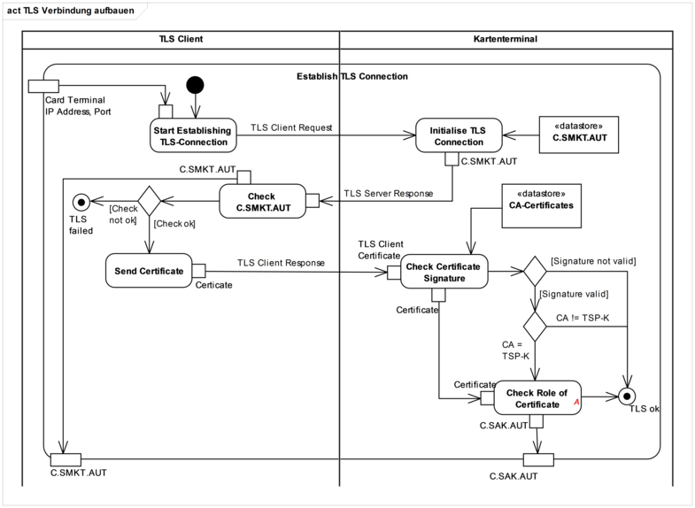

Elektronische Gesundheitskarte und Telematikinfrastruktur
Spezifikation
eHealth-Kartenterminal
| Version |
3.15.0 |
| Revision |
571796 |
| Stand |
16.05.2022 |
| Status |
freigegeben |
| Klassifizierung |
öffentlich |
| Referenzierung |
gemSpec_KT |
Dokumentinformationen
Änderungen zur Vorversion
Anpassungen des vorliegenden Dokumentes im Vergleich zur Vorversion können Sie der nachfolgenden Tabelle entnehmen.
Dokumentenhistorie
Version
|
Stand
|
Kap.
|
Grund der Änderung, besondere Hinweise
|
Bearbeitung
|
2.6.0
|
26.03.08
|
|
Freigegeben
Grundlage für den Basis-Rollout und veröffentlicht mit Rel. 0.5.2 bzw. 0.5.3
|
gematik
|
2.8.0
|
15.09.09
|
|
Freigegeben
Festgelegt im Rahmen der [TestV]
|
gematik
|
2.8.1
|
15.03.10
|
|
Modellierungstechnische Überarbeitung
Einarbeitung der SRQs:
- Streichung EHEALTH
- Streichung Kommando aus Positivliste
- DF.KT Zugriff
Überarbeitung Kapitel 3.6.9
|
SPE/DK
|
3.0.0
|
15.10.12
|
|
Überarbeitung im Rahmen von P71 Basis TI 1
- Streichung CT MODE
- Einschränkung CMD DO
- Anpassung DF.KT Zugriff
- Werksreset über PUK
- Aufnahme von PKI-Bestandteilen
- Ausgliederung des Firmware-Gruppen Konzeptes
- Aufnahme „physikalische Sicherheit“
- Formelle Überarbeitung
|
ITS/SPE
|
3.1.0
|
12.11.12
|
|
freigegeben
|
gematik
|
3.2.0
|
06.06.13
|
|
Einarbeitung Gesellschafterkommentare, Bieterfragen und interner Kommentare
|
P77
|
3.3.0
|
15.08.13
|
|
Einarbeitung lt. Änderungsliste vom 08.08.13
|
P77
|
3.4.0
|
21.02.14
|
|
Losübergreifende Synchronisation
|
PL P77
|
3.5.0
|
17.06.14
|
|
Streichung SMC-B als Trägerkarte des DF.KT gemäß P11-Änderungsliste
|
P77
|
| 3.6.0 |
24.08.16 |
|
Anpassungen zum Online-Produktivbetrieb (Stufe 1) |
gematik |
3.7.0
|
28.10.16
|
|
Aufnahme SMC-B für Organisationen der Gesellschafter, Anpassungen gemäß Änderungsliste
|
gematik
|
3.7.1
|
13.02.17
|
|
Änderungen bzgl. eIDAS, Streichung SigG/SigV
|
gematik
|
3.8.0
|
21.04.17
|
|
Anpassungen lt. Änderungsliste
|
gematik
|
3.9.0
|
14.05.18
|
|
Anpassungen auf Grundlage von P15.4
|
gematik
|
3.10.0
|
15.05.19
|
|
Anpassungen lt. Änderungsliste P18.1
|
gematik
|
| 3.11.0 |
02.10.19 |
|
Anpassungen lt. Änderungsliste P20.1 |
gematik |
| 3.12.0 |
02.03.20 |
|
Anpassungen lt. Änderungsliste P21.1 |
gematik |
| 3.13.0 |
22.06.20 |
|
Anpassungen lt. Änderungsliste P21.3
|
gematik
|
| 3.13.1 |
18.09.20 |
|
Anpassung gemäß C_10266 und C_10273 (P21.5) |
gematik |
| 3.13.2 |
05.11.20 |
|
Anpassungen lt. Änderungsliste P21.6 (C_10184, C_10304, C_10305) |
gematik |
| 3.13.3 |
30.06.21 |
|
Einarbeitung gemF_gSMC-K_Laufzeitverlängerung |
gematik |
| 3.14.0 |
31.01.22 |
|
Einarbeitung Konn_Maintenance_21.6 |
gematik |
| 3.15.0 |
16.05.22 |
|
Einarbeitung gemF_ISO_IEC_14443-Schnitstelle |
gematik |
Inhaltsverzeichnis
1 Einordnung des Dokumentes
1.1 Zielsetzung
Die vorliegende Spezifikation definiert Anforderungen für eHealth-Kartenterminals, die bei der Realisierung (bzw. dem Betrieb) von Produkttypen der TI zu beachten sind. Diese Anforderungen sind als übergreifende Regelungen relevant für Interoperabilität und Verfahrenssicherheit.
Als Grundlage dieser Spezifikation gilt die SICCT-Spezifikation (Secure Interoperable ChipCard Terminal) [SICCT] der TeleTrusT. Darauf aufbauend werden die speziellen und abweichenden Anforderungen des Gesundheitswesens beschrieben.
Es beschreibt besondere funktionale Anforderungen an ein eHealth-Kartenterminal, gibt besondere sicherheitstechnische Anforderungen vor und beschreibt technisch notwendige Maßnahmen insbesondere für eine Nutzung von neuen Diensten der Telematikinfrastruktur für das Gesundheitswesen auf Basis der eGK.
1.2 Zielgruppe
Das Dokument ist maßgeblich für Hersteller von eHealth-Kartenterminals sowie Hersteller von Produkttypen, die hierzu eine Schnittstelle besitzen.
1.3 Geltungsbereich
Dieses Dokument enthält normative Festlegungen zur Telematikinfrastruktur des deutschen Gesundheitswesens. Der Gültigkeitszeitraum der vorliegenden Version und deren Anwendung in Zulassungsverfahren wird durch die gematik GmbH in gesonderten Dokumenten (z. B. Dokumentenlandkarte, Produkttypsteckbrief, Leistungsbeschreibung) festgelegt und bekannt gegeben.
Schutzrechts-/Patentrechtshinweis
Die nachfolgende Spezifikation ist von der gematik allein unter technischen Gesichtspunkten erstellt worden. Im Einzelfall kann nicht ausgeschlossen werden, dass die Implementierung der Spezifikation in technische Schutzrechte Dritter eingreift. Es ist allein Sache des Anbieters oder Herstellers, durch geeignete Maßnahmen dafür Sorge zu tragen, dass von ihm aufgrund der Spezifikation angebotene Produkte und/oder Leistungen nicht gegen Schutzrechte Dritter verstoßen und sich ggf. die erforderlichen Erlaubnisse/Lizenzen von den betroffenen Schutzrechtsinhabern einzuholen. Die gematik GmbH übernimmt insofern keinerlei Gewährleistungen.
1.4 Abgrenzung
Für globale Anforderungen an multifunktionale Kartenterminals wird auf die Spezifikation „SICCT Secure Interoperable ChipCard Terminal“ [SICCT] verwiesen. Für spezielle Anforderungen gilt dieses Dokument.
Die SICCT-Spezifikation dient dabei als Basisdokument und
- orientiert sich an frei verfügbaren internationalen Standards,
- beschreibt technische Spezifikationen der Kommunikationsebene(n) und
- beschreibt grundlegende Sicherheitsanforderungen.
Festlegungen, welche im Schutzprofil (Protection Profile) des Kartenterminals gemäß Common Criteria getroffen werden, werden hier nur angeführt, soweit es für das Verständnis erforderlich ist.
1.5 Methodik
Anforderungen als Ausdruck normativer Festlegungen werden durch eine eindeutige ID sowie die [RFC2119] entsprechenden, in Großbuchstaben geschriebenen deutschen Schlüsselworte MUSS, DARF NICHT, SOLL, SOLL NICHT, KANN gekennzeichnet.
Sie werden im Dokument wie folgt dargestellt:
<AFO-ID> - <Titel der Afo>
Text / Beschreibung
[<=]
Dabei umfasst die Anforderung sämtliche innerhalb Afo-ID und der Textmarke angeführten Inhalte.
In dieser Spezifikation wird der Begriff „Administrator“ verwendet. Hierunter ist keine Berufsbezeichnung zu verstehen, sondern die Rolle Administrator, welche zur Verwaltung der Komponente besondere Rechte und Aufgaben hat. Darüber, welche Person diese Rolle ausfüllt, werden keine Vorgaben gemacht.
2 Architektur
Ein eHealth-Kartenterminal für den Einsatz im deutschen Gesundheitswesen basiert auf der Spezifikation SICCT [SICCT], welche durch Profilierungen für den Betrieb als eHealth-Kartenterminal mit dieser Spezifikation angepasst wird.
Die Ableitungen der physischen Ausprägungen der einzelnen Kartenterminaltypen sind informativ in Abbildung „Pic_KT_0004 Physische Ausprägung Kartenterminal“ basierend auf dem Architekturmodell der SICCT-Spezifikation [SICCT#3.2] dargestellt.
Abbildung 1: Pic_KT_0004 Physische Ausprägung Kartenterminal
Für die physische Ausprägung profiliert diese Spezifikation den SICCT-Standard dahingehend, dass das eHealth-Kartenterminal ein PIN-Pad und ein Display verbindlich aufweisen muss. Ebenso werden für das eHealth-Kartenterminal mindestens eine ID-1 und mindestens zwei ID-000-Kontaktiereinheiten gefordert.
Das eHealth-Kartenterminal muss u. a. zur Authentisierung, zur Integritätssicherung und zur Sicherstellung der Vertraulichkeit der über die LAN-Schnittstelle übertragenen Daten mit einem kryptographischen Schlüssel arbeiten. Für diesen Schlüssel ist aufgrund des teilweise sehr hohen Schutzbedarfes der über die LAN-Schnittstelle übertragenen Informationsobjekte ein sicherer Schlüsselspeicher, ein SM-KT, erforderlich. eHealth-Kartenterminals müssen als physische Ausprägungen der SM-KT die gSMC-KT unterstützen.
Für die Anbindung des eHealth-Kartenterminals an einen Konnektor über die LAN-Schnittstelle ist das SICCT-Protokoll mit den EHEALTH-Erweiterungen (siehe Kapitel 3.7) verpflichtend vorgeschrieben.
Die sich durch die Spezifikation des eHealth-Kartenterminals ergebenden Schnittstellen und die sie nutzenden Kommunikationspartner sind im Komponentendiagramm informativ zusammenfassend dargestellt (siehe Abbildung „Pic_KT_0006 Schnittstellen des Kartenterminals“).
Abbildung 2: Pic_KT_0006 Schnittstellen des Kartenterminals
TIP1-A_2948
Das eHealth-Kartenterminal MUSS die SICCT-Spezifikation [SICCT] umsetzen, soweit diese nicht durch die Spezifikation des eHealth-Kartenterminals [gemSpec_KT] eingeschränkt bzw. erweitert wird.
<=
2.1 Anschlussarten eines Terminals
Die konkrete Ausprägung eines Kartenterminals für den Einsatz im Rahmen der Telematikinfrastruktur im Gesundheitswesen wird durch diese Spezifikation nicht vorgegeben, sondern nur die funktionalen und nicht-funktionalen Anforderungen. Grundsätzlich kennt die Architektur der Telematikinfrastruktur im Gesundheitswesen nur netzwerkfähige Kartenterminals, jedoch sind auch Mischformen vorstellbar. Die jeweilige Ausprägung wird primär von den Anforderungen der Geschäftsprozesse und den Sicherheitsanforderungen vorgegeben.
Zur Erläuterung ist anzumerken, dass grundsätzlich zwei unterschiedliche Lösungsansätze zur Realisierung der Anforderungen dieser Spezifikation umgesetzt werden können:
- Netzwerkfähige Kartenterminals werden über eine TLS-Verbindung angesteuert. Die TLS-Verbindung terminiert im Kartenterminal und sichert die Kommunikation mit dem Kartenterminal ab. Die Ausprägung des Netzwerks zwischen Kartenterminal und Konnektor wird hier nicht betrachtet. Für die Zulassung durch die gematik muss ein netzwerkfähiges Kartenterminal mittelbar oder unmittelbar über eine Ethernet-Verbindung angesteuert werden können. Falls ein netzwerkfähiges Kartenterminal nur mittelbar über Ethernet angesteuert werden kann, muss der Hersteller der gematik gegebenenfalls technischen Support leisten. Die vorliegende Spezifikation ist in diesen Fällen direkt vom Kartenterminal zu erfüllen und nur das Kartenterminal stellt einen Prüf- und Evaluationsgegenstand (Prüf- und Evaluierungsgegenstand im Sinne einer Sicherheitszertifizierung und der Zulassung durch die gematik gemäß [gemZulKomp_KT]) dar.
- Virtuelle Kartenterminals entstehen durch die Kombination einer Software mit einem nicht-netzwerkfähigen Kartenterminal (z. B. mit einer seriellen Schnittstelle) oder einem netzwerkfähigen Kartenterminal, welches nicht die hier gestellten Schnittstellenanforderungen erfüllt. Die adaptierende Software kann dabei auf einem anderen Gerät ablaufen und „exportiert“ das Kartenterminal mit den Schnittstellen und Funktionalitäten wie in dieser Spezifikation beschrieben. Die Verbindung zwischen Kartenterminal und adaptierendem Gerät muss dabei entweder durch den Nutzer des Kartenterminals überschaubar (z. B. Kabel im Sichtbereich des Nutzers) oder der Datenfluss zwischen Kartenterminals und Adapter verschlüsselt sein. Bei diesem Vorgehen sind die Softwarekomponente, deren Ausführungsumgebung, die Verbindung zwischen dem Kartenterminal und der Ausführungsumgebung und der Schlüsselspeicher der Ausführungsumgebung Bestandteil des zu prüfenden und zu evaluierenden Gegenstands (Prüf- und Evaluierungsgegenstand im Sinne einer Sicherheitszertifizierung und der Zulassung durch die gematik gemäß [gemZulKomp_KT]).
2.2 Zulassungsverfahren, Zertifikat
Für eine Zulassung des eHealth-Kartenterminals sind sicherheitstechnische und funktionale Prüfungen erforderlich. Das Zulassungsverfahren unterliegt den Vorgaben und der Aufsicht der gematik. Die Erteilung einer Zulassung erfolgt durch die gematik oder von ihr bevollmächtigte Dritte, siehe auch [gemZul_KT].
TIP1-A_2949
Das eHealth-Kartenterminal MUSS unabhängig von seiner Realisierung (z. B. als virtuelles oder netzwerkfähiges eHealth-Kartenterminal) dieselben Zulassungsrichtlinien erfüllen (siehe [gemZul_KT]).
<=
2.3 Allgemeine Anforderungen
In den folgenden Kapiteln sind die zu erfüllenden funktionalen und nicht-funktionalen Anforderungen an das eHealth-Kartenterminal aufgelistet und gleichzeitig Voraussetzungen an die beteiligten dezentralen Systemkomponenten bei den Leistungserbringern bzw. bei den Organisationen des Gesundheitswesens (z.B. Leistungserbringerorganisationen und Kostenträgerorganisationen) beschrieben.
2.3.1 Unterstützung Prozessor- und Speicherkarten
Das eHealth-Kartenterminal muss die durch die Telematikinfrastruktur entstehenden Anwendungsfälle unter Nutzung von Prozessorkarten sowie Speicherkarten (KVK) unterstützen.
Das bedeutet, dass die technische Funktionalität den Betrieb von kontaktbehafteten Speicher- wie auch Prozessorkarten erlaubt, und die Geräte konzeptionell für folgende Einsatzszenarien verwendbar sein müssen:
- Verarbeitung spezifikations- und norm-konformer KVKs,
- Verarbeitung spezifikations- und norm-konformer eGKs,
- Verarbeitung spezifikations- und norm-konformer HBAs,
- Verarbeitung spezifikations- und norm-konformer SMCs,
- Verarbeitung spezifikations- und norm-konformer ZOD-Karten und
- Verarbeitung spezifikations- und norm-konformer HBA-qSig-Karten
2.3.2 Anforderungen an die Kartenterminals
eHealth-Kartenterminals müssen aus Gesamtsystemsicht einem Konnektor folgende Funktionen bereitstellen:
- einen Zugriff auf einen oder mehrere Kartensteckplätze und darin gesteckte Chipkarten,
- eine eindeutige Adressierbarkeit jedes Kartenslots,
- eine Koordination der Zugriffe auf die Karten bzw. Exklusivität des Zugriffs
- Information über bestimmte Ereignisse (z. B. »Karte wurde (in zeitlicher Nähe) gesteckt«) und einen Event-Mechanismus zur Meldung an den Konnektor (zur Vermeidung von Polling),
- eine authentisierte, verschlüsselte und integritätsgesicherte Kommunikation,
- eine eindeutige, kryptographische Identität in einem „sicheren“ Schlüsselspeicher bereitstellen, für den gilt, dass die Schlüssel nicht durch einen Angreifer aus dem Gerät auslesbar sein dürfen (siehe Kapitel 2.5).
2.3.3 Benutzerführung
TIP1-A_3106
Das eHealth-Kartenterminal MUSS zur Benutzerführung über ein integriertes Display verfügen.
<=
TIP1-A_2950
Das eHealth-Kartenterminal MUSS über ein Display verfügen, mit dem mindestens zwei Zeilen à 16 Zeichen als ASCII-Text dargestellt werden kann.
<=
TIP1-A_3034
Das eHealth-Kartenterminal KANN über die Anforderung [TIP1-A_2950] hinaus zur Anzeige ein Display implementieren, welches mehr als zwei Zeilen a 16 Zeichen ASCII-Text unterstützt.
<=
Graphische Displays, die in der Lage sind zwei Zeilen anzuzeigen, sind zugelassen.
TIP1-A_2951
Das eHealth Kartenterminal MUSS zur Eingabe einer PIN und zur damit verbundenen Authentisierung des Nutzers ein Tastenfeld oder eine vergleichbare Eingabemöglichkeit für eine numerische PIN besitzen.
<=
TIP1-A_2952
Das eHealth-Kartenterminal KANN zusätzlich zu Display und PIN-Pad weitere Sensoren und Eingabeeinheiten vorsehen.
<=
Bei einem „virtuellen Kartenterminal“ kann die Benutzerführung auch über eine externe Anzeigeeinheit realisiert sein; diese unterliegt denselben Anforderungen einer Sicherheitsprüfung und -zulassung.
A_18947
Wenn an einen vom Kartenterminal vorgenommenen Zeilenumbruch ein ’x0B ’‚ ’x0A ’, ’x0D ’, ’x0Ax0D ’ oder ’x0Dx0A’ angrenzt, so DARF an der Stelle NICHT ein weiterer Zeilenumbruch eingefügt werden. <=
A_18948
Das Kartenterminal MUSS am letzten ’x0B’ in einer Zeile einen Zeilenumbruch einfügen. <=
2.3.4 Performance
Das eHealth-Kartenterminal soll in seiner Konstruktion und Programmierung derart ausgelegt sein, dass es die Übertragungsraten zum Hostsystem und zu den Chipkarten entsprechend den technischen Spezifikationen (im Sinne von [SICCT], [eGK], [HBA]) unterstützt.
TIP1-A_3110
Das eHealth-Kartenterminal SOLL eine gleichzeitige Kommunikation zu unterschiedlichen Karten parallel abarbeiten.
<=
Bzgl. der Geschwindigkeit für die Kommunikation zwischen Kartenterminal und Karte ist hier Kap. 3.2.2 zu beachten. Die weiteren Vorgaben zur Performance werden im Dokument [gemSpec_Perf] erhoben.
2.3.5 Zuverlässigkeit
TIP1-A_3035
Das eHealth-Kartenterminal MUSS eine Zuverlässigkeit im Betrieb (im Sinne der Mean-Time-Between-Failure bei Rund-um-die-Uhr-Betrieb) von mindestens
3 Jahren bzw. 200.000 Steckzyklen gewährleisten.
<=
TIP1-A_2953
Der Hersteller des eHealth-Kartenterminals MUSS eine Zuverlässigkeitsprognose seines eHealth-Kartenterminals mit Darstellung der zugrunde gelegten Ausfallraten und Stückzahlen der Bauelemente und der anderen zuverlässigkeitsrelevanten Elemente (Lötstellen, Leiterbahnen, etc.) bereitstellen.
<=
TIP1-A_2954
Der Hersteller des eHealth-Kartenterminals MUSS die Zuverlässigkeitsprognose nach [TIP1-A_2953] seines eHealth-Kartenterminals nachvollziehbar darstellen und Schätzungen erläutern.
<=
2.3.6 Stromversorgung
TIP1-A_3942
Der Hersteller des eHealth-Kartenterminals MUSS sicherstellen, dass das Netzteil des eHealth-Kartenterminals so beschaffen ist, dass ein Dauerbetrieb von 24 Stunden pro Tag möglich ist, ohne dass eine Einschränkung der Funktionsfähigkeit zu verzeichnen ist.
<=
A_20953
Der Hersteller des eHealth-Kartenterminals MUSS Netzteile verwenden, die eine Nutzungsdauer von mindestens 1095 Tagen (entspricht drei Jahren) bei 23° C aufweisen. <=
Hinweis: Zur Testung der Anforderung bezüglich der Nutzungsdauer ist es nicht praktikabel den Prüfling drei Jahre zu testen. Üblich sind Prüfungen unter Bedingungen, die ein schnelleres Altern von Bauteilen bewirken.
A_20954
Der Nachweis zur Nutzungsdauer des Netzteils eines eHealth-Kartenterminals SOLL wie folgt durchgeführt werden:
- Mindestens fünf Testsamples werden mit konstanter Last (konstantem Ausgangsstrom) getestet.
- Die Last für jedes Testsample ergibt sich aus der vom Hersteller schriftlich erklärten Maximalstromaufnahme des Kartenterminals multipliziert mit dem Faktor 1,33. Für die Last gilt eine Toleranz von +5% und –0%.
- Die Prüfung findet mit einer Temperatur aus folgender Tabelle statt, wobei eine Toleranz von +6°K und –0°K gilt. In der Tabelle ist pro Temperatur die Testdauer gemäß des Arrhenius-Modells angegeben, sowie die Mindesttestdauer gemäß dieser Anforderung.
Temperatur
|
Arrhenius
|
Mindesttestdauer
|
50° C
|
41,5 Tage
|
42 Tage
|
60° C
|
14,1 Tage
|
15 Tage
|
70° C
|
5,1 Tage
|
6 Tage
|
80° C
|
2,0 Tage
|
50 Stunden
|
- Der Nachweis zur Nutzungsdauer gilt als erbracht, wenn im gesamten Testzeitraum alle Testsamples stets eine Ausgangsspannung liefern, die nicht mehr als +/-10% vom Erwartungswert abweicht. Als Erwartungswert gilt der Aufdruck auf dem Netzteil.
<=
Hinweis: Die Werte in der Spalte "Arrhenius" wurden wie folgt berechnet (vergleiche https://de.wikipedia.org/wiki/Beschleunigte_Alterung): Ausgehend von der nach dieser Formel errechneten Zeit wurde der Wert für die Mindesttestdauer in der letzten Spalte festgelegt, wobei gilt:
nachgewiesene Nutzungsdauer für die Temperatur ,
Testdauer bei der Temperatur ,
Aktivierungsenergie, konservativ angenommen mit ,
Boltzmann Konstante
TIP1-A_2955
Das eHealth-Kartenterminal MUSS eine dauerhafte Stromversorgung der im eHealth-Kartenterminal gesteckten Chipkarte(n) mit dem Maximalstrom nach den derzeit gültigen internationalen Standards ([ISO7816-3] und [EMV_41]) gewährleisten, sobald die Chipkarte(n) gesteckt sind.
<=
TIP1-A_2956
Das eHealth-Kartenterminal MUSS auch bei kurzzeitig höherem Strombedarf der Chipkarten (siehe [SICCT#A1]) in jedem Fall gewährleisten, dass die Funktionsfähigkeit des eHealth-Kartenterminals und die Stromversorgung der im eHealth-Kartenterminal gesteckten Chipkarten erhalten bleibt.
<=
2.3.7 Fehlertoleranz
TIP1-A_3111
Das eHealth-Kartenterminal MUSS transiente bzw. überbrückbare Fehlerzustände gemäß der Kartenspezifikationen bei der Kartenkommunikation erkennen und automatisch bereinigen.
<=
Konkret, aber nicht ausschließlich bezieht sich dies auf die Resynchronisation der Kartenkommunikation.
TIP1-A_2957
Das eHealth-Kartenterminal MUSS Bedienungsfehler und ungültige Eingaben am Display des eHealth-Kartenterminals signalisieren oder ignorieren.
<=
2.3.8 Wartbarkeit
Der Hersteller sei darauf hingewiesen, dass aufgrund der besonderen Sicherheitsanforderungen (Sicherheitssiegel), die keine Öffnung des Gerätes zu Wartungszwecken ermöglichen, der wartungsfreie Betrieb, bis auf das Einspielen von Firmware-Updates, sicherzustellen ist.
2.3.9 Gehäuse
2.3.9.1 Aufbringen der MAC-Adresse
TIP1-A_2958
Das eHealth-Kartenterminal MUSS die MAC-Adresse über mindestens eine der zwei folgenden Varianten dem Nutzer sichtbar machen:
Variante 1) Die MAC-Adresse MUSS gut erkennbar und in nicht unbeschadet ablösbarer Form (d. h. die MAC-Adresse darf nicht nach dem Entfernen auf ein anderes Gerät aufgebracht werden können) auf dem Gehäuse aufgebracht (z. B. geklebt, gedruckt oder geprägt) sein.
Variante 2) Die MAC-Adresse MUSS über eine lokale Terminalfunktion abrufbar sein. (z. B. auf dem Display).
<=
TIP1-A_2959
Wird die MAC-Adresse des eHealth-Kartenterminals nach [TIP1-A_2958] über eine lokale Terminalfunktion zur Anzeige gebracht, dann MUSS das eHealth-Kartenterminal diese Funktion zur Verfügung stellen, solange keine SICCT-Session am Kartenterminal aktiv ist.
<=
TIP1-A_2960
Wird die MAC-Adresse des eHealth-Kartenterminals nach [TIP1-A_2958] über eine lokale Terminalfunktion zur Anzeige gebracht, so MUSS das eHealth-Kartenterminal diese Funktion auch ohne LAN-Verbindung anbieten.
<=
TIP1-A_2961
Wird die MAC-Adresse des eHealth-Kartenterminals nach [TIP1-A_2958] über eine lokale Terminalfunktion zur Anzeige gebracht, dann MUSS das eHealth-Kartenterminal eine Abfrage über eine lokale Terminalfunktion ohne Authentifikation bereitstellen.
<=
2.3.9.2 Aufbringen eines Prüfzeichens
TIP1-A_2962
Das eHealth-Kartenterminal MUSS auf dem Gehäuse über ein gematik-Prüfzeichen verfügen, welches nicht unbeschadet ablösbar sein darf.
<=
TIP1-A_2964
Der Hersteller des eHealth-Kartenterminals MUSS das gematik-Prüfzeichen an einer während der PIN-Eingabe für den Benutzer gut sichtbaren Stelle am eHealth-Kartenterminal aufbringen.
<=
TIP1-A_3107-01
Der Hersteller des eHealth-Kartenterminals MUSS eine der abgebildeten Varianten als Prüfzeichen verwenden und sicherstellen, dass die optische Gestaltung des Prüfzeichens den folgenden Vorgaben entspricht:
- Die Mindesthöhe des Prüfzeichens (exklusiv Schutzbereich) beträgt 10 mm.
- Das Seitenverhältnis des Prüfzeichens ist Breite/Höhe = 2,7/1.
- Die Farbgebung des Prüfzeichens ist einfarbig auf transparentem oder kontrastfarbigem Grund.
- Der einfarbige Schriftzug muss in einer der folgenden Farben ausgeführt sein:
- schwarz (RGB: 0, 0, 0)
- dunkelblau (RGB: 0, 14, 82)
- weiß (RGB: 255, 255, 255)
- Der Hintergrund muss transparent oder mit einer Kontrastfarbe versehen sein:
- weiß (RGB: 255, 255, 255) für schwarzen und blauen Schriftzug
- schwarz (RGB: 0, 0, 0) für weißen Schriftzug
- dunkelblau (RGB; 0, 14, 82) für weißen Schriftzug
- An allen vier Seiten des Prüfzeichens ist ein Schutzbereich vorzusehen. Dieser Bereich ist grundsätzlich frei zu halten von Objekten oder Beschriftungen.
- Der Schutzbereich wird durch die Größe des Prüfzeichens definiert und entspricht umlaufend der Höhe des Buchstaben "Z" im Schriftzug "Zugelassen".
- Das Prüfzeichen muss bei vorgesehener Verwendung des Kartenterminals durch einen Benutzer waagerecht orientiert sein.


zulässige Varianten des Prüfzeichens und Darstellung des Schutzbereichs
<=
Die Berechtigung und Verpflichtung zur Nutzung des Prüfzeichens durch den Hersteller erfolgt mit der Zulassung der Geräte durch die gematik. Im Rahmen des Zulassungsantrags werden dem Hersteller alle Versionen des gematik-Prüfzeichens als Bilddateien in geeigneter Auflösung zur Verfügung gestellt.
Das Prüfzeichen bietet einen Wiedererkennungswert für zugelassene Kartenterminals, es sind keine Sicherheitsfunktionen damit verbunden.
2.3.10 Kommunikationsprotokolle
TIP1-A_3189
Das eHealth-Kartenterminal MUSS IPv4 unterstützen.
<=
TIP1-A_3190
Das eHealth-Kartenterminal SOLL in der Lage sein, IPv4 und IPv6 nur mittels eines Firmware Updates zu unterstützen.
<=
Nur bei eHealth-Kartenterminals, die auf bereits zugelassenen eHealth-BCS-Geräten basieren, kann eine Nichterfüllung der Anforderung akzeptiert werden.
TIP1-A_5656
Das eHealth-Kartenterminal KANN abweichend von den Regelungen in [SICCT#6.1.2] auf die Unterstützung des Auto-IP-Protokolls gemäß [RFC3927] verzichten.
<=
2.3.11 Firmware Update
TIP1-A_2965
Das eHealth-Kartenterminal MUSS über eine sichere Update-Möglichkeit der KT-Firmware verfügen, welche es ermöglicht, alle Softwarebestandteile, ausgenommen ROM-Bereiche, zu aktualisieren.
<=
Hierunter ist sowohl der Wechsel auf eine neuere Firmware als auch ein Downgrade auf eine über das Konzept der Firmware-Gruppen (siehe Abschnitt 2.4.1.1) zugelassene Firmware zu verstehen.
TIP1-A_3188
Das eHealth-Kartenterminal MUSS nach einem Firmware-Update sämtliche Konfigurationen, wie zum Beispiel Terminal-Name, IP-Adresse oder Pairing-Informationen, erhalten.
<=
Die sicherheitstechnischen Anforderungen an das Firmware-Update sind Kapitel 2.4.1.1 zu entnehmen.
Im Folgenden werden unter dem Begriff Update-Komponente jene Funktionalitäten im LAN zusammengefasst, welche das Firmware-Update entsprechend der Vorgaben dieser Spezifikation umsetzt, unabhängig davon, auf welchen Komponenten (Kartenterminal und/oder Drittsystem) diese umgesetzt wird.
TIP1-A_3152
Hersteller des eHealth-Kartenterminals MÜSSEN eine Update-Komponente zur Verfügung stellen, über welche innerhalb des in der dezentralen Umgebung installierten LANs die Firmware des eHealth-Kartenterminals aktualisiert werden kann.
<=
TIP1-A_3153
Zur Umsetzung von [TIP1-A_3152] MUSS der Hersteller des eHealth-Kartenterminals mindestens eine der beiden folgenden Update-Varianten für eHealth-Kartenterminals umsetzen:
Push-Verfahren
Eine LAN-spezifische Update-Komponente wird auf einem Drittsystem innerhalb des LANs betrieben welche die Firmware-Updates auf den Kartenterminals einspielt. Das Verfahren zur Bereitstellung der Firmware-Updates auf einer LAN-spezifischen Update-Komponente ist herstellerspezifisch (z. B. organisatorische Prozesse).
Pull-Verfahren
eHealth-Kartenterminals beziehen Firmware-Updates selbstständig von einem Update-Server welcher auf einem Drittsystem innerhalb des LANs lokalisiert sein kann. Das Verfahren zur Bereitstellung der Firmware-Updates auf einer LAN-spezifischen Update-Komponente ist herstellerspezifisch (z. B. organisatorische Prozesse).
<=
Die Konfiguration der Update-Komponente ist ebenso wie deren Realisierung sowie die Details zum Mechanismus, mit dem ein Firmware-Update auf den Kartenterminals über das LAN eingespielt wird, herstellerspezifisch (beispielsweise kann das Firmware-Update über die SICCT-Schnittstelle eingespielt werden).
Zusätzlich zur herstellerspezifischen Update-Komponente unterstützt das Kartenterminal die Update-Funktionen der SICCT-Spezifikation, wodurch eine ansteuernde Komponente in die Lage versetzt wird, das Kartenterminal zu aktualisieren (z. B. der KSR-Dienst der Telematikinfrastruktur).
TIP1-A_6481
Der Hersteller des eHealth-Kartenterminals MUSS jede zugelassene Firmware-Version umgehend als Update-Paket über die in [gemSpec_KSR] definierte Schnittstelle P_KSRS_Upload im Konfigurationsdienst (KSR) ablegen.
<=
2.3.12 Terminal Managementverfahren
TIP1-A_2966
Ein eHealth-Kartenterminal MUSS über eine direkte Managementschnittstelle verfügen, welche zur Interaktion das Display sowie die Eingabeeinheit des Kartenterminals nutzt.
<=
TIP1-A_2967
Das eHealth-Kartenterminal MUSS über die direkte Managementschnittstelle mindestens die Möglichkeit bieten, administrative SICCT-Kommandos gemäß [SICCT# 6.2.2.1] zu erlauben und zu verbieten sowie weitere vorhandene Managementschnittstellen (siehe [TIP1-A_2970]) zu aktivieren und zu deaktivieren.
<=
TIP1-A_2968
Das eHealth-Kartenterminal MUSS die Aktivierung und Deaktivierung von Managementschnittstellen gemäß [TIP1-A_2970] ausschließlich über die direkte Managementschnittstelle ermöglichen.
<=
TIP1-A_2969
Das eHealth-Kartenterminal MUSS die Möglichkeit der Administration ausschließlich über die direkte Managementschnittstelle oder aktivierte Managementschnittstellen gemäß [TIP1-A_2970] erlauben.
<=
TIP1-A_2970
Das eHealth-Kartenterminal KANN neben der direkten Managementschnittstelle über weitere Managementschnittstellen verfügen.
<=
TIP1-A_2971
Das eHealth-Kartenterminal KANN Schnittstellen anbieten, die es ermöglichen das eHealth-Kartenterminal über das LAN-Netzwerk zu administrieren.
<=
Diese Schnittstellen können sowohl vom Konnektor, von Administrationsprogrammen der Hersteller als auch über das Webinterface durch den Administrator bedient werden (siehe auch Kapitel 2.4.5). LAN-Schnittstellen zur Administrierung sind mittels TLS gesichert (siehe Kapitel 2.4.5.1).
TIP1-A_3263
Der Hersteller des eHealth-Kartenterminals MUSS den Anwender bzw. den Administrator in geeigneter Form (z. B. in der Benutzerdokumentation) über alle für die Konfiguration notwendigen Parameter einschließlich nötiger Eigenschaften (z. B. Zweck, Wertebereich, Abhängigkeiten) informieren.
<=
Aus den Sicherheitsforderungen des PP kann es sich ergeben, dass einzelne Managementfunktionen als sicherheitsrelevant eingestuft werden und daher Interaktionen an der lokalen Managementschnittstelle des KTs erfordern. Näheres hierzu ergibt sich aus dem PP und ist herstellerspezifisch umzusetzen.
2.3.12.1 SICCT-Terminalname
TIP1-A_3144
Das eHealth-Kartenterminal MUSS den SICCT-Terminalnamen (siehe [SICCT#6.1.3.1]) des Kartenterminals über eine lokale Terminalfunktion auf dem Display zur Anzeige bringen.
<=
TIP1-A_3145
Das eHealth-Kartenterminal MUSS die Funktion zur Anzeige des SICCT-Terminalnamens immer zur Verfügung stellen, solange keine SICCT-Session am eHealth-Kartenterminal aktiv ist.
<=
TIP1-A_3146
Das eHealth-Kartenterminal MUSS die lokale Terminalfunktion zur Anzeige des SICCT-Terminalnamens ohne Authentifikation anbieten.
<=
A_20955
Das eHealth-Kartenterminal MUSS für die Anzeige des SICCT-Terminalnamens am Display denselben Wert verwenden, wie im Dienstbeschreibungspaket gemäß [SICCT#Tabelle 9]. <=
A_20956
Wenn ein SICCT-Terminalname erzeugt oder geändert wird, so MUSS die erzeugende oder ändernde Instanz (beispielsweise der Hersteller des eHealth-Kartenterminals oder der Anwender oder der Administrator) dafür sorgen, dass der SICCT-Terminalname folgende Kriterien erfüllt:
- Der SICCT-Terminalname besteht aus ein bis 32 Zeichen.
- Jedes Zeichen ist entweder das Minuszeichen '-', oder einer der 26 Großbuchstaben 'A' bis 'Z' oder einer der 26 Kleinbuchstaben 'a' bis 'z' oder eine der zehn Ziffern '0' bis '9'.
- Das Minuszeichen '-' ist als letztes Zeichen nicht zulässig.
- Für das Dienstbeschreibungspaket werden die Zeichen des SICCT-Terminalnamens gemäß der ASCII Tabelle konvertiert.
<=
Beispiele: Die folgende Tabelle listet Beispiele für zulässige SICCT-Terminalnamen und wie diese am Display und im Dienstbeschreibungspaket dargestellt werden:
Displayanzeige
|
DO'84' im Dienstbeschreibungspaket
|
Bemerkung
|
A
|
'84 01 41'
|
ein Zeichen
|
z-0
|
'84 03 7a2d30'
|
mit Minuszeichen
|
Foo-Bar-4711
|
'84 0c 466f6f2d4261722d34373131'
|
etwas realistisch
|
2.3.12.2 Produkttypversion und Selbstauskunft
Die Anforderungen bezüglich der Produkttypversion und Selbstauskunft sind in [gemSpec_OM] festgelegt. Hierüber hinaus gilt:
TIP1-A_3938
Das eHealth-Kartenterminal MUSS die Rückgabe der Selbstauskunft dem Administrator über die direkte Managementschnittstelle ermöglichen.
<=
TIP1-A_3939
Das eHealth-Kartenterminal MUSS im Zuge der Selbstauskunft die aktuell installierte Firmware-Gruppen-Version darstellen.
<=
2.3.12.3 Informationen über gSMC-KT
A_18946
Das eHealth-Kartenterminal MUSS das Ablaufdatum mindestens der folgenden Zertifikate der eingesteckten gSMC-KT über die direkte Managementschnittstelle oder webbasierte Managementschnittstelle des Kartenterminals zur Anzeige bringen:
- Für gSMC-KT der Generation G2 das Ablaufdatum des Zertifikats in EF.C.SMKT.AUT.R2048
- Für gSMC-KT ab Generation G2.1 das Ablaufdatum des Zertifikats in EF.C.SMKT.AUT2.XXXX
- Für gSMC-KT CV Zertifikat RemotePin EF.C.SMC.AUTD_RPS_CVC.E256
<=
A_18933
Das Kartenterminal MUSS den Personalisierungs-Status (dual RSA- und ECC-personalisiert oder nur RSA-personalisiert) der eingesteckten gSMC-KT über die direkte Managementschnittstelle oder webbasierte Managementschnittstelle des Kartenterminals zur Anzeige bringen.
<=
2.3.13 Mehrwertmodule
TIP1-A_3160
Ein Hersteller KANN Mehrwertmodule (MWM) auf einem eHealth-Kartenterminal installieren, um z. B. zusätzliche Anwendungen in einem eHealth-Kartenterminal zu ermöglichen.
<=
Die gleichzeitige Verwendung von eHealth-Applikationen und herstellerspezifischen Mehrwertmodulen kann ein Sicherheitsrisiko darstellen.
Um die Sicherheit bei gleichzeitiger Verwendung von MWM und eHealth-Applikationen sicher zu stellen, ist der Nachweis der informationstechnischen Trennung von Mehrwertmodulen Bestandteil der Zulassung bzw. deren Evaluierung. Mehrwertmodule werden von der gematik nicht zugelassen.
TIP1-A_3036
Der Hersteller des eHealth-Kartenterminal MUSS sicherstellen, dass Mehrwertmodule keine Störungen der eHealth-Anwendungen verursachen und nicht auf Bereiche der eHealth-Anwendungen zugreifen, dies schließt auch eHealth-Anwendungen auf der eGK und dem HBA mit ein.
<=
TIP1-A_3161
Das eHealth-Kartenterminal SOLL dem Administrator die Möglichkeit bieten, die Mehrwertmodule zu aktivieren und zu deaktivieren, wobei der Mechanismus herstellerspezifisch ist.
<=
TIP1-A_3162
Das eHealth-Kartenterminal MUSS jederzeit für den Benutzer klar ersichtlich anzeigen, ob aktuell ein eHealth-Dienst oder ein Mehrwertmodul des eHealth-Kartenterminals aktiv ist.
<=
TIP1-A_3261
Das eHealth-Kartenterminal MUSS sicherstellen, dass der Mechanismus gemäß [TIP1-A_3162], mit dem angezeigt wird, welcher Diensttyp aktiv ist, unter der alleinigen Kontrolle des Kartenterminals liegt und es insbesondere nicht möglich ist, dass ein Mehrwertmodul diese Anzeige manipulieren kann.
<=
TIP1-A_3262
Das eHealth-Kartenterminal DARF den Zugriff eines Mehrwertmoduls auf die auf der SM-KT gespeicherte Identität NICHT unterbinden.
<=
2.3.14 Zugriffsanzeige
TIP1-A_2972
Das eHealth-Kartenterminal MUSS Kartenzugriffe (Lesen, Schreiben, Operationsausübung) auf Chipkarten im ID-1 Format für den Benutzer gut sichtbar anzeigen (z. B. mittels einer LED die bei Kartenzugriff blinkt).
<=
Es ist weder erforderlich, Zugriffe für jede Karte separat noch die Art des Zugriffs anzuzeigen.
TIP1-A_2973
Bei der Anzeige gemäß [TIP1-A_2972] MUSS das eHealth-Kartenterminal zumindest den Umstand anzeigen, dass auf eine Karte im eHealth-Kartenterminal zugegriffen wird und dies für die gesamte Dauer des Zugriffs.
<=
2.3.15 Desinfektion der Kartenterminals (informativ)
Hersteller seien darauf hingewiesen, dass eHealth-Kartenterminals auch in Einsatzumgebungen verwendet werden können, die einem erhöhten Übertragungsrisiko für Infektionen, z. B. durch häufigen Hand- und Hautkontakt, ausgesetzt sind. Die regelmäßige Desinfektion der eingesetzten Geräte beim Leistungserbringer, dazu gehören auch Kartenterminals, ist eine Maßnahme zur Verminderung des Übertragungsrisikos und zur Einhaltung entsprechender Vorgaben, z. B. denen des Arbeitsschutzgesetzes. Weiterführende Informationen sind unter anderem den folgenden Dokumenten zu entnehmen:
- Anforderungen an die Hygiene bei der Reinigung und Desinfektion von Flächen des Robert-Koch-Institutes [RKI],
- Technischen Regeln für biologische Arbeitsstoffe im Gesundheitswesen und in der Wohlfahrtspflege [TRBA 250],
- Hygieneleitfaden des Deutschen Arbeitskreises für Hygiene in der Zahnmedizin [DAHZ].
2.3.16 Produktsicherheit (informativ)
Das Kartenterminal darf nur in den Verkehr gebracht werden, wenn Sicherheit und Gesundheit von Anwendern nicht gefährdet werden. Dazu muss der Anwender der Produkte über alle Sicherheitsinformationen zum Produkt informiert werden. Auch muss der Kartenterminalhersteller den Lebenszyklus seines Produktes beobachten und bei bekannt gewordenen Mängeln die zuständige Behörde informieren und gegebenenfalls einen Rückruf einleiten. Das Kartenterminal muss den Anforderungen aus dem Gesetz über die Bereitstellung von Produkten auf dem Markt, kurz genannt Produktsicherheitsgesetz (ProdSG) entsprechen [PRODSG].
2.3.17 Physikalische Sicherheit-Klima
Als normaler Einsatzort wird für das eHealth-Kartenterminal ein Büroraum / ein Behandlungsraum angenommen.
TIP1-A_3930
Das eHealth-Kartenterminal MUSS für den Einsatzort Büroraum bzw. Behandlungsraum die Anforderungen gemäß „Tab_KT_003 Anforderungen Klima" erfüllen.
<=
Tabelle 1: Tab_KT_003 Anforderungen Klima
Prüfung Klima
|
Trockene Wärme (Dry Heat) nach DIN EN 60068-2-2 Methode Bb wird für die Bedingungen als obere Lagertemperatur von 55°C und einer Beanspruchungsdauer von 16 h geprüft und die Funktionsfähigkeit MUSS bestätigt werden.
|
Kälte (Cold) nach DIN EN 60068-2-1 Methode Ab wird für die Bedingungen als untere Lagertemperatur von -10°C und einer Beanspruchungsdauer von 16 h geprüft und die Funktionsfähigkeit MUSS bestätigt werden.
|
Nach den beiden oben genannten Belastungen durch extreme Lagertemperaturen und der Nachbehandlungsdauer von 1 h MUSS die Funktionsfähigkeit des Kartenterminals gewährleistet sein, was durch Funktionsprüfungen nachzuweisen ist.
|
Die Funktionsfähigkeit im Betrieb MUSS bei einer oberen Temperatur von 40°C über eine Dauer von 2 h gewährleistet sein. Dies wird für das Kartenterminal durch Prüfung nach DIN EN 60068-2-2 Methode Bb bei gleichzeitigen Funktionsprüfungen nachgewiesen.
|
2.3.18 Physikalische Sicherheit-Vibration
Die durch Vibrationen und mechanische Schockbelastungen auftretenden Belastungen müssen vom Kartenterminal schadensfrei gemäß IEC 60068-2 Methode nach den folgenden Anforderungen absolviert, geprüft und nachgewiesen werden.
TIP1-A_3932
Das eHealth-Kartenterminal MUSS die Anforderungen gemäß „Tab_KT_004 Anforderungen Vibration“ erfüllen.
<=
Tabelle 2: Tab_KT_004 Anforderungen Vibration
Prüfung Vibration
|
Sinusförmige Schwingungstests (Vibration, sinusoidal) nach DIN EN 60068-2-6 Methode Fc in drei senkrecht stehenden Achsen in einem Frequenzbereich von 2 Hz bis 200 Hz üblicherweise 1 h je Achse MÜSSEN erfolgreich nachgewiesen werden. Bis zu einer Frequenz von 9 Hz wird dabei mit einer konstanten Amplitude von 1,5 mm belastet, darüber bis zur oberen Frequenz wird mit einer konstanten Beschleunigung von 5 m/s2 (0,5 g) belastet.
|
Es MÜSSEN mechanische Schockprüfungen (Shock) nach DIN EN 60068-2-27 Methode Ea in drei senkrecht stehenden Achsen (sechs Richtungen) erfolgreich nachgewiesen werden. Es wird dabei für jede Achse mit 3 positiven und 3 negativen Schocks mit 150 m/s2 (15 g) Amplitude und einer Dauer von 11 ms belastet.
|
Dauerschocktests (Bump) nach DIN EN 60068-2-29 Methode Eb in drei senkrecht stehenden Achsen mit halbsinusförmigen Schocks MÜSSEN erfolgreich nachgewiesen werden. Es wird dabei für jede Achse mit 1000 positiven und 1000 negativen Schocks mit 100 m/s2 (10 g) Amplitude und einer Dauer von 16 ms belastet.
|
2.3.19 Benutzerfreundlichkeit und weitere Kennwort-/PIN-Eingaben
In den relevanten Dokumenten zum eHealth-Kartenterminal sind verschiedene Credentials detailliert spezifiziert. Dabei handelt es sich z.B. um das Direktkennwort zur Sicherung der direkten Managementschnittstelle, Administratorkennwörter zur Sicherung weiterer Managementschnittstellen, das Passwort zur Sicherung der CT ADMIN Session ([SICCT]) sowie optional Kennwörter zur Authentifizierung von weiteren Nutzern.
Weitere herstellerspezifische Credentials (z.B. zum Schutz des Shared Secrets durch Verschlüsselung), die sich durch die Verwendung geeigneter Hardware-Sicherungs-maßnahmen vermeiden lassen, dürfen unter dem Aspekt der Benutzerfreundlichkeit nicht notwendig sein. Jede weitere Abfrage von Credentials, insbesondere wenn sie nicht zum Schutz von Managementschnittstellen bei Administration sondern auch im Regelbetrieb notwendig ist, verringert die Benutzerfreundlichkeit und damit die Akzeptanz des Geräts erheblich.
TIP1-A_6541
Das eHealth-Kartenterminal SOLL neben den in dieser Spezifikation ([gemSpec_KT]), in [SICCT] und in [BSI-CC-PP-0032] definierten NICHT weitere Kennwort-, Passwort- bzw. PIN-Eingaben (auch als credentials bezeichnet) außerhalb des PIN-Handlings von Karten erforderlich machen.
<=
Nur bei eHealth-Kartenterminals, die auf bereits zugelassenen eHealth-BCS-Geräten basieren und bei denen die Umstellung vom eHealth-BCS-Spezifikationsstand auf den eHealth-Spezifikationsstand per Firmware Upgrade (Firmware Update) erfolgt, kann eine Nichterfüllung der Anforderung [TIP1-A_6541] akzeptiert werden.
2.3.20 Zubehör
Es ist möglich, ein eHealth-Kartenterminal mit Zubehör zu betreiben. Als Zubehör werden im Folgenden Geräte oder Vorrichtungen verstanden, welche die Funktionalität des eHealth-Kartenterminals ergänzen, erweitern oder – mit den in den folgenden Textpassagen genannten Einschränkungen – duplizieren. Dies geschieht vorwiegend, um den Nutzerkomfort zu verbessern. Zubehör wird stets im Zusammenspiel mit einem eHealth-Kartenterminal betrieben und nie als Stand-Alone-Gerät eingesetzt. In diesem Abschnitt werden nur solche Arten von Zubehör betrachtet, die zur Erfüllung ihrer Funktion eine Datenkommunikation mit einem eHealth-Kartenterminal benötigen und somit auch selbst bestimmte Schutzfunktionen umsetzen, die wiederum von der konkreten Ausprägung des Zubehörs abhängen. Andere Hilfsmittel, die nicht technisch mit einem eHealth-Kartenterminal interagieren werden hier nicht betrachtet. Unter Berücksichtigung dieser Definition wird im Folgenden ausschließlich von „Zubehör“ gesprochen.
Logisch betrachtet besteht ein eHealth-Kartenterminal, welches zusammen mit Zubehör betrieben wird, aus drei Komponenten:
- Basis-eH-KT, ein eHealth-Kartenterminal in seiner „klassischen“ Ausprägung und Funktion inklusive Hardware (identisch zu einem eHealth-Kartenterminal, welches ohne Zubehör betrieben wird),
- Zubehör bestehend aus Hard- und Software und
- KomZubehör, einer Software-Erweiterung des eHealth-Kartenterminals zum Datenaustausch mit Zubehör.
2.3.20.1 Zulassungsverfahren für eHealth-Kartenterminal und Zubehör zusammen
Der Betrieb von Zubehör erfordert eine Zulassung des Zubehörs durch die gematik. Dabei wird nie das Zubehör selbst zugelassen, sondern stets das Zubehör in Verbindung mit einem bestimmten Produkttypen für ein eHealth-Kartenterminal, welches das Zubehör nutzt. Falls eine Nutzung ein und desselben Zubehörs auch mit einer anderen Ausprägung von eHealth-Kartenterminals angestrebt ist, so ist hierfür eine weitere Zulassung erforderlich. Dies ist unabdingbar wegen der für die Kommunikation mit dem Zubehör notwendigen Anpassungen an der jeweiligen eHealth-Kartenterminal-Firmware (Software-Erweiterung KomZubehör).
2.3.20.2 Sicherheitsnachweise
Für die Zulassung eines eHealth-Kartenterminals mit einem Zubehör sind drei Sicherheitsnachweise notwendig, die im Anschluss näher betrachtet werden:
- CC-Zertifizierung nach PP-0032 für das Basis-eH-KT,
- Prüfung durch eine CC-Prüfstelle für das Zubehör und
- Prüfung durch eine CC-Prüfstelle für die KomZubehör Software-Erweiterung des eHealth-Kartenterminals.

Abbildung 3: Überblick zu Komponenten eines eHealth-Kartenterminals
Motivation für dieses Vorgehen ist, einen zielgerichteten, flexiblen Sicherheitsnachweis zu ermöglichen, der die notwendige Prüftiefe erreicht, um eine belastbare Aussage zur Sicherheit zu erhalten, aber jeweils schnell für unterschiedliche Zubehöre individuell anpassbar ist. Daher wird für das Zubehör und die KomZubehör Software-Erweiterung am eHealth-Kartenterminal das Prüfverfahren „Sich.techn. Eignung: Prüfung durch CC-Prüfstelle“ eingeführt.
Kern dieses Prüfverfahrens ist die Prüfung des Zubehörs und der KomZubehör Software-Erweiterung des eHealth-Kartenterminals durch die Common-Criteria-Prüfstelle, die bereits die Evaluation bei einer erfolgreichen CC-Zertifizierung des eHealth-Kartenterminal, welches mit dem Zubehör erweitert wird, durchgeführt hat. Konkret hat auch der CC-Evaluator, der bereits das eHealth-Kartenterminal evaluierte, als Prüfer zu agieren. Grundlage der Prüfung sind vom Hersteller erstellte und mit der gematik abgestimmte individuelle Prüfvorgaben ähnlich einem Security Target (ST). Die Prüfvorgaben decken die Anforderungen des Kapitels ab und werden von der gematik erst nach fachlicher Prüfung auf Korrektheit und Vollständigkeit freigegeben. Nur von der gematik abgenommene Prüfvorgaben sind als Grundlage für die Sicherheitsprüfung zulässig.
Fokus der Prüfung sind die Aspekte ATE_IND und AVA_VAN eines CC-Verfahrens, wobei die für die Prüfstelle für die Ausführung dieser Aspekte notwendigen Artefakte ebenso vom Hersteller an die Prüfstelle zu liefern sind wie in einem CC-Verfahren (dies betrifft etwa die Dokumente, die bei einem CC-Verfahren in der Klasse ADV erstellt werden, wobei eben eine formale Evaluierung dieser Dokumente selbst nicht erforderlich ist). Die Prüftiefe der Tests und der Schwachstellenanalyse durch die Prüfstelle ist mit ATE_IND.2 und AVA_VAN.4 dabei identisch mit der des CC-Verfahrens des eHealth-Kartenterminals.
Hinsichtlich der KomZubehör-Software-Erweiterung des eHealth-Kartenterminals wird zusätzlich geprüft, dass diese Erweiterungen die in der CC-Zertifizierung nach PP-0032 betrachteten Sicherheitsfunktionen nicht negativ beeinflusst, diese also aufrecht erhalten bleiben.
Als Ergebnis der Prüfung wird der Prüfbericht (vergleichbar mit dem Bericht ETR eines CC-Verfahrens) von der Prüfstelle erwartet, der vom Hersteller bei der gematik zur Abnahme einzureichen ist. Die gematik wird bei Nachfragen direkt auf die Prüfstelle zugehen.
Der Prozess zu diesem Sicherheitsnachweis ist in der Verantwortung der gematik. Eine Zertifizierung durch das BSI findet nicht statt. Das BSI ist im Rahmen der bestehenden BSI-Zertifizierung an diesem beschriebenen Prozess nicht beteiligt und erteilt weder eine Aussage zur Sicherheit des Zubehörs noch der KomZubehör-Software-Erweiterung des eHealth-Kartenterminals.
Die CC-Zertifizierung des eHealth-Kartenterminals nach PP-0032 bleibt unverändert. Das PP-0032 wird weder bezüglich des Zubehörs noch der Kommunikation mit dem Zubehör angepasst. Das Zubehör ist nie Teil des TOE bei dieser CC-Zertifizierung. Es wird lediglich implizit im CC-Verfahren geprüft, dass die zusätzliche KomZubehör Software-Erweiterung im eHealth-Kartenterminal keinen negativen Einfluss auf die nach PP-0032 zu zertifizierenden Sicherheitsfunktionen hat.
Im Betrieb eines eHealth-Kartenterminals, welches prinzipiell Zubehör unterstützt, gibt es somit aus Sicht des Sicherheitsnachweises zwei Zustände: Bei Nutzung ohne Zubehör – also des reinen Basis-eH-KT – findet ein Betrieb unter dem Sicherheitsnachweis „CC-Zertifizierung unter Hoheit des BSI“ statt. Bei der Nutzung des eHealth-Kartenterminals mit Zubehör findet ein Betrieb unter dem Sicherheitsnachweis „Prüfung durch CC-Prüfstelle unter Hoheit der gematik“ statt. In beiden Fällen liegt somit ein sicherer und von der gematik zugelassener Betrieb vor.
2.3.20.3 Anforderungen
In diesem Kapitel sind die zu erfüllenden funktionalen und nicht-funktionalen Anforderungen an das Zubehör des eHealth-Kartenterminals aufgelistet und gleichzeitig Voraussetzungen an das eHealth-Kartenterminal beschrieben, mit dem das Zubehör zusammenarbeiten soll.
Kommunikationsschnittstellen des Zubehörs:
- Das Zubehör kommuniziert in jedem Fall mit dem ihm (durch Pairing) zugeordneten Basis-eH-KT. Dieser Kommunikationskanal ist hinsichtlich Vertraulichkeit und Integrität geschützt.
- Es ist möglich, dass Zubehör im Sinne einer Datenausgabe oder Dateneingabe mit einem Nutzer interagiert.
- Es ist möglich, dass Zubehör im Sinne eines Proximity Coupling Device (PCD) mit einer Smartcard interagiert. In diesem Fall werden Kommando-APDU stets im Basis-eH-KT erzeugt und vom Zubehör lediglich an die Smartcard durchgereicht. In gleichartiger Weise werden Antwort APDU einer Smartcard vom Zubehör an das Basis-eH-KT durchgereicht. Zubehör mit einer Kontaktiereinheit für die kontaktbehaftete Kommunikation mit Smartcards ist ausgeschlossen.
Weitere Verbindungen eines Zubehörs, etwa mit einem Konnektor, sind nicht gestattet.
A_20249
Das eHealth-Kartenterminal DARF die Sicherheitsfunktionen des Basis-eH-KT NICHT negativ beeinflussen, wenn Zubehör vorhanden und deshalb die Software-Erweiterungen aktiviert ist. <=
A_20250
Die Kommunikation zwischen einem Zubehör und einem eHealth-Kartenterminal MUSS mit kryptographischen Verfahren / Protokollen (TLS) unter beidseitiger Authentisierung und Beachtung der Vorgaben aus gemSpec_Krypt gesichert werden. <=
A_19414
Das Zubehör MUSS für die Authentisierung beim Verbindungsaufbau der Kommunikation mit einem eHealth-Kartenterminal eine kryptographische Identität in Form eines kryptographischen Schlüssels entsprechend der Vorgaben von gemSpec_Krypt besitzen und vor Auslesen geschützt speichern. <=
A_19415
Das Zubehör MUSS auf Anforderung des eHealth-Kartenterminals ein Shared Secret unter Berücksichtigung der Vorgaben aus gemSpec_Krypt mit dem eHealth-Kartenterminal aushandeln (Pairing-Geheimnis), dies vor Auslesen geschützt speichern und dies direkt nach jedem Verbindungsaufbau dem eHealth-Kartenterminal präsentieren. <=
A_19416
Besonders schützenswerte Daten (beispielsweise Passwörter, PINs, Schlüssel der Versicherten oder personenbezogene Daten) DÜRFEN im Zubehör NICHT persistent gespeichert werden. <=
A_19417-01
Besonders schützenswerte Daten (beispielsweise Passwörter, PINs, Schlüssel der Versicherten oder personenbezogene Daten), die im Zubehör verarbeitet werden, MÜSSEN unmittelbar nach Abschluss der Verarbeitung sicher aus dem Arbeitsspeicher gelöscht werden. <=
A_19418
Das Zubehör MUSS die Einsatzbereitschaft der sicheren Kommunikationsverbindung mit dem gepairten eHealth-Kartenterminal anzeigen. <=
A_19419
Das eHealth-Kartenterminal MUSS die Einsatzbereitschaft der sicheren Kommunikationsverbindung mit dem gepairten Zubehör anzeigen. <=
A_19420
Das Zubehör MUSS die Aktualisierung seiner Software ermöglichen. <=
A_19421
Das Zubehör MUSS zur Aktualisierung seiner Software die Kommunikationsverbindung mit dem gepairten eHealth-Kartenterminal nutzen. <=
A_19422
Das Zubehör MUSS die Integrität eines Software-Updates gegen einen intern vor Manipulation geschützt gespeicherten Vertrauensanker prüfen DARF das Update NICHT anwenden, wenn diese Prüfung fehlschlägt. <=
A_19423
Das Zubehör MUSS das Ablesen der Version seiner Software über das gepairte eHealth-Kartenterminal ermöglichen. <=
A_19424
Das eHealth-Kartenterminal MUSS seine Funktionalität deaktivieren, die am Zubehör dupliziert wird (wie z.B. Eingabe der PIN und Ausgabe der dazugehörigen Texte), solange sie am Zubehör ausgeführt wird. <=
A_19425
Das eHealth-Kartenterminal DARF Daten vom Zubehör NICHT empfangen oder an dieses senden, wenn das Zubehör nicht aktiviert ist. <=
A_19426
Das eHealth-Kartenterminal MUSS über aussagekräftige Ausgabetexte informieren, dass eine am Zubehör duplizierte Funktionalität (wie z.B. Eingabe der PIN und Ausgabe der dazugehörigen Texte) am Zubehör bereitsteht, sobald diese Funktionalität am Zubehör ausgeführt wird. <=
A_20274
Das Zubehör DARF KEINE Funktionalität autonom ausführen, die nicht für den Einsatz im deutschen Gesundheitswesen vorgesehen ist. <=
A_20275
Das Zubehör KANN von einem Mehrwertmodul im Basis-eH-KT gesteuerte Funktionalität umsetzen, die nicht für den Einsatz im deutschen Gesundheitswesen vorgesehen ist. <=
A_19427-01
Das Zubehör MUSS einen Nutzer aussagekräftig darüber informieren, wenn es momentan Funktionalität ausführt, die nicht für den Einsatz im deutschen Gesundheitswesen vorgesehen ist. <=
A_19428-01
Das Zubehör MUSS bei der Verwendung von Funktionalität, die nicht für den Einsatz im deutschen Gesundheitswesen vorgesehen ist, jeglichen Zugriff auf die TI-Funktionalität unterbinden. <=
A_19429
Das eHealth-Kartenterminal MUSS die initiale Verbindung eines Zubehörs ausschließlich dem Administrator ermöglichen und dabei ein Pairing vornehmen, bei dem beide Entitäten ein gemeinsames Pairing-Geheimnis (symmetrischer Schlüssel) unter Beachtung der Vorgaben aus gemSpec_Krypt ableiten und dieses gemeinsame Geheimnis fest der Identität des zu pairenden Zubehörs zugeordnet wird. <=
A_19430
Das eHealth-Kartenterminal MUSS nach jedem TLS-Verbindungsaufbau mit einem Zubehör prüfen, ob dieses Zubehör bereits gepairt ist – also ein gemeinsames Pairing-Geheimnis nachweisen kann, welches zur Identität des Zubehörs passt – und die Verbindung zum Zubehör im Positiv-Fall aufbauen und im Negativ-Fall ablehnen. In beiden Fällen MUSS ein entsprechender Hinweis am eHealth-Kartenterminal angezeigt werden. <=
A_19431
Das eHealth-Kartenterminal MUSS das Trennen eines Zubehörs über die Nicht-Erreichbarkeit über die TLS-Verbindung innerhalb von 30 Sekunden detektieren und die TLS-Verbindung beenden (konkret die Sitzungsschlüssel löschen). <=
A_20251
Das eHealth-Kartenterminal MUSS bei einem erneuten Verbindungsaufbau, nachdem die Trennung des Zubehörs detektiert wurde, dem Nutzer einen Hinweis zur Prüfung der physischen Integrität und Echtheit des Zubehörs anzeigen. <=
A_19432
Der Hersteller des eHealth-Kartenterminals MUSS im Handbuch zum eHealth-Kartenterminal deutlich sichtbare und eindeutige Anweisungen einfügen, dass
- das Pairing mit einem Zubehör erst nach der gründlichen Prüfung der physischen Integrität zulässig ist und
- im Falle der erkannten Manipulation oder des Diebstahls des Zubehörs das entsprechende Pairing mit dem Zubehör (konkret mit der Identität des betroffenen Zubehörs) im eHealth-Kartenterminal zu löschen ist.
<=
A_20252
Der Hersteller des eHealth-Kartenterminals MUSS im Handbuch zum Zubehör für den Nutzer eindeutige und verständliche Hinweise zu den notwendigen organisatorischen Schutzmaßnahmen für das Zubehör einfügen. Dies bezieht sich insbesondere auf den Schutz vor bzw. das Erkennen von Diebstahl bzw. Austausch des Zubehörs. Für den Nutzer muss aus dem Handbuch ersichtlich sein, ob und wenn ja für wie lange das Zubehör in der Lage ist sich gegebenenfalls selbst zu schützen. <=
Hinweis: Es ist zu berücksichtigen, dass die Nutzer des eHealth-Kartenterminals gewohnt sind, dass sich das eHealth-Kartenterminal für eine gewissen Zeit (10 min) selbst schützt bzw. ein Austausch des Geräts in dieser Zeitspanne nicht unbemerkt möglich ist. Dies ist beim Zubehör je nach Ausführung möglicherweise nicht gegeben. Deshalb ist der Nutzer darauf eindeutig hinzuweisen.
A_20253
Der Hersteller des eHealth-Kartenterminals MUSS von ihm implementierte Maßnahmen zum physischen Selbstschutz des Zubehörs im Rahmen des Sicherheitsnachweises mit prüfen lassen und dies entsprechend in die Prüfvorgaben einfließen lassen. <=
A_19433
Ein Zubehör MUSS Sicherheitsmerkmale (beispielsweise nummerierte Siegel) implementieren, anhand deren sich die physische Integrität und die Echtheit des Zubehörs leicht vom Nutzer optisch überprüfen lässt. <=
A_19434
Ein Zubehör DARF folgende Funktionsumfänge NICHT implementieren, da diese ausschließlich vom eHealth-Kartenterminal realisiert werden:
- Kommunikation mit dem Konnektor
- Steuerung des Remote-PIN-Verfahren
<=
A_19435
Das eHealth-Kartenterminal MUSS Anfangs- und Endpunkt der Kommunikation mit der Karte auf Ebene der APDUs sein. Das heißt die Kommando-APDUs an die Karte werden vom Basis-eH-KT gesendet und Response-APDUs von der Karte werden vom Basis-eH-KT empfangen. <=
A_19436
Das eHelth-Kartenterminal DARF NUR dann Kommando APDUs an ein Zubehör zwecks Weiterleitung an eine Karte senden, wenn das Zubehör mit der Karte kontaktlos kommuniziert. <=
Hinweis: Aus den Anforderungen A_19435 und A_19436 folgt unmittelbar, dass bei einer kontaktlosen Anbindung einer Karte an ein Zubehör, etwa der sichere PACE-Kanal im Basis-eH-KT endet, nicht im Zubehör. Dadurch ist auch offensichtlich, dass die stets unverschlüsselte kontaktbehaftete Anbindung von Karten für das Zubehör nicht zulässig ist.
A_19437
Der Hersteller des Zubehörs MUSS für die Auslieferung des Zubehörs eine sichere Lieferkette ab Werk vorsehen. <=
Hinweis: Es ist zulässig das Zubehör auf demselben Weg an die Kunden auszuliefern, wie das Basis-eH-KT (Nachnutzung der sicheren Lieferkette ab Werk).
2.4 Spezielle sicherheitstechnische Anforderungen
Basissicherheitsanforderungen sind im Kapitel 8 der SICCT-Spezifikation [SICCT] beschrieben. Des Weiteren sind die Anforderungen aus der Technischen Richtlinie TR-03120 [TR-03120] sowie dem Anhang zur TR-03120 [TR-03120-Anhang] (Versiegelung) verpflichtend umzusetzen.
2.4.1 Firmware Update
Das eHealth-Kartenterminal muss über eine gesicherte Update-Möglichkeit der KT-Firmware verfügen (siehe Kapitel 2.3.11).
TIP1-A_3182
Der zur Erkennung von Übertragungsfehlern und nicht authentischen Übertragungen während eines Firmware Updates des eHealth-Kartenterminals notwendige Sicherheitsanker MUSS in einem über die äußeren Schnittstellen auslesegeschützten Bereich des eHealth-Kartenterminals liegen.
<=
TIP1-A_3185
Das eHealth-Kartenterminal MUSS den für die authentische Übertragung und zur Erkennung von Übertragungsfehlern eines Firmware Updates genutzten Sicherheitsanker in einem schreibgeschützten Bereich des Terminals ablegen, welcher nur im Rahmen eines administrativen Vorgangs ausgetauscht werden können darf.
<=
TIP1-A_3183
Der vom eHealth-Kartenterminal genutzte Mechanismus zur Übertragung von Firmware Updates SOLL in der Lage sein, Übertragungsfehler selbstständig zu erkennen.
<=
Für das Verwaltungsverfahren gelten mindestens die Anforderungen, die in der Sicherheitsevaluierung und dem zugehörigen Protection Profile sowie den Sicherheitszielen zu Grunde gelegt werden.
TIP1-A_2976
Das eHealth-Kartenterminal MUSS sicherstellen, dass nur nach erfolgreicher Prüfung der Integrität und Authentizität der zu installierenden Firmware ein Einspielen möglich ist.
<=
TIP1-A_2977
Das eHealth-Kartenterminal MUSS den Firmware-Download bei einer fehlerhaften oder nicht authentischen Übertragung abweisen.
<=
TIP1-A_3245
Das eHealth-Kartenterminal DARF eine Veränderung an der aktuellen, zertifizierten und installierten Firmware-Version bei einer fehlerhaften oder nicht authentischen Übertragung einer anderen Firmware-Version NICHT vornehmen.
<=
TIP1-A_2978
Das eHealth-Kartenterminal MUSS sicherstellen, dass eine Firmware nur dann als aktive Firmware übernommen wird, nachdem sie vollständig und korrekt in den Speicher übernommen wurde.
<=
Die Notwendigkeit des Wechsels auf eine Vorversion der installierten Firmware kann sich u. a. aus den folgenden Gründen ergeben:
- aus Betriebsgründen, z. B. zur kurzfristigen Behebung eines aufgetretenen Fehlverhaltens.
- im Rahmen der Migration, um Rollback-Szenarien bei der Einführung neuer Releases zu ermöglichen.
Dieser Wechsel der Firmware kann z. B. durch ein Firmware Downgrade (ein Wechsel auf eine Firmware mit kleinerer Versionsnummer) realisiert werden. Aus Sicherheitsgründen sind solche Firmware Downgrades allerdings nur eingeschränkt und unter Berücksichtigung der im „Konzept der Firmwaregruppen“ beschriebenen Anforderungen (Kapitel 2.4.1.1) erlaubt. Die Art der Versionierung ist unter der Einhaltung der Vorgaben aus [gemSpec_OM] herstellerspezifisch.
2.4.1.1 Konzept der Firmware-Gruppen
Das Konzept der Firmwaregruppen wird in [gemSpec_OM] beschrieben. Weitere Anforderungen in diesem Zusammenhang ergeben sich aus [gemSpec_KSR]. Über die dortigen Anforderungen hinaus gilt:
TIP1-A_3170
Der Hersteller des eHealth-Kartenterminals MUSS dafür sorgen, dass der Administrator vor dem Ausführen eines zulässigen Downgrades über die herstellerspezifische Update-Komponente auf die möglichen Konsequenzen hingewiesen wird - z. B. im Rahmen der Benutzerdokumentation - und die Möglichkeit erhält, den Downgrade-Prozess noch abzubrechen.
<=
2.4.2 Anzeige des vertrauenswürdigen Zustands
Im vertrauenswürdigen Zustand befindet sich das eHealth-Kartenterminal in einem Modus, bei dem keine Beeinflussung und keine Informationsabschöpfung durch Komponenten (dazu zählt auch Software), welche nicht über eine Zulassung durch die gematik verfügen, möglich ist.
Das Kartenterminal muss sicherstellen, dass SICCT- bzw. EHEALTH-Kommandos ausschließlich im vertrauenswürdigen Zustand ausgeführt werden (siehe Kapitel 3.11) Daher braucht der vertrauenswürdige Zustand nicht zwingend angezeigt werden.
TIP1-A_3038
Der Hersteller des eHealth-Kartenterminals MUSS entweder den vertrauenswürdigen Zustand am Gerät anzeigen oder, wenn der vertrauenswürdige Zustand nicht am Gerät angezeigt wird, in der Benutzerdokumentation allgemeinverständlich beschreiben, dass das eHealth-Kartenterminal sicherheitsrelevante SICCT- bzw. EHEALTH-Befehle ausschließlich in einem vertrauenswürdigen Modus ausführt.
<=
Der vertrauenswürdige Zustand bleibt auch während der Ausführung von Mehrwertmodulen erhalten (siehe Kapitel 2.3.13).
2.4.3 Sicherer PIN-Modus
Der sichere PIN-Modus besagt, dass PIN-Eingaben am Kartenterminal nicht in die unsichere Umgebung des Personalcomputers oder über offene Übertragungswege an den Client gelangen.
TIP1-A_2979
Das eHealth-Kartenterminal MUSS bei jeder PIN-Eingabe (direkt oder im Remote-PIN-Verfahren) den sicheren PIN-Modus gemäß [SICCT#7.6] aktivieren und den sicheren Pin-Modus dem Benutzer anzeigen.
<=
Da sich eine Remote-PIN Eingabe auch um eine PIN-Eingabe handelt, befindet sich das eHealth-Kartenterminal auch bei der Remote-PIN Eingabe in diesem sicheren PIN-Modus. Eine separate Anzeige, dass es sich um eine Remote-PIN-Eingabe handelt, ist nicht erforderlich.
2.4.4 Sicherheitsanforderungen LAN-gekoppelter Terminals
Die Sicherheitsanforderungen der eHealth-Kartenterminals orientieren sich entlang der Kommunikationskanäle und Funktionen:
- sichere Identifikation und Authentisierung des Kartenterminals durch den Konnektor mit Hilfe kryptographischer Verfahren,
- Schutz der Vertraulichkeit, Authentizität und Integrität der übertragenen Daten,
- Schutz des Zugangs zu administrativen Einstellungen am Kartenterminal mit einem Passwortmechanismus oder höherer Sicherheit (z. B. 2-Faktor-Authentifizierung, bei der es sich um eine Kombination von zwei Verfahren handelt, z. B. aus Wissen (PIN) und Besitz (Karte)).
TIP1-A_3415
Das eHealth-Kartenterminal MUSS für die Sicherung der Netzwerkkommunikation die TLS-Versionen gemäß [gemSpec_Krypt] implementieren.
<=
A_22450
Das eHealth-Kartenterminal MUSS für den TLS-Handshake eine der in [gemSpec_Krypt#A_17089] genannten Cipher Suiten verwenden. <=
Für die Sicherung der hierfür notwendigen Netzwerkkommunikation sind für alle Kartenterminals die in [gemSpec_Krypt] genannten Verfahren als einheitliche auf Zertifikaten basierende Verfahren vorgegeben. Dies deckt – im Zusammenspiel mit der hinter dem Zertifikat stehenden PKI sowie dem Pairing des Kartenterminals mit dem Konnektor – auch die Forderung nach der sicheren Identifikation und Authentisierung des Kartenterminals durch den Konnektor ab. Der zum Zertifikat (C.SMKT.AUT) gehörige geheime Schlüssel (PrK.SMKT.AUT) ist in einem manipulationsgeschützten Speicher (SM-KT) verwahrt, der einen unbefugten Zugriff auf das Schlüsselmaterial verhindert.
2.4.5 Terminal Managementverfahren
TIP1-A_2980
Das eHealth-Kartenterminal MUSS sicherstellen, dass das Abfragen und Ändern der sicherheitskritischen Konfiguration an Managementschnittstellen erst nach erfolgreicher Authentisierung an diesen möglich ist.
<=
TIP1-A_2981
Im Rahmen der Administration MUSS das eHealth-Kartenterminal mindestens die Rolle Administrator umsetzen.
<=
TIP1-A_3412
Das eHealth-Kartenterminal MUSS sicherstellen, dass ausschließlich die Rolle Administrator Einstellungen zur Benutzerverwaltung, Netzwerkkonfiguration, den Terminal- und Slot-Namen ändern, Pairing-Information löschen, sofern vorhanden eine PUK gemäß [TIP1-A_3421] ändern, Firmware-Updates einspielen, Mehrwertmodule aktivieren und deaktivieren (sofern vorhanden) sowie Komponentenzertifikate für Konnektoren verwalten kann.
<=
TIP1-A_2982
Das eHealth-Kartenterminal MUSS sicherstellen, falls die Rolle Benutzer für die Administration des Kartenterminals umgesetzt ist, dass der Benutzer nur berechtigt ist, sich die aktuellen Einstellungen anzeigen zu lassen und sein eigenes Kennwort zu ändern.
<=
TIP1-A_2983
Das eHealth-Kartenterminal DARF medizinische und personenbezogene Daten NICHT über Managementschnittstellen übertragen.
<=
TIP1-A_2984
Das eHealth-Kartenterminal DARF medizinische und personenbezogene Daten NICHT über Managementschnittstellen anzeigen.
<=
2.4.5.1 Sicherung der administrativen TLS-Verbindung
TIP1-A_3246
Das eHealth-Kartenterminal DARF den SICCT-Port NICHT als Port einer netzwerkbasierten Managementschnittstelle des eHealth-Kartenterminals, die keine SICCT-Session nutzt, für Schnittstellen gemäß [TIP1-A_2971] nutzen.
<=
TIP1-A_3231-01
Das eHealth-Kartenterminal MUSS als Authentisierungsverfahren für administrative TLS-Verbindungen mindestens einseitige Authentisierung einsetzen.
<=
Im Gegensatz zur SICCT-TLS-Verbindung, bei der nur gegenseitige Authentisierung erlaubt ist.
TIP1-A_3232-01
Das eHealth-Kartenterminal KANN ergänzend zu [TIP1-A_3231-01] zur Sicherung der administrativen TLS-Verbindung gegenseitige Authentisierung einsetzen. <=
TIP1-A_3233-01
Das eHealth-Kartenterminal (Server) MUSS sich im Fall einer einseitigen Authentisierung für den Aufbau der administrativen TLS-Verbindung gemäß [TIP1-A_3231-01] gegenüber dem Client (z. B. Webbrowser) authentisieren. <=
Als Bestandteil der Authentisierung ist auch ein eventuell sicheres Einbringen eines Zertifikates in den Client anzusehen.
TIP1-A_3947
Ist für die Nutzung einer Managementverbindung ein sicheres Einbringen eines Zertifikates in einen Client notwendig, dann MUSS der Hersteller des eHealth-Kartenterminals das Verfahren der notwendigen Authentizitätsprüfung im Rahmen des Einbringens des Zertifikates in den Client in seiner Benutzerdokumentation beschreiben.
<=
TIP1-A_2985
Das eHealth-Kartenterminal MUSS für den Aufbau des administrativen TLS-Kanals das Schlüsselmaterial des SM-KT (ID.SMKT.AUT) verwenden, sofern ein SM-KT vorhanden ist.
<=
TIP1-A_2986
Das eHealth-Kartenterminal KANN Schlüsselmaterial sowie ein zugehöriges Zertifikat für den Aufbau der administrativen TLS-Verbindung zur Verfügung stellen (z. B. in der Firmware), falls kein SM-KT vorhanden ist.
<=
TIP1-A_3129
Falls das eHealth-Kartenterminal das für den TLS-Verbindungsaufbau notwendige kryptographische Material nicht zur Verfügung stellt und kein SM-KT vorhanden ist, so MUSS das eHealth-Kartenterminal sicherstellen, dass vorhandene netzwerkbasierte Managementschnittstellen deaktiviert sind.
<=
TIP1-A_3260
Das eHealth-Kartenterminal MUSS die netzwerkbasierten Managementschnittstellen deaktivieren, wenn kein SM-KT vorhanden ist und das eHealth-Kartenterminal selbst über keinen für den Verbindungsaufbau notwendigen Zufallszahlengenerator verfügt.
<=
TIP1-A_3234
Das eHealth-Kartenterminal MUSS private Schlüssel zur Sicherung des administrativen TLS-Kanals vor Veränderung und Auslesen geschützt speichern.
<=
TIP1-A_3235
Das eHealth-Kartenterminal MUSS öffentliche Schlüssel zur Sicherung des administrativen TLS-Kanals vor Veränderung geschützt speichern.
<=
Es sei darauf hingewiesen, dass die Nutzung desselben Zertifikats für alle Kartenterminals einer Baureihe mit einem Risiko behaftet ist, da der zugehörige private Schlüssel auf allen Kartenterminals einer Baureihe verteilt ist. Details zu den Vorgaben an die Zertifikate sind Bestandteil der Sicherheitsevaluierung.
2.4.5.2 Anforderungen an Kennwörter zur Sicherung der Managementschnittstelle
Im Folgenden werden die Anforderungen an die Kennwörter zur Sicherung der Managementschnittstellen aufgeführt. Das Administratorkennwort, welches lokal direkt an der Tastatur des Kartenterminals (im Folgenden direkte Managementschnittstelle, siehe auch Kapitel 2.3.12) eingegeben wird, wird als Direktkennwort bezeichnet.
TIP1-A_2987
Das eHealth-Kartenterminal MUSS nach Setzen des Direktkennwortes die direkte Managementschnittstelle aktivieren.
<=
TIP1-A_3236
Das eHealth-Kartenterminal KANN bei Aktivierung einer weiteren Managementschnittstelle für diese ein neues Administratorkennwort an der direkten Managementschnittstelle abfragen.
<=
TIP1-A_2988
Das eHealth-Kartenterminal KANN das an der direkten Managementschnittstelle für eine weitere Managementschnittstelle eingegebene Administratorkennwort für alle anderen verfügbaren Managementschnittstellen (ausgenommen Direktkennwort) als deren jeweiliges Administratorkennwort übernehmen.
<=
TIP1-A_2989
Das eHealth-Kartenterminal MUSS sicherstellen, dass für jede Managementschnittstelle separat ein Kennwort gesetzt werden kann.
<=
TIP1-A_2990
Das eHealth-Kartenterminal MUSS für jede Managementschnittstelle einen eigenen Fehlerzähler falscher Kennworteingaben vorhalten.
<=
TIP1-A_2991
Das eHealth-Kartenterminal DARF es NICHT ermöglichen, Fehlerzähler falscher Kennworteingaben über externe Schnittstellen zu verringern.
<=
TIP1-A_2992
Das eHealth-Kartenterminal KANN Fehlerzähler falscher Kennworteingaben von einem Benutzer abfragbar machen.
<=
TIP1-A_2993
Das eHealth-Kartenterminal MUSS die Kennwörter der Managementschnittstellen geschützt speichern, sodass sie nicht ausgelesen oder unberechtigt verändert werden können.
<=
TIP1-A_2994
Das eHealth-Kartenterminal MUSS den Zugang des jeweiligen Benutzers oder Administrators zur direkten Managementschnittstelle ab der dritten aufeinander folgenden ungültigen Kennworteingabe an dieser Schnittstelle sperren, wobei die Dauer der Sperrzeit von der Anzahl aufeinander folgender Fehlversuche abhängig ist und gilt:
- Bei 3-6 Fehlversuchen beträgt die Sperrzeit 1 Minute.
- Bei 7-10 Fehlversuchen beträgt die Sperrzeit 10 Minuten.
- Bei 11-20 Fehlversuchen beträgt die Sperrzeit 1 Stunde.
- Ab 21 Fehlversuchen beträgt die Sperrzeit 1 Tag.
<=
TIP1-A_2995
Das eHealth-Kartenterminal MUSS Fehlerzähler falscher Kennworteingaben im spannungslosen Zustand erhalten.
<=
TIP1-A_2996
Das eHealth-Kartenterminal KANN die bereits verstrichene Sperrzeit während einer Direktkennworteingabe oder einer Kennworteingabe an einer weiteren Managementschnittstelle im spannungslosen Zustand erhalten und den Zugang zur jeweils betroffenen Schnittstelle nach Neustart nur für die verbleibende Zeit sperren.
<=
TIP1-A_2997
Das eHealth-Kartenterminal MUSS, falls es die bereits verstrichene Wartezeit nicht im spannungslosen Zustand erhält, die Sperrzeit nach einem Neustart, unabhängig von der bereits verstrichenen Sperrzeit, wieder der dem Fehlerzähler entsprechenden Mindestsperrzeit setzen.
<=
TIP1-A_2998
Das eHealth-Kartenterminal MUSS, mit Ausnahme der direkten Managementschnittstelle, den Zugang des jeweiligen Benutzers oder Administrators zu einer Managementschnittstelle ab der dritten aufeinander folgenden ungültigen Kennworteingabe an dieser Schnittstelle sperren. Die Dauer der Sperrzeit ist von der Anzahl aufeinander folgender Fehlversuche abhängig und muss gemäß den diesbezüglichen Regelungen in [TIP1-A_2994] umgesetzt werden.
<=
TIP1-A_2999
Das eHealth-Kartenterminal KANN die Managementschnittstelle ab der dritten aufeinander folgenden ungültigen Kennworteingabe eines Benutzers an dieser Managementschnittstelle, mit Ausnahme der direkten Managementschnittstelle, auch für alle weiteren Benutzer sperren. Die Dauer der Sperrzeit ist von der Anzahl aufeinander folgender Fehlversuche abhängig und muss gemäß den diesbezüglichen Regelungen in [TIP1-A_2994] umgesetzt werden.
<=
TIP1-A_3416
Das eHealth-Kartenterminal MUSS die Prüfung eines Kennwortes gegen das vollständige Kennwort durchführen (und nicht nur einen Kennwortausschnitt).
<=
Für alle Kennwörter zur Sicherung einer Managementschnittstelle gelten folgende Anforderungen.
TIP1-A_3000
Das eHealth-Kartenterminal MUSS sicherstellen, dass Kennwörter zur Sicherung der Managementschnittelle des eHealth-Kartenterminals mindestens acht Zeichen lang sind und mindestens aus Ziffern (‚0' bis ‚9') bestehen.
<=
TIP1-A_3001
Das eHealth-Kartenterminal KANN Kennwörter zur Sicherung der Managementschnittelle des eHealth-Kartenterminals unterstützen, die aus einer Mischung aus Ziffern, Buchstaben und Sonderzeichen bestehen.
<=
TIP1-A_3002
Das eHealth-Kartenterminal DARF eine zur Rollen-Authentisierung verwendete Benutzer-ID als Teilzeichenkette NICHT als Bestandteil eines Kennwortes unterstützen.
<=
TIP1-A_3003
Das eHealth-Kartenterminal DARF die Speicherung von Kennwörtern auf programmierbaren Funktionstasten NICHT unterstützen.
<=
TIP1-A_3004
Das eHealth-Kartenterminal DARF ein Kennwort bei dessen Eingabe NICHT im Klartext anzeigen.
<=
Zusätzliche, nicht normative Informationen zur Handhabung von Kennwörtern sind im vom BSI herausgegebenen Maßnahmenkatalog Organisation (M 2) Abschnitt 11 „Regelungen des Passwortgebrauchs“ [BSI-M2.11] beschrieben.
2.4.5.3 Anforderungen an die PUK für die Durchführung des Werksresets
Im Folgenden werden die Anforderungen an die PUK zur Sicherung des Werksresets aufgeführt, wenn dieser Mechanismus vom Hersteller umgesetzt ist.
TIP1-A_3422
Das eHealth-Kartenterminal MUSS im Fall der Umsetzung des Werksresets durch [TIP1-A_3421] bei der Inbetriebnahme den Administrator nach Eingabe des Direktkennwortes auffordern, eine PUK einzugeben.
<=
TIP1-A_3423
Das eHealth-Kartenterminal MUSS im Fall der Umsetzung des Werksresets durch [TIP1-A_3421] einen eigenen Fehlerzähler für die PUK implementieren.
<=
Weiterhin müssen für die Sicherung des Werksresets durch ein PUK-Verfahren die folgenden Anforderungen aus Kap. 2.4.5.2 umgesetzt werden:
- einen Fehlerzähler für die PUK Eingabe implementieren und diesen im spannungslosen Zustand erhalten (siehe [TIP1-A_2995]).
- diese ab der dritten aufeinander folgenden ungültigen Eingabe der PUK sperren, wobei die Dauer der Sperrzeit von der Anzahl aufeinander folgender Fehlversuche abhängig ist (siehe [TIP1-A_2994]).
- sicherstellen, dass die PUK mindestens acht Zeichen lang ist und mindestens aus Ziffern (‚0’ bis ‚9’) besteht (siehe [TIP1-A_3000]). Die PUK kann auch aus einer Mischung aus Ziffern, Buchstaben und Sonderzeichen bestehen (siehe [TIP1-A_3001]) und darf eine zur Rollen-Authentisierung verwendete Benutzer-ID als Teilzeichenkette nicht enthalten (siehe [TIP1-A_3002]).
- sicherstellen, dass die PUK nicht auf programmierbaren Funktionstasten gespeichert werden kann (siehe [TIP1-A_3003]).
- sicherstellen, dass die PUK bei der Eingabe nicht im Klartext angezeigt wird (siehe [TIP1-A_3004]).
- sicherstellen, dass die PUK vollständig (und nicht nur ein Ausschnitt) geprüft wird (siehe [TIP1-A_3416]).
TIP1-A_5083
Das eHealth-Kartenterminal MUSS im Fall der Umsetzung des Werksresets durch [TIP1-A_3421] die Anforderungen [TIP1-A_2994], [TIP1-A_2995], [TIP1-A_3000], [TIP1-A_3001], [TIP1-A_3002], [TIP1-A_3003], [TIP1-A_3004], sowie [TIP1-A_3416] entsprechend für die PUK umsetzen.
<=
Zusätzliche, nicht normative Informationen zur Handhabung von Kennwörtern sind im vom BSI herausgegebenen Maßnahmenkatalog Organisation (M 2) Abschnitt 11 „Regelungen des Passwortgebrauchs“ [BSI-M2.11] beschrieben.
2.4.6 Übergreifende Sicherheitsanforderungen
Die übergreifenden Sicherheitsanforderungen resultieren aus dem Schutzbedarf der nachfolgenden Sicherheitsobjekte:
- Signatur-PIN und Qualifizierte Signatur des Leistungserbringers bzw. eines Mitarbeiters einer Organisation des Gesundheitswesens
- PINs
- Session Key oder Objektschlüssel
Die Maßnahmen zum Schutz von diesen Informationsobjekten mit hohem und sehr hohem Schutzbedarf (z. B. PINs, Schlüssel, medizinische Daten) drücken sich im PP des Kartenterminals in organisatorischen Anforderungen der Einsatzumgebungen und sicherheitstechnischen Maßnahmen des Kartenterminals aus.
TIP1-A_3239
Das eHealth-Kartenterminal DARF Daten aus der Telematikinfrastruktur (TI) NICHT persistent speichern, außer (und dieses ist die einzige Ausnahme) Konfigurationsdaten zwischen Konnektor und Kartenterminal (inkl. Shared Secret für das Pairing).
<=
Hierunter fällt auch ein eventuelles Logging.
2.4.7 Protection Profile (Schutzprofil)
Das Protection Profile für Kartenterminals [BSI-CC-PP-0032] legt die Mindestanforderungen im Sinne von Sicherheitszielen für ein eHealth-Kartenterminal fest und beschreibt Funktionalitätsklassen. Das Protection Profile dient als Basis zur Durchführung einer Evaluierung im Rahmen der Zertifizierung nach Common Criteria des umfassenden Produkts. Die Anforderungen aus dem Protection Profile sind umzusetzen.
Weitere Sicherheitsfunktionen von Kartenterminals, die über die Anforderungen an ein eHealth-Kartenterminal hinausgehen, werden in die anschließende Evaluierung eingebunden oder erfordern zusätzliche Sicherheitsgutachten oder Evaluierungen.
2.4.7.1 Umgebungsanforderungen für Kartenterminals
Die Anforderungen an die Einsatzumgebung der Kartenterminals werden im Kapitel der Annahmen des Schutzprofils [BSI-CC-PP-0032] des BSI festgelegt und müssen vom Hersteller bei der Evaluierung berücksichtigt werden.
2.4.8 Zufallszahlen und Schlüssel
Ein Zufallsgenerator erzeugt Zufallszahlen und Schlüssel im Rahmen bestimmter Kryptoverfahren, wie z. B. Challenge-Response-Authentifizierung bei TLS.
TIP1-A_3005
Das eHealth-Kartenterminal MUSS das Erstellen von Zufallszahlen und Einmalschlüsseln unterstützen.
<=
Die Länge der angeforderten Zufallszahlen bzw. Einmalschlüssel und die Qualität des Generators ist vom jeweiligen Einsatzzweck abhängig. Die entsprechenden Regelungen sind [gemSpec_Krypt#GS-A_4367] zu entnehmen.
TIP1-A_3039
Das eHealth-Kartenterminal KANN als Quelle für Zufallszahlen den Zufallszahlengenerator des SM-KT verwenden, welcher die Anforderungen an Qualität und Güte der Zufallszahlen nach [gemSpec_Krypt#GS-A_4367] erfüllt.
<=
Da das SM-KT erst in das Kartenterminal eingebracht werden muss, steht der Zufallszahlengenerator des SM-KT nicht immer zur Verfügung.
TIP1-A_3040
Das eHealth-Kartenterminal KANN zur Erzeugung von Zufallszahlen ohne vorhandenes SM-KT mindestens einen rein in Software umsetzbaren Zufallszahlengenerator zur Verfügung stellen.
<=
TIP1-A_3241
Das eHealth-Kartenterminal KANN den gemäß [TIP1-A_3040] umgesetzten Zufallszahlengenerator mit einer geringeren Qualität und die erzeugten Zufallszahlen mit einer geringeren Güte implementieren, als in [gemSpec_Krypt#2.2] gefordert.
<=
Dieser Zufallszahlengenerator kann, selbst wenn er die Anforderungen an Qualität und Güte aus [gemSpec_Krypt#2.2] nicht erfüllt, zum Aufbau von nicht SICCT-spezifischen TLS-Verbindungen verwendet werden.
TIP1-A_3242
Das eHealth-Kartenterminal KANN, wenn kein SM-KT im eHealth-Kartenterminal vorhanden ist, den Zufallszahlengenerator des Kartenterminals gemäß [TIP1-A_3040] zum Aufbau von nicht SICCT-spezifischen TLS-Verbindungen verwenden.
<=
TIP1-A_3041
Das eHealth-Kartenterminal DARF einen Zufallszahlengenerator geringerer Güte gemäß [TIP1-A_3241] NICHT zum Aufbau von SICCT-spezifischen TLS-Verbindungen nutzen.
<=
Es liegt in der Verantwortung der Hersteller im Rahmen der Sicherheitsevaluierung nachzuweisen, dass durch den Einsatz des Zufallszahlengenerators des Kartenterminals kein Schaden entstehen kann.
2.5 Festlegungen zu Kartenterminalidentität und Schlüsselmanagement
Ergänzend zum Abschnitt 8.6 der SICCT-Spezifikation werden die Mechanismen zur Erstellung, Einbringung und Sicherung der Kartenterminalidentität und der damit verbundenen geheimen Schlüssel beschrieben.
TIP1-A_3227
Das eHealth-Kartenterminal MUSS zur Umsetzung der KT-Identität die SM-KT-Identität (ID.SMKT.AUT), bestehend aus einem Schlüsselpaar (PuK.SMKT.AUT, PrK.SMKT.AUT) mit zugehörigem X.509-Zertifikat (C.SMKT.AUT), nutzen, welche auf einer Smartcard bereitgestellt wird und die an das SM-KT gestellten Sicherheitsanforderungen erfüllt.
<=
Die KT-Identität besteht aus der Kombination
- der Anforderung [TIP1-A_3227] und
- einem nachfolgend ausgehandelten gemeinsamen Geheimnis (ShS.KT.AUT) zwischen Kartenterminal und Konnektor (im Folgenden als Shared Secret bezeichnet, siehe auch 2.5.2).
Die SMKT-Identität wird u. a. zur Identifikation und Schlüsselaushandlung zwischen der Signaturanwendungskomponente (des Konnektors) und dem Kartenterminal genutzt. In einer LAN-Umgebung wird die „alleinige Kontrolle“ schwer darstellbar und kann nur über entsprechend sichere Identitäten und authentifizierte Verbindungen zu Kartenterminals wiederhergestellt werden.
Das SM-KT muss den privaten Schlüssel (PrK.SMKT.AUT) gegen ein Auslesen bzw. Vervielfachen sichern. Intention dieses Schutzmechanismus ist es nicht, die Integrität der Kartenterminal-Firmware gegen Angriffe zu schützen. Das SM-KT ist auf einer gSMC-KT in ID-000 Form aufgebracht.
Der Hersteller des eHealth-Kartenterminals ist der Herausgeber der Gerätekarte gSMC-KT.
TIP1-A_6717
Der Hersteller des eHealth-Kartenterminals MUSS die Rolle des Kartenherausgebers für Gerätekarten gSMC-KT zu eHealth-Kartenterminals dieses Herstellers einnehmen. Der Hersteller des eHealth-Kartenterminals KANN die von ihm verantwortete Personalisierung der gSMC-KT und die vertrauenswürdige Auslieferung an einen Leistungserbringer bzw. an eine Organisation des Gesundheitswesens durch einen von ihm zu beauftragenden Dienstleister in seinem Namen vornehmen lassen.
<=
TIP1-A_7016
Der Hersteller des eHealth-Kartenterminals MUSS sich von der korrekten Personalisierung der herausgegebenen gSMC-KT überzeugen.
<=
TIP1-A_6718
Der Hersteller des eHealth-Kartenterminals MUSS im Handbuch des eHealth-Kartenterminals die Bezugsquelle für eine Gerätekarte gSMC-KT aufführen.
<=
TIP1-A_6719
Der Hersteller MUSS es dem Administrator des eHealth-Kartenterminals ermöglichen, die Authentizität und Integrität der gSMC-KT vor dem Pairing mit dem eHealth-Kartenterminal prüfen zu können. Der Hersteller MUSS im Handbuch des eHealth-Kartenterminals diese Prüfmöglichkeiten beschreiben und den Administrator auf die Prüfung der Integrität und Authentizität vor dem Pairing hinweisen.
<=
Dem Administrator soll damit eine Handreichung gegeben werden, welche Prüfungen nach Empfang einer gSMC-KT und vor deren Verwendung durchzuführen sind. Der Administrator sollte beispielsweise nur eine gSMC-KT verwenden, die auch tatsächlich bestellt wurde und beim Empfang prüfen, ob die Verpackung und die Karte unversehrt sind und ob der Absender auch dem erwarteten Absender entspricht. Hierzu ist es notwendig, dass der Hersteller entsprechende Angaben zu Bezugsquellen und möglichen Versandadressen macht. Diese Angaben können im Handbuch und/oder auf der Webseite des Herstellers verfügbar gemacht werden. Dies muss für den Administrator aus dem Handbuch ersichtlich sein. Vor der Verwendung der gSMC-KT sollte der Administrator auch eine optische Prüfung der gSMC-KT vornehmen, um eventuelle Manipulationen der Karte auf dem Transportweg zu erkennen. Darin kann ihn beispielweise das Handbuch unterstützen, in welchem optische Merkmale der gSMC-KT beschrieben sind oder diese abgebildet ist. Diese im Handbuch zu beschreibenden grundlegenden Prüfungen, die ein Administrator vor Verwendung einer empfangenen gSMC-KT durchführen muss, sind hier nur allgemein und beispielhaft aufgeführt und müssen an die herstellerspezifischen Abläufe angepasst werden.
TIP1-A_6720
Der Hersteller MUSS ausschließlich von der gematik zugelassene Gerätekarten gSMC-KT herausgeben.
<=
A_18934
Der Hersteller MUSS ausschließlich Gerätekarten gSMC-KT mit personalisierten RSA- und ECC-Zertifikaten herausgeben und ausliefern. <=
TIP1-A_3180
Nutzt das Kartenterminal das DF.KT einer vom Konnektor adressierbaren gSMC-KT als SM-KT, dann MUSS das Kartenterminal ausschließlich über den Basiskanal 0 auf dieses DF.KT zugreifen.
<=
TIP1-A_3181
Nutzt das Kartenterminal das SM-KT gemäß [TIP1-A_3180], dann MUSS das eHealth-Kartenterminal die im Rahmen der Nutzung der Kartenterminalidentität von ihm selbst gesendeten Karten-Kommandos priorisieren und die Bearbeitung von eventuell vorhandenen Client-SICCT-Kommandos unterbrechen und deren Bearbeitung erst nach Beendigung der internen Kommandosequenz fortsetzen.
<=
Die Reaktion auf die Unterbrechung obliegt dem Hersteller. Kommandos können sowohl mit einer Fehlermeldung beantwortet als auch intern gequeued werden.
Das SM-KT wird durch Stecken in einen entsprechenden ID-000 Slot oder mittels Adapter in einen Slot anderen Formats in das Kartenterminal eingebracht. Nach den Vorgaben des Protection Profiles [BSI-CC-PP-0032] und der Technischen Richtlinie [TR-03120] sowie dessen Anhangs ist die Karte so in das Terminal einzubringen, dass Manipulation verhindert bzw. erkannt werden können. Hierfür ist somit eine der in [TIP1-A_3059] geforderten Kontaktiereinheiten zu nutzen.
TIP1-A_3192
Wird die Sicherung des Steckplatzes zur Karte, welcher das SM-KT enthält, gemäß [TIP1-A_3059] mit einem Siegel (sog. Slotsiegel, das nicht dem Gehäusesiegel entspricht) gesichert, MUSS der Hersteller den Anhang der technischen Richtlinie [TR-03120] für die Anforderungen an diese Siegel berücksichtigen und dem Nutzer diese Siegel zur Verfügung stellen (mindestens vier Slotsiegel im Rahmen der Auslieferung des Gerätes).
<=
Das SM-KT enthält keine Informationen zur Bauart des Kartenterminals.
Um zu verhindern, dass das SM-KT aus einem eHealth-Kartenterminal entfernt wird und in ein anderes Kartenterminal gesteckt wird, das vom Administrator nicht für den Betrieb mit dem Konnektor vorgesehen ist, wird dem Kartenterminal eine 16 Byte große Kennung übergeben, die vom Konnektor erzeugt wurde. Diese Kennung ist ein Shared Secret zwischen Konnektor und Kartenterminal. Das Verfahren wird als Pairing bezeichnet und in Kapitel 2.5.2 beschrieben.
TIP1-A_3229
Das eHealth-Kartenterminal MUSS das Shared Secret vor Auslesen geschützt speichern, wobei die Anforderungen aus [BSI-CC-PP-0032] zum Schutz vor Auslesen des Shared Secret umzusetzen sind.
<=
TIP1-A_3043
Das eHealth-Kartenterminal DARF das Shared Secret NICHT auf dem SM-KT speichern.
<=
Eine Verschlüsselung des Shared Secrets ist nicht erforderlich.
TIP1-A_3112
Das eHealth-Kartenterminal MUSS sicherstellen, dass bei einer Entnahme des SM-KT, während eine TLS-Verbindung besteht, die unter Verwendung des entnommenen SM-KT aufgebaut wurde, keine zusätzliche Bedrohung zum Fall einer Entnahme des SM-KT ohne eine solche bestehende TLS-Verbindung entsteht.
<=
Beispielsweise kann dies umgesetzt werden, indem das Kartenterminal bei Entnahme des SM-KT eventuell aktive TLS-Verbindungen, die die korrespondierende SMKT-Identität zum Betreiben des TLS-Kanals nutzen, aktiv beendet. Dies kann bei Entnahme des SM-KT durch folgende Maßnahmen erreicht werden:
- aktive Maßnahmen, wie direkte Erkennung der Kartenentnahme oder regelmäßigem Pollen der Karte mit anschließend gezieltem Kanalabbau bei fehlender Karte.
- passive Maßnahmen, bei denen das SM-KT nur in einem Zustand des Geräts gesteckt oder entfernt werden kann, während dem keine TLS-Verbindung unter Verwendung des SM-KT möglich ist (z. B. Zugang zum SM-KT Kartenschacht nur nach Entfernen der LAN- und Powerkabel möglich)
2.5.1 Anforderungen an die Kartenterminalidentität
2.5.1.1 Ausführung
Die SMKT-Identitäten werden durch asymmetrische Schlüssel und X.509-Zertifikate umgesetzt. Genauere kryptographische Festlegungen werden in [gemSpec_Krypt] getroffen. Festlegungen zu den zu diesen Identitäten gehörenden Zertifikaten und der verwendeten PKI sind in [gemSpec_PKI] beschrieben. Die zugehörigen Object Identifier (OID) sind im Dokument [gemSpec_OID] festgelegt. Das Zertifikat wird im DER-Format auf der Karte gespeichert.
Grundsätzlich müssen die Schlüssel der SMKT-Identitäten in einem sicheren Schlüsselspeicher hinterlegt sein. Dieser Schlüsselspeicher wird SM-KT genannt. Das SM-KT muss dabei:
- den privaten Schlüssel sicher schützen, d. h., dass sie den privaten Schlüssel nicht herausgeben darf und dabei auch physikalischen Angriffen widerstehen muss (Tamper Resistance),
- für den privaten Schlüssel Entschlüsselung und Verschlüsselung/Signatur für die Authentifizierung unterstützen, wobei für die Benutzung des privaten Schlüssels eine Benutzerverifikation nicht erforderlich sein darf,
- dem Kartenterminal einen Zufallszahlengenerator mit einer Entropie von mind. 100 Bit bieten,
- den öffentlichen Schlüssel frei auslesen lassen.
Das SM-KT muss den Fingerprint des enthaltenen X.509-Zertifikats für die SMKT-Identitäten lesbar aufgedruckt haben oder der Fingerprint muss dem SM-KT zuordenbar auf einer gesonderten Liste mitgeliefert werden.
Das Zertifikat der SMKT-Identität auf dem SM-KT entstammt einer PKI, sodass andere Komponenten prüfen können, ob es von einer Certificate Authority (CA) ausgestellt wurde, die berechtigt ist Komponentenzertifikate für SM-KTs auszustellen. Es kann zudem überprüft werden, ob das Zertifikat die technische Rolle „Kartenterminal“ enthält. Es ist keine Aufnahme einer Online-Verbindung zu jener PKI erforderlich, die das Zertifikat herausgegeben hat.
Eine PIN-Freischaltung dieser Chipkarte darf nicht notwendig sein.
Genaue Festlegungen zur Filestruktur und den Zugriffsrechten des SM-KT werden in [gSMC-KT] getroffen.
2.5.1.2 Bedeutung für das Kartenterminal
TIP1-A_3044
Das eHealth-Kartenterminal MUSS für seine Authentifikation bei der TLS-Verbindung zum Konnektor auf das SM-KT für die Erstellung des Authentifizierungstokens zurückgreifen.
<=
Die TLS-Verbindung auf Seiten des Kartenterminals terminiert aber nicht im SM-KT, sondern im Terminal selbst.
2.5.1.3 Produktion und Auslieferung
Produktion, Auslieferung und Inbetriebnahme müssen aufeinander abgestimmt sein und sicherstellen, dass nur integre Kartenterminals eine gültige KT-Identität erhalten und beim Leistungserbringer bzw. bei Organisationen des Gesundheitswesens zum Einsatz kommen
TIP1-A_3413
Der Hersteller des eHealth-Kartenterminals MUSS in der Benutzerdokumentation den Administrator darauf hinweisen, dass der Administrator die Integrität des Terminals vor der Inbetriebnahme überprüfen muss.
<=
2.5.2 Pairing zwischen Konnektor und eHealth-Kartenterminal
Das Pairing zwischen Konnektor und eHealth-Kartenterminal versetzt den Konnektor in die Lage, Kartenterminals als vom Administrator für den Betrieb mit dem Konnektor vorgesehen, zu erkennen. Das Pairing ermöglicht es einem Kartenterminal und einem Konnektor sich nach dem TLS-Verbindungsaufbau gegenseitig zu authentifizieren. Um zu verhindern, dass der auf dem SM-KT gespeicherte Teil der kryptographischen Identität des Kartenterminals aus einem Kartenterminal entfernt und unbefugt in einem anderen Terminal genutzt werden kann, schafft das Pairing eine logische Verbindung von Kartenterminal und SM-KT. Die Gesamtheit aus logischer Verbindung sowie kryptographischer Identität des SM-KT bildet die Kartenterminalidentität.
TIP1-A_3045
Das eHealth-Kartenterminal MUSS die Pairing-Information in Pairing-Blöcken verwalten.
<=
TIP1-A_3046-01
Jeder Pairing-Block besteht aus einem Shared-Secret und aus einer Menge mit öffentlichen Schlüsseln. Das eHealth-Kartenterminal MUSS für die Mächtigkeit der Menge alle Werte aus dem Intervall [1, 3] unterstützen. <=
Alle öffentlichen Schlüssel, die in demselben Pairing-Block gespeichert sind, korrespondieren zu dem ebenfalls in diesem Pairing-Block gespeicherten Shared Secret. In TIP1-A_3046-01 werden absichtlich die "öffentlichen Schlüssel" verwendet, statt die Zertifikate, mit denen die öffentlichen Schlüssel transportiert werden. Als Konsequenz ist es einem Konnektor möglich zu einem öffentlichen Schlüssel, für den ein gültiger Pairing-Block vorliegt, beliebig viele Zertifikate zu verwenden, ohne dass dies Auswirkungen auf das bestehende Pairing hätte.
TIP1-A_3047
Das eHealth-Kartenterminal MUSS sicherstellen, dass auf die Shared Secrets nur im Rahmen ihrer Bestimmung zugegriffen werden kann.
<=
Insbesondere darf es nicht möglich sein, die Shared Secrets über externe Schnittstellen zu lesen. Die genaue Ausprägung des auslesegeschützten Speicherns des Shared Secrets im Kartenterminal hängt von der Einsatzumgebung des Kartenterminals ab. In jedem Fall darf das Shared Secret nicht auf dem SM-KT im Terminal gespeichert werden (siehe [TIP1-A_3043]).
TIP1-A_3048
Das eHealth-Kartenterminal DARF Shared Secrets NICHT im Klartext zur Anzeige bringen.
<=
TIP1-A_3049
Das eHealth-Kartenterminal MUSS über eine Möglichkeit verfügen, zum Zwecke der Administration ganze Pairing-Blöcke zu löschen.
<=
TIP1-A_3050
Das eHealth-Kartenterminal MUSS über eine Möglichkeit verfügen, zum Zwecke der Administration gezielt einzelne öffentliche Schlüssel aus einem Pairing-Block zu löschen.
<=
TIP1-A_3051
Das eHealth-Kartenterminal MUSS sicherstellen, dass das Löschen von Pairing-Informationen nur über die Rolle Administrator möglich ist.
<=
TIP1-A_3006
Das eHealth-Kartenterminal MUSS mindestens einen Pairing-Block speichern können.
<=
TIP1-A_3007
Das eHealth-Kartenterminal SOLL mindestens zwei Pairing-Blöcke speichern können.
<=
TIP1-A_3067
Das eHealth-Kartenterminal DARF NICHT gleichzeitig Verbindungen zu mehr als einem Konnektor unterhalten.
<=
TIP1-A_3943
Das Pairing zwischen Konnektor und eHealth-Kartenterminal MUSS sicher erfolgen.
<=
TIP1-A_3243
Der Hersteller des eHealth-Kartenterminals MUSS den Administrator, der das Pairing des Kartenterminals durchführt, in einer geeigneten Form informieren (z.B. über die Benutzerdokumentation), dass der Administrator während des Prozesses sicherstellen muss, dass das Kartenterminal während des Initialen Pairings in seiner organisatorischen Hoheit steht, sodass keine unauthorisierten Dritten während des Pairings Zugang zum Kartenterminal oder zum Konnektor erlangen können.
<=
Im Rahmen des Pairings existieren drei Abläufe:
- Initiales Pairing: dient der logischen Verbindung von Kartenterminal und SM-KT aus Sicht des Konnektors mittels Shared Secret
- Überprüfung der Pairing-Informationen: Der Konnektor prüft nach Aufbau der TLS-Verbindung als zweiten Schritt der Authentisierung, ob das Kartenterminal im Besitz des Shared Secrets ist.
- Wartungs-Pairing: Bekanntmachung eines neuen Konnektorzertifikates am Kartenterminal unter Nutzung eines bekannten Shared Secret
Diese Abläufe und die Verfahrensweise bzgl. der Pairing-Informationen bei der Außerbetriebnahme eines Kartenterminals werden im Folgenden beschrieben.
2.5.2.1 Initiales Pairing
Das initiale Pairing zwischen Konnektor und eHealth-Kartenterminal läuft in zwei Schritten ab:
- Einbringen eines eHealth-Kartenterminals im dezentralen Netzwerk.
- Inbetriebnahme eines eHealth-Kartenterminals an einem Konnektor.
Schritt 1: Einbringen eines eHealth-Kartenterminals im dezentralen Netzwerk:
Im ersten Schritt des Pairing-Verfahrens bringt der Administrator das eHealth-Kartenterminal in das in der dezentralen Umgebung installierte LAN ein, wobei die Konfiguration des eHealth-Kartenterminals gemäß [SICCT#6.1.1] erfolgt. Um die Verwaltung zu vereinfachen, soll der SICCT-Terminalname auch bei Nichtnutzung von DHCP bei der Inbetriebnahme des Kartenterminals gesetzt werden. Dieser wird im Dienstbeschreibungspaket übertragen und kann in der Kartenterminalverwaltung des Konnektors im Sinne eines Friendly Name verwendet werden.
Der Administrator prüft die Unversehrtheit und Authentizität des eHealth-Kartenterminals, notiert sich dessen eindeutiges Identifikationsmerkmal (z. B. die MAC-Adresse oder den SICCT-Terminalnamen; die Eindeutigkeit eines SICCT-Terminalnamens während des initialen Pairings wird durch den Konnektor sichergestellt) zusammen mit dem Fingerprint eines noch nicht zugeordneten SM-KT zur späteren Überprüfung und bringt dieses SM-KT anschließend in das eHealth-Kartenterminal ein.
Nachdem der Administrator ein oder mehrere eHealth-Kartenterminals derart im dezentralen Netz installiert hat, nimmt er jedes neu eingebrachte eHealth-Kartenterminal einzeln in Betrieb, damit der Konnektor und das eHealth-Kartenterminal sich gegenseitig als sicher erkennen und authentifizieren können.
Schritt 2: Inbetriebnahme eines eHealth-Kartenterminals an einem Konnektor.
Im zweiten Schritt findet die logische Verbindung zwischen einem Kartenterminal und SM-KT statt. Der Gesamtablauf ist im Überblick in Abbildung „Pic_KT_0007 Initiales Pairing Schritt 2“ dargestellt.
Abbildung 4: Pic_KT_0007 Initiales Pairing Schritt 2
Der Administrator wählt an der Kartenterminalverwaltung des Konnektors anhand des eindeutigen Identifikationsmerkmals des Kartenterminals (z. B. dessen SICCT-Terminalnamen oder MAC-Adresse) ein eHealth-Kartenterminal aus, welches mit dem Konnektor gepairt werden soll.
Daraufhin baut der Konnektor eine TLS-Verbindung (siehe Kapitel 3.11) zum ausgewählten eHealth-Kartenterminal auf. Während dieses Verbindungsaufbaus erhält der Konnektor das X.509-Zertifikat des SM-KT (C.SMKT.AUT). Ist das Zertifikat ein gültiges SMKT-Komponentenzertifikat, zeigt der Konnektor dem Administrator den Fingerprint des SMKT-Komponentenzertifikats an, andernfalls bricht der Konnektor den Vorgang mit einer entsprechenden Fehlermeldung ab. Der Administrator überprüft, ob der vom Konnektor angezeigte Fingerprint mit dem in Schritt 1 für das zu pairende eHealth-Kartenterminal notierten SM-KT Fingerprint übereinstimmt. Stimmen beide Fingerprints überein, bestätigt der Administrator dies dem Konnektor und startet dadurch den Austausch eines Shared Secrets zwischen Konnektor und eHealth-Kartenterminal.
Der Konnektor generiert eine 16-Byte große Zufallszahl (eHealth-Kartenterminal-Kennung bzw. auch als Shared Secret (ShS.KT.AUT) bezeichnet) und sendet die Kennung zusammen mit einer Display-Meldung (die Display-Meldung wird im Konnektor festgelegt) mit Hilfe des Pairing-Befehls EHEALTH TERMINAL AUTHENTICATE (siehe Kapitel 3.7.2) über die TLS-Verbindung an das Kartenterminal. Das Kartenterminal zeigt die Display-Meldung an und wartet auf eine Bestätigung mittels Druck auf die Bestätigungs-Taste am PIN Pad. Wird die Bestätigungs-Taste nicht innerhalb einer herstellerspezifischen Zeitspanne, die maximal 10 Minuten betragen darf, gedrückt oder wird der Abbruch-Button gedrückt, so bricht das Kartenterminal den Vorgang mit einer entsprechenden Fehlermeldung ab. Die Überprüfung des Kartenterminals vor Abschluss des Pairings durch den Administrator dient dazu, die Integrität und Authentizität des eHealth-Kartenterminals zum Zeitpunkt der Inbetriebnahme sicherzustellen.
Nachdem der Administrator mittels Tastendruck die Integrität und Authentizität des Kartenterminals bestätigt hat, speichert es den öffentlichen Schlüssel des Konnektorzertifikats in einem neuen Pairing-Block. Schlägt die Prüfung fehl oder verfügt das Kartenterminal über keinen freien Pairing-Block, bricht das Kartenterminal den Vorgang ab und zeigt eine entsprechende Fehlermeldung am Display.
Zum Abschluss des Prozesses sendet das Kartenterminal die mittels des SM-KT erstellte Signatur des Shared Secrets als Antwort des EHEALTH TERMINAL AUTHENTICATE-Kommandos an den Konnektor. Der Konnektor prüft die Antwort. Kann er die Signatur erfolgreich prüfen, speichert der Konnektor das Shared Secret zusammen mit dem erhaltenen Kartenterminalzertifikat und dem eindeutigen Identifikationsmerkmal des Kartenterminals. Die Inbetriebnahme ist damit abgeschlossen.
2.5.2.2 Überprüfung der Pairing-Information durch einen Konnektor
Im Betrieb stellt der Konnektor über zwei Mechanismen sicher, dass ein eHealth-Kartenterminal ordnungsgemäß mit ihm gepairt wurde. Erstens, indem eine gegenseitige Authentisierung, zum Aufbau einer TLS-Verbindung erforderlich ist und zweitens, indem er die Pairing-Information in Form des Shared Secrets und des zugehörigen Zertifikats, welches beim TLS-Verbindungsaufbau verwendet wurde, prüft.
Diese Überprüfung eines eHealth-Kartenterminals durch einen Konnektor kann jederzeit nach dem TLS-Verbindungsaufbau zwischen Kartenterminal und Konnektor durch den Konnektor initiiert werden. Dafür schickt der Konnektor das EHEALTH-Kommando TERMINAL AUTHENTICATE (s. Kap. 3.7.2) an das Kartenterminal. Mit dem Kommando wird an das Terminal ein mindestens 16 Byte großes/r Zufallsdatum/-wert übertragen. Das Kartenterminal hängt an das Zufallsdatum das korrespondierende Shared Secret aus den Pairing-Informationen, und errechnet dann von dem kompletten Array den SHA-256-Hash-Wert. Diesen Hash-Wert schickt das Kartenterminal als Response zurück an den Konnektor.
Da der Konnektor ebenfalls das Shared Secret kennt, kann auch er den Hash-Wert errechnen. Das Kartenterminal hat nur dann die Überprüfung durch den Konnektor bestanden, wenn beide Hash-Werte, der vom Kartenterminal geschickte und der vom Konnektor errechnete, identisch sind.
2.5.2.3 Pairing-Informationen bei Außerbetriebnahme
TIP1-A_3244
Der Hersteller des eHealth-Kartenterminals MUSS den Anwender bzw. den Administrator in geeigneter Form (z. B. in der Benutzerdokumentation) informieren, dass bei einer Außerbetriebnahme des eHealth-Kartenterminals alle Pairing-Infor-mationen am eHealth-Kartenterminal gelöscht werden müssen.
<=
2.5.2.4 Wartungs-Pairing
Eine Ausnahme, die zum Austausch des Konnektors z. B. zu Wartungszwecken oder zur Umsetzung eines Hot-Standby vorgesehen ist, stellt das im Folgenden beschriebene Verfahren dar. Um zu verhindern, dass bei Ausfall eines Konnektors alle Kartenterminals erneut eingesammelt (im Gegensatz zum initialen Pairing muss der Administrator beim Wartungs-Pairing nicht sicherstellen, dass sich alle Kartenterminals in seiner organisatorischen Hoheit befinden) und erneut dem initialen Pairing-Prozess zugeführt werden müssen, kann man eine Sicherungskopie der Pairing-Geheimnisse in den neuen Konnektor einspielen und mit deren Hilfe automatisiert ein neuerliches Pairing mit derselben Pairing-Information durchführen. Der Mechanismus zum Übertragen von Pairing-Informationen zwischen zwei Konnektoren ist in [gemSpec_Kon] beschrieben.
Der Gesamtablauf des Wartungs-Pairings ist im folgenden Sequenzdiagramm informativ dargestellt. Die zugehörigen Kommandos und technischen Abläufe im Kartenterminal sind im Kapitel 3.7.2 definiert.
Abbildung 5: Pic_KT_0008 Wartungs-Pairing
Das Bekanntmachen eines neuen Konnektors unter Verwendung bereits bestehender Pairing-Information läuft in zwei Phasen ab. Nach dem TLS-Verbindungsaufbau ruft der Konnektor in der ersten Phase vom Kartenterminal mittels des EHEALTH TERMINAL AUTENTICATE mit P2=03 Kommandos eine Challenge (eine vom Kartenterminal generierte Zufallszahl) ab. Der Konnektor bildet aus der Challenge und dem Shared Secret den SHA256-Hash-Wert. Diesen Hash-Wert sendet der Konnektor in der zweiten Phase mittels des EHEALTH TERMINAL AUTENTICATE mit P2=04 Kommandos als Response auf die Challenge. Das Kartenterminal bildet für jeden genutzten Pairing-Block ebenfalls den Hash-Wert aus Challenge und jeweiligem Shared Secret und vergleicht alle generierten Hash-Werte mit der Response des Konnektors. Falls das Kartenterminal die Response erfolgreich validieren und eindeutig einem Pairing-Block zuordnen kann, trägt das Kartenterminal den öffentlichen Schlüssel in den korrespondierenden Pairing-Block ein. Falls kein Platz für einen weiteren öffentlichen Schlüssel im korrespondierenden Pairing-Block vorhanden ist, überschreibt das Kartenterminal den ältesten öffentlichen Schlüssel des Pairing-Blocks.
Um eine logische Verbindung zwischen der Challenge und der Response am Kartenterminal herzustellen, nimmt das Kartenterminal im Kommando EHEALTH TERMINAL AUTHENTICATE mit P2=03 den Zustand „EHEALTH EXPECT CHALLENGE RESPONSE“ ein (siehe Kapitel 3.7.2.2). Eine Response kann vom Kartenterminal nur in diesem Zustand validiert werden. Ist das Kartenterminal nicht in diesem Zustand, wenn es eine Response auf eine Challenge erhält, schlägt der Befehl automatisch fehl. Sobald das Kartenterminal einen anderen Befehl als EHEALTH TERMINAL AUTHENTICATE mit P2=04 empfängt bzw. während der Validierung, verliert es den Zustand und löscht dabei auch die generierte Challenge.
3 Spezielle technische Anforderungen
3.1 Abgeleitete mechanische Anforderungen
Die nachfolgenden Kapitel beschreiben mechanische und elektromechanische Anforderungen für die Teilgebiete Kartentypen, Kontaktiereinheiten und Bauformen.
3.1.1 Kartentypen
Der Heilberufsausweis (HBA), die Gesundheitskarte (eGK) und die Krankenversichertenkarte (KVK) verlangen kontaktbehaftete Schnittstellen mit Kartenkontaktiereinheiten der Größe ID-1 (mit den Maßen 85,6mm x 54,0mm) entsprechend der Norm [7810].
Die Security Module Card (SMC) ist eine kontaktbehaftete Karte im Format ID-1 oder ID-000 (Plug-in-Karte) nach CEN ENV 1375-1 [CEN ENV]. Die Spezifikation der eingesetzten Secure Module Cards erfolgt in [gSMC-KT].
Die Lage und die Zuordnung der Kontakte ergibt sich aus [7816-2].
TIP1-A_3926
Das eHealth-Kartenterminal MUSS zu den in Tabelle „Tab_KT_005 Karten-Kompatibilität“ aufgeführten Karten kompatibel sein.
<=
Tabelle 3: Tab_KT_005 Karten-Kompatibilität
Karte
|
Referenz
|
KVK
|
[KVK]
|
eGK
|
[eGK]
|
HBA
|
[HBA]
|
gSMC-KT
|
[gSMC-KT]
|
SMC-B
|
[SMC-B]
|
ZOD Karten
|
[ZOD]
|
HBA-qSig-Karten
|
[HBA-qSig]
|
Hinweis: Bei der KVK handelt es sich um eine Speicherkarte. Zum Einlesen der Daten von einer KVK ist [SICCT#5.5.8.1] relevant.
3.1.2 Kontaktiereinheiten
Generell sind alle Kontaktierungstypen zulässig, sofern die generellen mechanischen Anforderungen der folgenden Abschnitte eingehalten werden.
Allgemein gilt für das eHealth-Kartenterminal:
TIP1-A_3927
Das eHealth-Kartenterminal MUSS kontaktschonende Kontaktiereinheiten verwenden.
<=
TIP1-A_3008
Das eHealth-Kartenterminal SOLL die Kartenkontakte C4, C6 und C8 NICHT unterstützen.
<=
TIP1-A_3009
Das eHealth-Kartenterminal SOLL die Kartenkontakte C4, C6 und C8 NICHT elektrisch anschließen.
<=
TIP1-A_3929
Der Hersteller des eHealth-Kartenterminals SOLL Kontaktiereinheiten mit landenden Kontakten als kontaktschonende Kontaktiereinheiten gemäß [TIP1-A_3927] verwenden.
<=
TIP1-A_3130
Das eHealth-Kartenterminal DARF, falls die Kartenkontakte C4, C6 und C8 für spezielle Betriebsmodi wie ISO7816-12 erforderlich sind, diese NICHT vor dem Umschalten in einen solchen Modus aktivieren.
<=
TIP1-A_3138
Das eHealth-Kartenterminal MUSS, falls die Kartenkontakte C4, C6 und C8 für spezielle Betriebsmodi wie ISO7816-12 erforderlich sind, diese initial, vor dem Umschalten in einen solchen Modus, potentialfrei setzen.
<=
3.1.2.1 ID-1 Kartenkontaktierungen
TIP1-A_3944
Das eHealth-Kartenterminal MUSS sicherstellen, dass die Entnahme oder Einführung der Chipkarte nicht zu einer Beschädigung der Bedruckung bzw. der Funktionalität der Karte durch die Kontaktiereinheit führt.
<=
TIP1-A_3010
Das eHealth-Kartenterminal DARF den "Card-In"-Schalter (d. h. der Schalter zur Kartenpräsenzerkennung) NICHT vor Kontaktierung der Kontaktflächen und Erreichen des Kontakt-Enddrucks schalten.
<=
TIP1-A_3011
Die Kontaktiereinheit des eHealth-Kartenterminals MUSS einen Anpressdruck der Kontakte der Kontaktiereinheit auf die Kontaktflächen der Karte von 0.2-0.6N haben.
<=
TIP1-A_3247
Das eHealth-Kartenterminal MUSS in der Lage sein, über ein Signal oder einen Status einer Applikation zu melden, wann sich die Chipkarte korrekt in der Kontaktiereinheit befindet und wann diese mit Strom versorgt ist und wenn diese entnommen wird.
<=
TIP1-A_3052
Das eHealth-Kartenterminal MUSS, falls es mit einem Entnahmeschutz ausgestattet ist, in Ergänzung des Abschnitts 4.1.2 der SICCT-Spezifikation [SICCT] sicherstellen, dass eine gesteckte Karte auch nach einer Notentnahme noch funktionsfähig ist und keine mechanischen Beschädigungen durch die Entnahme aufweist.
<=
TIP1-A_3053
Das eHealth-Kartenterminal MUSS eine Notentnahme einer Karte ohne Risiken für die Karte, auch der Bedruckung bzw. Beschriftung, sicherstellen.
<=
TIP1-A_3054
Das eHealth-Kartenterminal MUSS eine Notentnahme mit gebräuchlichen Werkzeugen bzw. Hilfsmitteln ermöglichen.
<=
Hier können als Hilfsmittel z. B. Büroklammern angesehen werden.
TIP1-A_3248
Das eHealth-Kartenterminal MUSS eine Notentnahme einer Karte vor Ort ermöglichen.
<=
TIP1-A_3055
Das eHealth-Kartenterminal MUSS eine Bauform haben, die eine versehentliche Bedienung der Notentnahme einer Karte verhindert.
<=
Es würde z. B. eine durch Drücken eines, im Gehäuse versenkten und nur durch z. B. eine Büroklammer erreichbaren Knopfes ausgelöste Notentnahme diese Anforderung erfüllen.
TIP1-A_3056
Das eHealth-Kartenterminal MUSS eine Notentnahme einer Karte ermöglichen, wenn die Stromversorgung des Kartenterminals ausgefallen ist.
<=
TIP1-A_3057
Der Hersteller des eHealth-Kartenterminals MUSS die notwendige Handhabung des Terminals zur Durchführung der Notentnahme einer Karte in der Benutzerdokumentation des eHealth-Kartenterminals beschreiben.
<=
Darüber hinaus werden Mechanismen empfohlen, um eine Notentnahme im Normalbetrieb eines Terminals zu unterbinden.
3.1.2.2 ID-000-Kartenkontaktierungen
TIP1-A_3249
Das eHealth-Kartenterminal KANN den Zugriff auf die Plug-In-Karte(n) ohne Beschränkung des Zugangs zum Zwecke des Diebstahlschutzes ermöglichen, sofern die Anforderung [TIP1-A_3059] bereits erfüllt worden ist.
<=
Sofern native ID-000-Kontaktierungen vorhanden sind, gilt Anforderung [TIP1-A_3249] und es ist kein Card-In-Kontakt erforderlich.
3.1.3 Bauformen
TIP1-A_3058
Das eHealth-Kartenterminal MUSS mindestens eine Kontaktiereinheit zur Aufnahme von Chipkarten im Format ID-1 haben.
<=
Die Bauform mit einem einzelnen ID-1-Slot eignet sich nur, wenn entweder die eGK oder der HBA gesteckt wird. Es sind aber auch Anwendungen geplant, welche die gleichzeitige Anwesenheit von HBA und eGK erforderlich machen. Dazu sind zwei ID-1-Steckplätze empfohlen.
TIP1-A_3059
Das eHealth-Kartenterminal MUSS zusätzlich zu den ID-1-Kontaktiereinheiten mindestens zwei Kontaktiereinheiten bereitstellen, sodass zwei ID-000-Module gesichert im Kartenterminal steckbar sind.
<=
Durch die gesicherte Aufnahme wird die Möglichkeit der Erkennung von Manipulationen der Karte gegeben. Die Art der Sicherung ist herstellerspezifisch.
TIP1-A_3061
Das eHealth-Kartenterminal KANN das Format der für die Aufnahmen von ID-000 Modulen bestimmten Kontaktiereinheiten herstellerspezifisch umsetzen, da das ID-000 Modul auch mittels eines Adapters gesteckt werden kann.
<=
3.2 Abgeleitete elektrische Anforderungen
Details zu den Anforderungen sind der SICCT-Spezifikation zu entnehmen.
3.2.1 Elektrische Anforderungen für kontaktbehaftete Karten
Die Anforderungen in der SICCT-Spezifikation ergeben sich aus Teilaspekten der [7816-3] und der EMV 2004 [EMV_41]. Das eHealth-Kartenterminal bedient in erster Linie ISO/IEC kompatible Chipkarten und daher ist der [7816-3] Standard maßgeblich.
Zur Vermeidung von Ausfällen und Blockaden in der Applikation sind beim Einsatz von EMV-Terminals ISO-Ergänzungen vorzunehmen, die möglicherweise eine Umschaltung gemäß SICCT-Spezifikation erforderlich machen. In einem solchen Fall ist der ISO-Betriebsmodus als Voreinstellung vorzusehen.
3.2.2 Reset-Verhalten und ATR-Bearbeitung
TIP1-A_3062
Das eHealth-Kartenterminal MUSS, in Ergänzung zu den in Abschnitt 4.2.2 der SICCT-Spezifikation [SICCT] genannten Anforderungen an das Kommunikationsverhalten des Kartenterminals, die folgenden Mindestanforderungen umsetzen:
- Parameter Fn 372 und 512
- Parameter Dn bei 372 1, 2, 4, 12
- Parameter Dn bei 512 1, 2, 4, 8, 16, 32
<=
TIP1-A_3147
Das eHealth-Kartenterminal SOLL im Rahmen des PPS-Verfahrens zur Aushandlung der Übertragungsrate zur Karte für den Übertragungsparameter PPS1 den Wert ‚97' unterstützen.
<=
Nur bei eHealth-Kartenterminals, die auf bereits zugelassenen eHealth-BCS-Geräten basieren, kann eine Nichterfüllung der Anforderung akzeptiert werden.
TIP1-A_3148
Das eHealth-Kartenterminal SOLL, falls dem eHealth-Kartenterminal im TA1 Byte des ATR einer Karte der Wert ,97' (entspricht Fn = 512 und Dn = 64) angezeigt wird, diesen Wert im Rahmen des PPS-Verfahrens in PPS1 verwenden.
<=
TIP1-A_3149
Das eHealth-Kartenterminal MUSS, falls es den Wert ,97' im Rahmen des PPS-Verfahrens für PPS1 nicht unterstützt, für PPS1 einen Wert aus der Menge {´92´, ´93´, ´94´, ´95´, ´96´} verwenden.
<=
TIP1-A_3150
Das eHealth-Kartenterminal DARF die Zusammenarbeit mit einer Karte die im TA1 Byte des ATR den Wert ‚97' zurückliefert NICHT ablehnen.
<=
3.3 Transport von Zeichen
Die Kartenkommunikation und das Reset-Verhalten sind gemäß SICCT und [7816-3] und [7816-10] umzusetzen.
3.4 Chipkartenprotokolle
Die Protokolle sind nach den Vorgaben der jeweiligen internationalen Normen und der SICCT-Spezifikation zu implementieren. Es müssen im Rahmen der Chipkartenkommunikation alle Protokollfehler spezifikationskonform behandelt werden.
TIP1-A_3117
Das eHealth-Kartenterminal SOLL dafür sorgen, dass bei unspezifizierten Fehlersituationen im Rahmen der Chipkartenkommunikation innerhalb eines Kontextes, dieses keine Auswirkung auf andere Kontexte hat.
<=
TIP1-A_3250
Das eHealth-Kartenterminal MUSS das Auftreten eines Deadlocks während der Kartenkommunikation verhindern.
<=
Das Erkennen und Verhindern von Deadlocks während der Kartenkommunikation ist im hohen Maße von der herstellerspezifischen Implementierung der Firmware abhängig. Von einem Deadlock ist beispielsweise auszugehen, wenn Kommando-Sequenzen, die nur im Block ausgeführt werden dürfen (z. B. im Zusammenhang mit einer Autorisierung), von Kommandos auf einem anderen logischen Kanal unterbrochen werden und die begonnene Sequenz nicht abgeschlossen werden kann.
TIP1-A_3063
Das eHealth-Kartenterminal MUSS nachfolgend aufgeführte synchrone und asynchrone Übertragungsprotokolle zu den entsprechenden Chipkarten unterstützen.
Asynchrone Chipkartenprotokolle
- T=1, Block-orientiertes Halbduplex-Protokoll gemäß ISO/IEC 7816-3 [ISO7816-3]
Synchrone Chipkartenprotokolle
Für synchrone Karten ist die Norm ISO/IEC7816-10 [ISO7816-10] einzuhalten.
- S=10 für 2-Wire-Bus-Chipkarten gemäß ISO/IEC 7816-10 [ISO7816-10] und dort referenzierter Spezifikationen
- S=8 für I2C-Bus-Chipkarten gemäß ISO/IEC 7816-10 [ISO7816-10]
- S=9 für 3-Wire-Bus-Chipkarten nach Herstellerspezifikation und ISO/IEC 7816-10 [ISO7816-10]
<=
Kontaktlose Chipkarten und Protokolle
Die Unterstützung von kontaktlosen Karten wird in Kapitel 6 beschrieben.
3.5 Isolation von Verbindungen zum Kartenterminal
TIP1-A_3064
Das eHealth-Kartenterminal MUSS den Kontext der von ihm verwalteten Chipkarten mit Ausnahme des DF.KT-Zugriffs auf eine gSMC-KT lokal zur jeweiligen Verbindung eines Hosts halten.
<=
TIP1-A_3065
Das eHealth-Kartenterminal MUSS bei einem Verbindungsabbruch für alle Karten des Terminals, die sich in Verwendung des betroffenen Kontextes befinden, ein Reset der Karten durchführen.
<=
3.6 Gleichzeitige Verbindungen zum Kartenterminal
TIP1-A_3066
Das eHealth-Kartenterminal KANN abweichend von und ergänzend zu den Vorgaben der SICCT-Spezifikation auch mehrere Verbindungen zu ansteuernden Hosts unterhalten.
<=
Hosts können hierbei ein Konnektor und Konfigurationsprogramme der Terminal-Hersteller sein. Es darf nicht möglich sein, gleichzeitig Verbindungen zu mehr als einem Konnektor zu unterhalten (siehe [TIP1-A_3067]).
TIP1-A_3068
Das eHealth-Kartenterminal DARF NICHT mehrere Verbindungen über den SICCT-Port unterhalten.
<=
TIP1-A_3069
Das eHealth-Kartenterminal MUSS für jede Verbindung, die es unterhält, diese als eigenen Kontext verwalten.
<=
TIP1-A_3070
Das eHealth-Kartenterminal MUSS sicherstellen, dass Ressourcen mit Ausnahme des DF.KT im Rahmen des DF.KT-Zugriffs nicht gleichzeitig durch unterschiedliche Kontexte genutzt werden.
<=
TIP1-A_3071
Das eHealth-Kartenterminal MUSS sicherstellen, dass ein Übergang des Nutzungsrechts für Ressourcen zwischen Verbindungs-Kontexten mit Ausnahme des DF.KT im Rahmen des DF.KT-Zugriffs nur in einem sicheren Zustand der jeweiligen Ressourcen (z. B. unmittelbar nach dem Reset einer Chipkarte) gestattet ist.
<=
Grundsätzlich gelten die Bestimmungen für die gleichläufige Abarbeitung gemäß SICCT-Spezifikation [SICCT], Abschnitt 5.5.4 und 6.1.4.3.
TIP1-A_3072
Das eHealth-Kartenterminal MUSS bei einer bestehenden Verbindung über eine optionale lokale Schnittstelle jeden Verbindungsversuch eines Konnektors über LAN ablehnen.
<=
TIP1-A_3073
Das eHealth-Kartenterminal MUSS bei einer bestehenden Verbindung über eine optionale lokale Schnittstelle eine eventuell bestehende LAN-Verbindung zu einem Konnektor abbrechen.
<=
TIP1-A_3074
Das eHealth-Kartenterminal MUSS die gesteckten Karten zurücksetzen, wenn eine Verbindung über eine optionale lokale Schnittstelle aufgebaut wird.
<=
Dies ist notwendig, um für LAN-Verbindungen zum Konnektor den vertrauenswürdigen Modus zu erhalten, da der lokale Anschluss als unsicher angesehen wird.
3.7 Kartenterminalkommandos
Alle eHealth-Kartenterminals müssen aus Gründen der Interoperabilität über den gleichen Kommandosatz zur Ansteuerung verfügen.
TIP1-A_3075
Das eHealth Kartenterminal MUSS die Kommandos des SICCT-Betriebsmodus der SICCT-Spezifikation [SICCT] verpflichtend für die (Ethernet-) Netzwerk-Schnittstellen des Kartenterminals implementieren.
<=
TIP1-A_3077
Das eHealth-Kartenterminal MUSS über einen mindestens 3 Kilobyte (KB) (3072 Byte) großen Kommandopuffer für APDUs verfügen. In diesen 3 KB ist der 10 Byte große SICCT-Envelope nicht enthalten.
<=
Details sind der SICCT-Spezifikation [SICCT] Kapitel 5 zu entnehmen. Es gelten die nachstehenden Abänderungen und Ergänzungen.
3.7.1 Verbindlichkeit des SICCT-Kommandos CONTROL COMMAND
TIP1-A_3251
Das eHealth-Kartenterminal KANN, abweichend von der SICCT-Spezifikation, das "CONTROL COMMAND"-Kommando nicht implementieren.
<=
TIP1-A_3264
Das eHealth-Kartenterminal MUSS auf das Control Command immer 6200 zurückmelden, falls es gemäß [TIP1-A_3251] nicht umgesetzt wurde.
<=
Ein eHealth-Konnektor (oder ein anderes Client-System) darf nicht voraussetzen, dass an ein Terminal übermittelte Kommandos abgebrochen werden können. Da der Erfolg oder Misserfolg eines Abbruchs rein vom Zeitpunkt des Empfangs und der Verarbeitung des Abbruchkommandos abhängig ist, kann auch ein konsistenter Wegfall der Funktionalität akzeptiert werden.
3.7.2 Command EHEALTH TERMINAL AUTHENTICATE
Das Kommando EHEALTH TERMINAL AUTHENTICATE dient dem Pairing von Konnektor und Kartenterminal. Mit Hilfe dieses Kommandos
- übergibt der Konnektor dem Kartenterminal das Shared Secret im Zuge des Pairing-Verfahrens
- prüft der Konnektor, ob das Kartenterminal das mit dem Konnektor ausgehandelte Shared Secret kennt, welches zu dem im Kartenterminal steckenden SM-KT gehört.
- kann ein Konnektor, der bereits über ein am Kartenterminal eingetragenes Pairing-Geheimnis verfügt, sein Konnektorzertifikat am Kartenterminal bekannt machen und sich dadurch mit dem KT pairen.
3.7.2.1 Funktion
TIP1-A_3078
Das eHealth-Kartenterminal MUSS sicherstellen, dass die gespeicherten Shared Secrets und die gespeicherten öffentlichen Schlüssel für Konnektoren eindeutig sind.
<=
Das Kommando hat drei Ausprägungen:
- CREATE (P2=’01’): Das Pairing des Kartenterminals erfolgt zu einem neuen Konnektor. Dies ist der Vorgang, der ausgeführt wird, wenn der betroffene Konnektor nicht über ein am KT hinterlegtes Shared Secret verfügt (z. B. beim initialen Pairing oder falls die Pairing-Information am Konnektor verloren gegangen ist).
- VALIDATE (P2=’02’): Der Konnektor prüft mittels Shared Secret, ob das Pairing zu dem Kartenterminal ordnungsgemäß erfolgt ist.
- ADD (Schritt1: P2=’03’, dann Schritt2 P2=’04’): Das Pairing des Kartenterminals erfolgt zu einem neuen Konnektor. Im Gegensatz zu CREATE ist dies der Vorgang, der ausgeführt wird, wenn der betroffene Konnektor bereits über ein am KT hinterlegtes Shared Secret verfügt (z. B. bei Austausch desjenigen Konnektors, bei dem eine Sicherungskopie der Pairing-Geheimnisse verfügbar ist). Damit der Konnektor nachweisen kann, dass er über das korrekte Shared Secret verfügt, wird ein Challenge-Response-Verfahren verwendet. Hierzu wird der Befehl in zwei Phasen aufgeteilt. In der ersten Phase (P=’03’) erbittet der Konnektor eine Challenge vom Kartenterminal und in der zweiten Phase (P=’04’) antwortet der Konnektor mit der Response. Wird die Antwort vom Kartenterminal erfolgreich validiert, nimmt das Kartenterminal den Konnektor als bekannten Konnektor auf. Diese Kommandoausprägung erlaubt ein automatisiertes Pairing und ist zu Wartungszwecken vorgesehen.
Details zu den Kommandoausprägungen sind der folgenden Kommandobeschreibung zu entnehmen.
Der Ablauf bei der Durchführung der „Kommandosequenz EHEALTH TERMINAL AUTHENTICATE CREATE ‘P2=01’ (SEQ_KT_0001-01)“ ist im folgenden Aktivitätsdiagramm dargestellt.
Abbildung 6: Pic_KT_0009 EHEALTH AUTHTENTICATE CREATE
TIP1-A_3125-03
Das eHealth-Kartenterminal MUSS die Verarbeitung des Kommandos EHEALTH TERMINAL AUTHENTICATE mit P2='01' (CREATE) gemäß Tabelle [gemSpec_KT#SEQ_KT_0001-01] "Kommandosequenz EHEALTH TERMINAL AUTHENTICATE CREATE P2='01' " implementieren.
Tabelle 4 : Kommandosequenz EHEALTH TERMINAL AUTHENTICATE CREATE ‘P2=01’ (SEQ_KT_0001-01)
Schritt Nr.
|
Beschreibung
|
1
|
Das Kartenterminal MUSS prüfen, ob noch ein freier Pairing-Block vorhanden ist. Ist dies nicht der Fall so MUSS das Kartenterminal den Befehl mit einer entsprechenden Fehlermeldung abbrechen (SW1SW2=6900).
|
2
|
Das Kartenterminal MUSS prüfen, ob ein Display-Text und ein Shared Secret DO enthalten sind. Fehlt der Display-Text oder das Shared Secret DO, so MUSS das Kommando mit Fehler abbrechen (SW1SW2=6A88).
|
3
|
Das Kartenterminal MUSS prüfen, ob der im Shared Secret DO übergebene Byte String genau 16 Byte lang ist. (Shared Secret). Ist dies nicht der Fall, MUSS das Kartenterminal mit Fehler abbrechen (SW1SW2=6A80). Das Shared Secret ist eine vom Konnektor generierte Zufallszahl.
|
4
|
Hat es bereits ein identisches Shared Secret gespeichert, MUSS das Kartenterminal mit Fehler abbrechen (SW1SW2=6900).
|
5
|
Das Kartenterminal MUSS den Display-Text anzeigen und darauf warten, dass auf dem PIN Pad die Bestätigungs-Taste gedrückt wird. Durch Druck der Abbrechen-Taste MUSS der Befehl abgebrochen werden. Wird nicht binnen einer herstellerspezifischen Zeitspanne die NICHT größer als 10 Minuten sein DARF, die Bestätigungs-Taste gedrückt, MUSS der Befehl abgebrochen werden. Bei Abbruch MUSS das Kartenterminal das Shared Secret wieder aus seinem Speicher löschen und eine Fehlermeldung zurückschicken. Bei Abbruch durch Tastendruck MUSS mit Fehlercode SW1SW2=6401 geantwortet werden. Bei Abbruch durch Timeout MUSS mit Fehlercode SW1SW2=6400 geantwortet werden.
|
6
|
Hat das Kartenterminal den öffentlichen Schlüssel des beim Verbindungsaufbau präsentierten Konnektorzertifikats bereits gespeichert, MUSS es diesen aus dem korrespondierenden Pairing-Block löschen. Der Pairing-Block MUSS jedenfalls erhalten bleiben, selbst wenn keine öffentlichen Schlüssel in ihm gespeichert sind. Das Kartenterminal MUSS den im Shared Secret DO übergebenen Byte-String zusammen mit dem während des TLS-Aufbaus erhaltenen öffentlichen Schlüssel des Konnektorzertifikats in einem unbenutzten Pairing-Block abspeichern.
|
7
|
Für das erhaltene Shared-Secret wird mittels derselben SM-KT-Identität, die zum Aufbau der aktuellen TLS-Verbindung verwendet wurde, eine Signatur erstellt. Dabei stellt das Shared-Secret die zu signierende Nachricht dar. Die zu verwendenden Algorithmen sind in [gemSpec_Krypt#A_17090] festgelegt.
|
8
|
Die in Schritt 7 berechnete Signatur MUSS in der Response-APDU zurückgeschickt werden. Der body der Response-APDU enthält im Falle einer
- RSA-basierten Identität lediglich das Ergebnis der modulo-Exponentiation mit dem privaten RSA-Schlüssel.
- ECDSA-basierten Identität die Zahlen r und s im Plain Format gemäß [TR-03111#5.2.1].
|
<=
Hinweis: Falls als SM-KT eine Smartcard vom Typ gSMC-KT eingesetzt wird, dann bedeuten die Ausführungen in Schritt 8 von TIP1-A_3125-03, dass der body der Response-APDU des EHEALTH TERMINAL AUTHENTICATE Kommandos identisch ist zum body der Antwort-APDU auf das PSO Compute Digital Signature Kommandos an die gSMC-KT, welches zur Berechnung der Signatur verwendet wurde.
Der Ablauf bei der Durchführung der EHEALTH TERMINAL AUTHENTICATE VALIDATE Kommandosequenz SEQ_KT_0002 ist im folgenden Aktivitätsdiagramm zusammenfassend dargestellt.
Abbildung 7: Pic_KT_0010 EHEALTH AUTHTENTICATE VALIDATE
TIP1-A_3126
Das eHealth-Kartenterminal MUSS die Verarbeitung des Kommandos EHEALTH TERMINAL AUTHENTICATE mit P2='02' (VALIDATE) gemäß Tabelle [gemSpec_KT#SEQ_KT_0002] "Kommandosequenz EHEALTH TERMINAL AUTHENTICATE VALIDATE P2='02'" implementieren.
<=
Tabelle 5: Kommandosequenz EHEALTH TERMINAL AUTHENTICATE VALIDATE ‘P2=02’ (SEQ_KT_0002)
Schritt Nr.
|
Beschreibung
|
1
|
Das Kartenterminal MUSS prüfen, ob ein Shared Secret Challenge DO enthalten ist. Fehlt das Shared Secret Challenge DO, so MUSS das Kartenterminal das Kommando mit Fehler abbrechen (SW1SW2=6A88).
|
2
|
Das Kartenterminal MUSS prüfen, ob der im Shared Secret Challenge DO übergebene Byte-String mindestens 16 Byte lang ist. Ist dies nicht der Fall MUSS das Kartenterminal das Kommando mit Fehler abbrechen (SW1SW2=6A80).
|
3
|
Das Kartenterminal MUSS anhand des öffentlichen Schlüssels des Konnektorzertifikats den Pairing-Block, der das korrespondierende Shared Secret enthält, suchen. Hierfür ist ein byteweiser Vergleich der Schlüssel ausreichend. Hat das Kartenterminal den öffentlichen Schlüssel noch nicht gespeichert, MUSS es mit einer Fehlermeldung abbrechen (SW1SW2=6900).
|
4
|
Hat das Kartenterminal in Schritt 3 ein korrespondierendes Shared Secret gefunden, MUSS es an die Shared Secret Challenge das korrespondierende Shared Secret anhängen.
|
5
|
Von diesem in Schritt 4 generierten Array MUSS der SHA-256-Hash-Wert berechnet werden.
|
6
|
Der berechnete Hash-Wert MUSS in der Response-APDU an den Konnektor zurückgeschickt werden.
|
7
|
Falls eine Display Message angegeben wurde, MUSS diese ignoriert werden.
|
Falls das Kommando mit P2=’03’ oder P2=’04’ (ADD) ausgeführt wird so läuft die Verarbeitung des Kommandos im Kartenterminal in 2 Phasen ab (siehe Kapitel 2.5.2.4). In der ersten Phase fordert der Konnektor vom Kartenterminal eine Challenge ab, um in der zweiten Phase die Kenntnis des Shared Secrets nachweisen zu können.
Der Ablauf bei der Durchführung der EHEALTH TERMINAL AUTHENTICATE ADD Phase 1 Kommandosequenz aus Tabelle 6 „SEQ_KT_0003“ ist im folgenden Aktivitätsdiagramm zusammenfassend dargestellt.
Abbildung 8: Pic_KT_0011 EHEALTH AUTHENTICATE - ADD Phase 1
TIP1-A_3127
Das eHealth-Kartenterminal MUSS die Verarbeitung des Kommandos EHEALTH TERMINAL AUTHENTICATE mit P2='03' (ADD Phase 1) gemäß Tabelle [gemSpec_KT#SEQ_KT_0003] "Kommandosequenz EHEALTH TERMINAL AUTHENTICATE ADD Phase 1 P2='03'" implementieren.
<=
Tabelle 5: Kommandosequenz EHEALTH TERMINAL AUTHENTICATE ADD Phase 1 ‘P2=03’ (SEQ_KT_0003)
Schritt Nr.
|
Beschreibung
|
1
|
Das Kartenterminal MUSS mittels des Zufallszahlengenerators des SM-KT eine Zufallszahl erzeugen, deren Länge dem Wert des Parameters Le aus dem empfangenen Kommando EHEALTH TERMINAL AUTHENTICATE entspricht. Die Zufallszahl MUSS mindestens 16 Byte lang sein.
|
2
|
Das Kartenterminal MUSS in den Zustand „EHEALTH STATE EXPECT CHALLENGE RESPONSE“ übergehen und die Zufallszahl auslesegeschützt abspeichern.
|
3
|
Das Kartenterminal MUSS die in Schritt 1 generierte Zufallszahl in der Response-APDU an den Konnektor zurücksenden.
|
Der Ablauf bei der Durchführung der EHEALTH TERMINAL AUTHENTICATE ADD Phase 2 Kommandosequenz SEQ_KT_0004 ist im folgenden Aktivitätsdiagramm zusammenfassend dargestellt.
Abbildung 9: Pic_KT_0012 EHEALTH AUTHENTICATE - ADD Phase 2
TIP1-A_3128
Das eHealth-Kartenterminal MUSS die Verarbeitung des Kommandos EHEALTH TERMINAL AUTHENTICATE mit P2='04' (ADD Phase 2) gemäß Tabelle [gemSpec_KT#SEQ_KT_0004] "Kommandosequenz EHEALTH TERMINAL AUTHENTICATE ADD Phase 2 P2='04'" implementieren.
<=
Tabelle 6: Kommandosequenz EHEALTH TERMINAL AUTHENTICATE ADD Phase 2 ‘P2=04’ (SEQ_KT_0004)
Schritt Nr.
|
Beschreibung
|
1
|
Das Kartenterminal MUSS prüfen, ob es sich im Zustand „EHEALTH STATE EXPECT CHALLENGE RESPONSE“ befindet. Ist dies nicht der Fall, MUSS das Kartenterminal das Kommando mit einem Fehler abbrechen (SW1SW2=6900).
|
2
|
Das Kartenterminal MUSS den Zustand „EHEALTH STATE EXPECT CHALLENGE RESPONSE“ verlassen.
|
3
|
Das Kartenterminal MUSS prüfen, ob ein Shared Secret Response DO enthalten ist. Fehlt das Shared Secret Response DO, so MUSS das Kartenterminal das Kommando mit Fehler abbrechen (SW1SW2=6A88).
|
4
|
Das Kartenterminal MUSS prüfen, ob der im Shared Secret Response DO übergebene Byte-String genau 32 Byte lang ist. Ist dies nicht der Fall, MUSS das Kartenterminal das Kommando mit Fehler abbrechen (SW1SW2=6A80)
|
5
|
Für jeden genutzten Pairing-Block MUSS das Kartenterminal aus der in Phase 1 generierten Zufallszahl und dem Shared Secret des jeweiligen Pairing-Blocks die SHA-256 Hash-Werte (vgl. Ablauf bei P2=’02’) berechnen und anschließend die generierte Zufallszahl löschen.
|
6
|
Das Kartenterminal MUSS alle generierten Hash-Werte mit der im Shared Secret Response DO enthaltenen Antwort des Konnektors vergleichen.
|
7
|
Stimmt genau einer der Hash-Werte überein, MUSS das Kartenterminal den Pairing-Block, der das erfolgreich geprüfte Shared Secret enthält, selektieren und dort den öffentlichen Schlüssel des beim TLS-Verbindungsaufbaus erhaltenen Konnektorzertifikats eintragen. Sonst MUSS das Kartenterminal das Kommando mit Fehler abbrechen (SW1SW2=6400). Ist der neue öffentliche Schlüssel bereits in einem anderen Pairing-Block als dem selektierten enthalten, MUSS das Kartenterminal diesen, vor dem Eintragen des neuen Schlüssels aus dem entsprechenden Pairing-Block löschen. Die Regeln für das Eintragen des neuen öffentlichen Schlüssels sind dabei wie folgt:
- Ist der neue öffentliche Schlüssel bereits im selektierten Pairing-Block enthalten, DARF das Kartenterminal den Schlüssel NICHT eintragen und mit einem Command Successful (SW1SW2=9000) antworten.
- Ist der neue öffentliche Schlüssel noch nicht im selektierten Pairing-Block enthalten und ist noch mindestens ein Speicherslot für öffentliche Schlüssel im Pairing-Block frei, MUSS der neue öffentliche Schlüssel hinzugefügt werden und das Kartenterminal mit einem Command Successful (SW1SW2=9000) antworten.
- Ist der neue öffentliche Schlüssel noch nicht im selektierten Pairing-Block enthalten und ist kein Speicherslot für öffentliche Schlüssel im Pairing-Block mehr frei, MUSS der älteste öffentliche Schlüssel, jener dessen Pairing-Vorgang am längsten zurück liegt, mit dem neuen öffentlichen Schlüssel überschrieben werden und das Kartenterminal mit einem Command Successful (SW1SW2=9000) antworten.
|
3.7.2.2 Der Zustand EHEALTH EXPECT CHALLENGE RESPONSE
Dieser Zustand dient dazu, einen unmittelbaren Zusammenhang zwischen dem Kommando EHEALTH TERMINAL AUTHENTICATE mit (P2=’03’) und EHEALTH TERMINAL AUTHENTICATE mit (P2=’04’) herzustellen und ist in Abbildung „Pic_KT_0013 Zustandsdiagramm EHEALTH EXPECT CHALLENGE RESPONSE“ dargestellt.
Abbildung 10: Pic_KT_0013 Zustandsdiagramm EHEALTH EXPECT CHALLENGE RESPONSE
TIP1-A_3113
Das eHealth-Kartenterminal MUSS den Zustand EHEALTH EXPECT CHALLENGE RESPONSE verlieren und die in EHEALTH TERMINAL AUTHENTICATE mit (P2='03') generierte Challenge löschen, sobald ein anderes Kommando als das EHEALTH TERMINAL AUTHENTICATE mit (P2='04') ausgeführt wird.
<=
TIP1-A_3114
Das eHealth-Kartenterminal MUSS sicherstellen, dass es den Zustand EHEALTH EXPECT CHALLENGE RESPONSE nur durch den Befehl EHEALTH TERMINAL AUTHENTICATE mit (P2='03') einnehmen kann.
<=
TIP1-A_3115
Das eHealth-Kartenterminal MUSS den Zustand EHEALTH EXPECT CHALLENGE RESPONSE nach maximal 30 Sek. verlieren und dabei auch die generierte Challenge löschen.
<=
3.7.2.3 Anwendungsbedingungen
TIP1-A_3116
Das eHealth-Kartenterminal MUSS sich im SICCT-Betriebsmodus gemäß [SICCT#5.5.7] befinden, um das Kommando EHEALTH TERMINAL AUTHENTICATE auszuführen.
<=
TIP1-A_3177
Das eHealth-Kartenterminal MUSS die Ausführung des Kommandos EHEALTH TERMINAL AUTHENTICATE sowohl in einer CT ADMIN Session als auch in einer CT CONTROL Session ermöglichen.
<=
3.7.2.4 Command Structure
TIP1-A_3119
Das eHealth-Kartenterminal MUSS die Kommandostruktur des EHEALTH TERMINAL AUTHENTICATE-Kommandos wie in Tabelle [gemSpec_KT#CMD_KT_0001] „Command Definition EHEALTH TERMINAL AUTHENTICATE" beschrieben implementieren.
<=
Tabelle 7: Command Definition EHEALTH TERMINAL AUTHENTICATE (CMD_KT_0001)
EHEALTH
Kommando
|
Codierung C-APDU
|
CLA
|
INS
|
P1
|
P2
|
[ Lc ]
|
[Data ]
|
[ Le ]
|
EHEALTH
TERMINAL
AUTHENTICATE
|
’81’
|
’AA’
|
Functional Unit
|
Command Qualifier
|
Length Command Data
|
Command Data
|
Length Requested
Data
|
CLA = Class
INS = Instruction
P1, P2 = Parameter 1 and 2
Lc = Length of command data field
Le = Length of expected
SW1, SW2 = Status Bytes
|
Case 2 (no cmd data, rsp data):
no Lc
Le=1-255 Bytes
Case 3 (cmd data, no rsp data):
Lc=1-255 Bytes
no Le
Case 4 (cmd data, rsp data):
Lc=1-255 Bytes
Le=1-256 Bytes
|
Specification C-APDU
|
CLA
|
’81’
|
Cardterminal Command Class
|
INS
|
‘AA’
|
EHEALTH TERMINAL AUTHENTICATE
|
P1
|
Functional Unit
|
bit8 .. bit1
|
Referenced Coding
|
’FF’
|
Escape : Signal Referenced Coding of P1
Functional Unit referenced by Functional Unit Index Data Object (FUI DO) contained within Command Data Field.
|
bit8 .. bit1
|
Direct Coding (mandatory)
|
’00’
|
Address Cardterminal
|
P2
|
Command Qualifier
|
bit8..bit1
|
’01’
|
create pairing block for new Shared Secret and Konnektor
|
’02’
|
authenticate with Shared Secret
|
‘03’
|
generate Challenge
|
’04’
|
add Konnektor to known pairing block
|
other values RFU
|
Lc
|
Length of Command Data Nc
|
Direct coding (mandatory)
|
P2=01
|
Lc short; ’12’<=Lc<=’FF’
|
P2=02
|
Lc short; ’12’<=Lc<=’81’
|
P2=03
|
absent
|
P2=04
|
Lc short Lc=’22’
|
Referenced Coding
|
P2=01
|
Lc short; ’16’<=Lc<=’FF’
|
P2=02
|
Lc short; ’16’<= Lc<= ’85’
|
P2=03
|
Lc short; Lc=’04’
|
P2=04
|
Lc short; Lc=’26’
|
Data
|
Command Data
|
In case of Direct Coding of ’P1’ (mandatory)
|
In Case of P2=01
|
Shared Secret DO
|
Byte sequence: Shared secret generated by Konnektor during pairing
|
see Chapter 3.7.2.7
|
APPLICATION LABEL DO
|
Text / display Message
|
see SICCT 5.5.10.19
|
SICCT Message To Be displayed DO
|
Constructed TLV-DO containing one character set and one Application Label DO
|
see SICCT 5.5.10.21
|
In Case of P2=02
|
Shared Secret Challenge DO
|
Byte sequence: Random Bytes
|
see Chapter 3.7.2.8
|
In Case of P2=03: absent
|
In Case of P2=04
|
Shared Secret Response DO
|
SHA-256 Hashvalue
|
see Chapter 3.7.2.9
|
In case of Referenced Coding of ’P1’
|
FUI DO
|
'84020000'
|
Functional Unit Index Data Object
|
In Case of P2=01
|
Shared Secret DO
|
Byte sequence: Shared secret generated by Konnektor during pairing
|
see Chapter 3.7.2.7
|
APPLICATION LABEL DO
|
Text / display Message
|
see SICCT 5.5.10.19
|
SICCT Message To Be displayed DO
|
Constructed TLV-DO containing one character set and one Application Label DO
|
see SICCT 5.5.10.21
|
In Case of P2=02
|
Shared Secret Challenge DO
|
Byte sequence: Random Bytes
|
see Chapter 3.7.2.8
|
In Case of P2=03: absent
|
In Case of P2=04
|
Shared Secret Response DO
|
SHA-256 Hashvalue
|
see Chapter 3.7.2.9
|
Le
|
Length of Requested Data Ne
Return up to Ne bytes of requested information
|
In case of P2=01
|
bit8..bit1
|
’00’
|
Expect ‘100’ byte long signature (2048 bit mode)
|
In case of P2=02
|
bit8..bit1
|
‘20’
|
Expect ‘20’ byte long hashvalue
|
In Case of P2=03
|
bit8..bit1
|
‘10’..’7F’
|
Expect ‘10’ to ‘7F’ byte long Challenge
|
In Case of P2=’04’: absent
|
3.7.2.5 Response Structure
TIP1-A_3120
Das eHealth-Kartenterminal MUSS die Antwortstruktur des EHEALTH TERMINAL AUTHENTICATE Kommandos wie in Tabelle [gemSpec_KT#CMD_KT_0002] „EHEALTH AUTHENTICATE Response Structure Definition" implementieren.
<=
Tabelle 8: EHEALTH AUTHENTICATE Response Structure Definition (CMD_KT_0002)
EHEALTH
TERMINAL
AUTHENTICATE
|
Codierung R-APDU
|
[ Body: ]
|
Trailer
|
[ Requested Data / Information ]
|
Status
Byte 1
|
Status
Byte 2
|
Requested data
|
in case of success and P2=01: Signature of Shared Secret created with Certificate of SM-KT
|
SW1
|
SW2
|
Requested data
|
in case of success and P2=02: SHA-256 hash value
|
Requested data
|
in case of success and P2=03: Challenge
|
Empty
|
in case of success and P2=04
or
in case of error
|
3.7.2.6 Status-Codes SW1-SW2
TIP1-A_3121
Das eHealth-Kartenterminal MUSS zusätzlich zu den allgemeinen Status Codes gemäß SICCT-Spezifikation die kommandospezifischen Status Codes gemäß [gemSpec_KT#CMD_KT_0003] „EHEALTH AUTHENTICATE Status Code Definition" implementieren.
<=
Tabelle 9: EHEALTH AUTHENTICATE Status Code Definition (CMD_KT_0003)
SW1SW2
|
P2
|
Specification
|
Meaning
|
6400
|
‘01’ CREATE
|
Execution Error
|
Nor or incomplete input in time
|
‘04’ ADD
|
Execution Error
|
Hash value not found
|
6401
|
‘01’ CREATE
|
Execution Error
|
Process aborted by pressing of CANCEL key
|
6900
|
‘01’ CREATE
|
Command not allowed
|
No unused pairing block available or shared secret already stored
|
‘02’ VALIDATE
|
Command not allowed
|
Presented Public Key unknown
|
‘04’ ADD
|
Command not allowed
|
CT is not in the state “EHEALTH EXPECT CHALLENGE RESPONSE”
|
6901
|
‘01’ CREATE
|
Command not allowed
|
No matching TSP certificate
|
‘02’ VALIDATE
|
Command not allowed
|
No matching TSP certificate
|
‘04’ ADD
|
Command not allowed
|
No matching TSP certificate
|
6A80
|
‘01’ CREATE
|
Incorrect Parameters
|
Length of SS DO is not 16 bytes or
no display message given.
|
‘02’ VALIDATE
|
Incorrect Parameters
|
Length of SSC DO is smaller than 16 bytes
|
’04’ ADD
|
Incorrect Parameters
|
Length of SSR DO is unequal 32 bytes
|
3.7.2.7 Shared Secret Data Object
Das Shared Secret Data Object enthält das vom Konnektor während des Pairing-Vorgangs generierte Shared Secret.
TIP1-A_3122
Das eHealth-Kartenterminal MUSS das Shared Secret Data Object gemäß [gemSpec_KT#DO_KT_0003] "Shared Secret Data Object Definition" implementieren.
<=
Tabelle 10: Shared Secret Data Object Definition (DO_KT_0003)
Shared Secret Data Object (SS DO)
|
TAG
|
‘D4’
|
One byte tag according [7816-6]: Application Label
|
Tag coding according ASN.1 BER see SICCT 5.5.10.3
|
BER-Coding : private, primitive, Tag-Number = 20 (‘14’)
|
Issue LEN
|
LEN coding see SICCT 5.5.10.3
|
‘10’
|
one byte coding LEN = 16
|
all other values
|
reject with error
|
VALUE
|
Shared Secret
|
Byte Sequence containing Shared Secret
|
3.7.2.8 Shared Secret Challenge Data Object
Das Shared Secret Challenge Data Object enthält die vom Konnektor zur Überprüfung der Pairing-Information des Kartenterminals gesendete Challenge.
TIP1-A_3123
Das eHealth-Kartenterminal MUSS das Shared Secret Data Challenge Object gemäß [gemSpec_KT#DO_KT_0004] "Shared Secret Data Object Challenge Definition" implementieren.
<=
Tabelle 11: Shared Secret Challenge Data Object Definition (DO_KT_0004)
Shared Secret Challenge Data Object (SSC DO)
|
TAG
|
‘D5’
|
One byte tag according [7816-6]: Application Label
|
Tag coding according ASN.1 BER see SICCT 5.5.10.3
|
BER-Coding : private, primitive, Tag-Number = 21 (‘15’)
|
LEN
|
LEN coding see SICCT 5.5.10.3
|
‘10’..’7F’
|
one byte coding 16 <= LEN <=127
|
‘0’..’0F’
|
reject with error
|
VALUE
|
Shared Secret Challenge
|
Random Byte Sequence
|
3.7.2.9 Shared Secret Response Data Object
Das Shared Secret Response Data Object enthält die vom Konnektor zur Überprüfung der Pairing-Information des Konnektors gesendete Response.
TIP1-A_3124
Das eHealth-Kartenterminal MUSS das Shared Secret Data Response Object gemäß [gemSpec_KT#DO_KT_0005] "Shared Secret Data Object Response Definition" implementieren.
<=
Tabelle 12: Shared Secret Response Data Object Definition (DO_KT_0005)
Shared Secret Response Data Object (SSR DO)
|
TAG
|
‘D6’
|
One byte tag according [7816-6]: Application Label
|
Tag coding according ASN.1 BER see SICCT 5.5.10.3
|
BER-Coding : private, primitive, Tag-Number = 22 (‘16’)
|
LEN
|
LEN coding see SICCT 5.5.10.3
|
‘20’
|
one byte coding LEN=32
|
all other values
|
reject with error
|
VALUE
|
Shared Secret Response
|
SHA-256 Hashvalue
|
3.7.3 Ergänzung der Commands SICCT OUTPUT und SICCT INPUT
TIP1-A_3079
Das eHealth-Kartenterminal MUSS die mittels SICCT OUTPUT und SICCT INPUT übergebene Displaynachricht gemäß [SICCT] zur Anzeige bringen können.
<=
TIP1-A_3080
Das eHealth-Kartenterminal MUSS bei der Anzeige von Displaynachrichten, die mittels SICCT OUTPUT und SICCT INPUT übergeben werden, mindestens die Länge von 48 Zeichen einer Displaynachricht unterstützen.
<=
3.7.4 Ergänzung der Commands SICCT REQUEST ICC und SICCT EJECT ICC
TIP1-A_3081
Das eHealth-Kartenterminal MUSS die mittels SICCT REQUEST ICC und SICCT EJECT ICC übergebene Displaynachricht gemäß [SICCT] zur Anzeige bringen können.
<=
TIP1-A_3082
Das eHealth-Kartenterminal MUSS bei der Anzeige von Displaynachrichten, die mittels SICCT REQUEST ICC und SICCT EJECT ICC übergeben werden, mindestens die Länge von 48 Zeichen einer Displaynachricht unterstützen.
<=
3.7.5 Ergänzung des Command SICCT PERFORM VERIFICATION
TIP1-A_3083
Das eHealth-Kartenterminal MUSS die mittels SICCT PERFORM VERIFICATION übergebenen Parameter Displaynachricht und PIN-Prompt gemäß [SICCT#5.6.1] zur Anzeige bringen können.
<=
TIP1-A_3084
Das eHealth-Kartenterminal MUSS bei der Anzeige von Displaynachrichten, die mittels SICCT PERFORM VERIFICATION übergeben werden, mindestens die Länge von 48 Zeichen einer Displaynachricht unterstützen.
<=
TIP1-A_3085
Das eHealth-Kartenterminal MUSS bei der Anzeige von PIN-Prompts, die mittels SICCT PERFORM VERIFICATION übergeben werden, mindestens die Länge von 10 Zeichen eines PIN-Prompts unterstützen.
<=
TIP1-A_3086
Das eHealth-Kartenterminal MUSS bei dem Kommando SICCT PERFORM VERIFICATION, abweichend von der SICCT-Spezifikation, als Standard 30 Sekunden auf die Eingabe des ersten Zeichens oder Betätigung der Abbruchtaste warten.
<=
TIP1-A_3087
Das eHealth-Kartenterminal MUSS bei dem Kommando SICCT PERFORM VERIFICATION, abweichend von der SICCT-Spezifikation, als Standard 30 Sekunden auf die Eingabe des jeweils nächsten Zeichens oder der Betätigung der Abbruch- bzw. Bestätigungstaste warten.
<=
3.7.6 Ergänzung des Command SICCT MODIFY VERIFICATION DATA
TIP1-A_6483
Das eHealth-Kartenterminal SOLL die mittels SICCT MODIFY VERIFICATION DATA übergebenen Parameter Displaynachricht und PIN-Prompt gemäß [SICCT#5.6.1] zur Anzeige bringen können und dabei die Mindestlängen der Displaynachricht und des PIN-Prompts analog zu [TIP1-A_3084] und [TIP1-A_3085] unterstützen.
<=
Nur bei eHealth-Kartenterminals, die auf bereits zugelassenen eHealth-BCS-Geräten basieren und bei denen die Umstellung vom eHealth-BCS-Spezifikationsstand auf den eHealth-Spezifikationsstand per Firmware Upgrade (Firmware Update) erfolgt, kann eine Nichterfüllung der Anforderung [TIP1-A_6483] akzeptiert werden.
TIP1-A_3088
Das eHealth-Kartenterminal MUSS bei dem Kommando SICCT MODIFY VERIFICATION, abweichend von der SICCT-Spezifikation, als Standard 30 Sekunden auf die Eingabe des ersten Zeichens oder Betätigung der Abbruchtaste warten.
<=
TIP1-A_3089
Das eHealth-Kartenterminal MUSS bei dem Kommando SICCT MODIFY VERIFICATION, abweichend von der SICCT-Spezifikation, als Standard 30 Sekunden auf die Eingabe des jeweils nächsten Zeichens oder der Betätigung der Abbruch- bzw. Bestätigungstaste warten.
<=
3.7.7 Änderungen des Card Terminal Manufacturer Data Objects
TIP1-A_3948
Abweichend zu Kapitel 5.5.10.6 der SICCT-Spezifikation MUSS das eHealth-Kartenterminal im Card Terminal Manufacturer Data Object (CTM DO) im Feld „CTM“ (Cardterminal Manufacturer) das von der gematik vergebene Herstellerkürzel zurückgeben.
<=
TIP1-A_3131
Das eHealth-Kartenterminal MUSS, ergänzend zu Kapitel 5.5.10.6 der SICCT-Spezifikation, das CardTerminal Manufacturer Data Object CTM DO so implementieren, dass es verpflichtend über das Discretionary Data Data Object (DD DO) verfügt.
<=
TIP1-A_3118
Das eHealth-Kartenterminal MUSS das Discretionary Data Data Object wie in [gemSpec_KT#DO_KT_0001] „Discretionary Data Data Object Definition" und [gemSpec_KT#DO_KT_0002] „Discretionary Data Data Object Type Definition" implementieren.
<=
Tabelle 13: Discretionary Data Data Object Definition (DO_KT_0001)
Discretionary Data Data Object (DD DO)
|
TAG
|
‘D7’
|
One byte tag according [7816-6]: Application Label
|
Tag coding according ASN.1 BER see SICCT 5.5.10.3
|
BER-Coding : private, primitive, Tag-Number = 23 (‘17’)
|
LEN
|
LEN coding see SICCT 5.5.10.3
|
51 <=LEN<=110
|
VALUE
|
DO name
|
|
length
|
Description
|
VER
|
man
|
9
|
EHEALTH-Interface version reflecting the conformance to specific versions of applicable gematik interface specifications.
|
PT
|
man
|
2
|
Producttype
|
PTV
|
man
|
9
|
Producttype Version
|
MODN
|
man
|
8
|
Model Name of Cardterminal
|
FWV
|
man
|
9
|
Firmware Version
|
HWV
|
man
|
9
|
Hardware Version
|
FWG
|
man
|
5
|
Version of Firmware Group
|
VEN
|
opt
|
0..59
|
Vendor specific information
|
Tabelle 14: Discretionary Data Data Object Type Definition (DO_KT_0002)
Data
|
Len
|
|
Description
|
VER
|
9
|
man
|
9 Byte ASCII String of form
[XXX][YYY][ZZZ]
The values are defined as follows (see also [gemSpec_OM#2.1.2])
XXX Major Version number left-padded with space ‘20’
YYY Minor version number left-padded with space ‘20’
ZZZ Revision number left-padded with space ‘20’
The interface version is issued by the gematik
Example:
The interface version 2.61.242 (2 Major, 61 Minor, 242 Revision) yields the ASCII encoded string: ‘202032203631323432’
|
PT
|
2
|
man
|
Producttype ‘KT’
2 Byte ASCII String with the following content:
The name of the producttyp (KT) yields the ASCII encoded string: ‘4B54’
|
PTV
|
9
|
man
|
Producttype Version
9 Byte ASCII String of form
[XXX][YYY][ZZZ]
XXX Major Version number left-padded with space ‘20’
YYY Minor version number left-padded with space ‘20’
ZZZ Revision number left-padded with space ‘20’
Example:
The firmware version 2.61.242 (2 Major, 61 Minor, 242 Revision) yields the ASCII encoded string: ‘202032203631323432’
|
MODN
|
8
|
man
|
8 Byte ASCII String- left-padded with Space (‘20’)
Named as ”Produktkürzel” in [gemSpec_OM]
Vendor specific
|
FWV
|
9
|
man
|
Firmware Version
9 Byte ASCII String of form
[XXX][YYY][ZZZ]
XXX Major Version number left-padded with space ‘20’
YYY Minor version number left-padded with space ‘20’
ZZZ Revision number left-padded with space ‘20’
Example:
The firmware version 2.61.242 (2 Major, 61 Minor, 242 Revision) yields the ASCII encoded string: ‘202032203631323432’
|
HWV
|
9
|
man
|
Hardware Version
9 Byte ASCII String of form
[XXX][YYY][ZZZ]
XXX Major Version number left-padded with space ‘20’
YYY Minor version number left-padded with space ‘20’
ZZZ Revision number left-padded with space ‘20’
Example:
The hardware version 2.61.242 (2 Major, 61 Minor, 242 Revision) yields the ASCII encoded string: ‘202032203631323432’
|
FWG
|
5
|
man
|
Firmware Group Version 5 Byte ASCII String
Format defined in [gemSpec_KSR]
|
VEN
|
0..59
|
opt.
|
Optional, vendor specific coded string.
|
Die für eine konkrete EHEALTH-Schnittstellenversion des Kartenterminals gültige Versionsnummer (VER) ist dem Produkttypsteckbrief zu entnehmen (siehe auch Kapitel 2.3.12.2). Die Versionsnummern werden nach den in [gemSpec_OM#2.2] spezifizierten Vorgaben vergeben.
3.7.8 Ergänzung zu Service Discovery/Announcement
TIP1-A_3151
Das eHealth-Kartenterminal MUSS zusätzlich zu den in [SICCT#6.1.3.1] definierten Verfahren auch UNICast-basierte Dienstanfragepakete empfangen und verarbeiten können und diese mit einem Dienstbeschreibungspaket beantworten.
<=
TIP1-A_3265
Das eHealth-Kartenterminal MUSS ergänzend zur [SICCT] die Werte gemäß [gemSpec_KT#DO_KT_0006] für das Datenfeld "Sicherheitsprotokoll" im Dienstbeschreibungspaket implementieren.
<=
Tabelle 15: Sicherheitsprotokolle (DO_KT_0006)
Protokoll
|
Tag
(hex.)
|
Datenlänge
(Bytes)
|
Daten
|
Wert
(hex.)
|
Beschreibung
|
TLS
|
’8A’
|
1
|
Unterstützte
Protokollversion
(1 Byte)
|
’10’
|
TLS 1.0
[RFC2246]
|
’11’
|
TLS 1.0 [RFC2246]
+
AES TLS Erweiterungen [RFC5248]
|
’20’
|
TLS 1.1
[RFC4346]
|
’30’
|
TLS 1.2
[RFC5246]
|
3.7.9 Ergänzung des Command SICCT INIT CT SESSION
TIP1-A_3184
Das eHealth-Kartenterminal MUSS ergänzend zur Spezifikation des Kommandos „SICCT INIT CT SESSION" der SICCT-Spezifikation den anonymen Zugriff für die Rolle CT CONTROL unterstützen.
<=
TIP1-A_3191
Das eHealth-Kartenterminal MUSS den anonymen Zugriff gemäß [TIP1-A_3184] mit leeren Datenobjekten (Tag '13') mit der Länge Null für Benutzernamen und Passwort implementieren.
<=
3.7.10 Verbindlichkeit des SICCT-Kommandos SICCT SELECT CT MODE
TIP1-A_3012
Das eHealth-Kartenterminal DARF abweichend zur [SICCT] das Kommando „SICCT SELECT CT MODE" der SICCT-Spezifikation NICHT unterstützen.
<=
Das eHealth-Kartenterminal antwortet bei nicht unterstützten Kommandos (dazu zählen neben SICCT SELECT CT MODE auch die optionalen Kommandos SICCT COMFORT ENROLL und SICCT COMFORT AUTH bei Nichtumsetzung) gemäß [SICCT#5.4.2] mit 6D00 (Wrong instruction). Einzige Ausnahme bildet das Kommando SICCT CONTROL, auf das gemäß [TIP1-A_3264] mit 6200 geantwortet werden muss.
3.7.11 Einschränkung des Command-To-Perform Data Objects
TIP1-A_3013
Das eHealth-Kartenterminal DARF einschränkend zu Kapitel "5.5.10.23 Command-To-Perform Data Object" der SICCT-Spezifikation im Command-To-Perform Data Object CMD DO im Control Byte andere Werte als {b2=1, b1=0} oder {b2=1, b1=1} NICHT unterstützen.
<=
3.8 Verhalten bei der PIN-Eingabe
TIP1-A_3090
Das eHealth-Kartenterminal MUSS unabhängig davon, ob es sich um eine Eingabe von einer PIN mit variabler oder fixer Länge handelt, die Bestätigung der Eingabe der PIN durch Drücken einer „Enter"-Taste (dies legt nicht die Beschriftung dieser Taste, sondern lediglich ihre Funktion bei der PIN-Eingabe fest) implementieren.
<=
Dieses ergänzt die Funktionsbeschreibung von Abschnitt 5.19 der SICCT-Spezifikation [SICCT] wie auch andere Spezifikationsabschnitte, die eine PIN-Eingabe erfordern.
TIP1-A_3091
Das eHealth-Kartenterminal DARF bei bekannter PIN-Länge (entweder von einer Applikation übergeben oder durch das PIN-Format vorgegeben) und falls diese unterschritten wird, die "Enter"-Taste NICHT akzeptieren.
<=

Abbildung 11: Pic_KT_0014 Verhalten bei PIN-Eingabe mit bekannter Länge
Die folgenden Anforderungen gelten insbesondere für solche Kartenterminals, deren Display lediglich die minimalen Anforderungen von zwei Zeilen zu je 16 Zeichen erfüllen.
TIP1-A_3132
Das eHealth-Kartenterminal DARF die Länge der eingebbaren PIN NICHT über die Anzahl der während der PIN-Eingabe anzeigbaren Zeichen begrenzen.
<=
Das bedeutet, wenn auch nur noch sechs Zeichen für eine Anzeige der PIN-Eingabe (16 Zeichen Maximalbreite – 10 Zeichen PIN-Prompt=6 Zeichen) zur Verfügung stehen, darf allein dadurch die maximale Länge einer PIN durch das Kartenterminal nicht auf diese sechs Zeichen begrenzt werden.
TIP1-A_3133
Das eHealth-Kartenterminal MUSS grundsätzlich die Eingabe von PINs mit einer PIN-Länge von mindestens 12 Zeichen ermöglichen.
<=
TIP1-A_3134
Das eHealth-Kartenterminal MUSS während der PIN-Eingabe den Fortgang der Eingabe für den Benutzer erkennbar anzeigen.
<=
TIP1-A_3135
Das eHealth-Kartenterminal MUSS für den Benutzer während der PIN-Eingabe jederzeit erkennbar anzeigen, wie viele Zeichen er bereits eingegeben hat.
<=
Als Lösung wäre denkbar, dass bereits angezeigte Ersatzzeichen nach links verschoben werden, auch wenn dadurch der PIN-Prompt sukzessive überschrieben wird. Es ist auch vorstellbar, dass im Display die jeweilige Stelle der PIN-Eingabe in Form einer Nummer angegeben wird. Die genauen Details zur Umsetzung sind herstellerspezifisch.
3.9 Festlegungen zur Sicherung der Firmware Updates
TIP1-A_3092
Das eHealth-Kartenterminal MUSS sicherstellen, dass die Aktualisierung der eHealth-Kartenterminal-Firmware mittels asymmetrischer kryptographischer Verfahren geschützt wird.
<=
Konkret wird nur eine Sicherung der Authentizität und Integrität gewährleistet. Dies ist durch eine Signatur durch den Terminalhersteller zu gewährleisten. Die Signatur durch den Kartenterminalhersteller dient dazu, sicherzustellen, dass bei der Übermittlung und den anschließenden Prüf- und Verarbeitungsschritten innerhalb der prüfenden und zulassenden Stelle keine beabsichtigten oder unbeabsichtigten Verfälschungen der Firmware („Bitdreher“) auftreten können. Das Format der Firmware (d. h. des Binärfiles) bleibt herstellerspezifisch.
TIP1-A_3108
Das eHealth-Kartenterminal MUSS die Prüfung einer einzuspielenden Firmware-Version stets durch die zu diesem Zeitpunkt auf dem eHealth-Kartenterminal aktive Firmware durchführen.
<=
TIP1-A_3093
Das eHealth-Kartenterminal MUSS die zur Prüfung einer neu einzuspielenden Firmware-Version erforderlichen öffentlichen Schlüssel für die Signaturprüfung in der aktiven Firmware enthalten.
<=
Ein Wechsel des Schlüsselmaterials ist damit über die Einbeziehung einer neuen Schlüsselgeneration in die Firmware möglich. Auch ist es zulässig (und sogar empfohlen), dass eine Firmware nur die öffentlichen Schlüssel einer übergeordneten CA enthält und das konkrete Zertifikat zur Signatur in das bzw. an das Signatur-Envelope ein- bzw. angefügt wird.
3.10 Aufbau der SICCT-spezifischen TLS-Verbindungen
Der Ablauf des TLS-Verbindungsaufbaus zwischen einem TLS-Client und dem eHealth-Kartenterminal ist im folgenden Diagramm „Pic_KT_0016 TLS-Verbindungsaufbau“ informativ dargestellt.

Abbildung 12: Pic_KT_0016 TLS-Verbindungsaufbau
Für den Aufbau einer TLS-Verbindung im Rahmen eines TLS-Handshakes existieren in den einschlägigen Industrie- und Internetstandards (etwa [RFC-5246#7.3]) eine Reihe von Optionen. Für einen interoperablen Betrieb zwischen Client (etwa Konnektor) und Server (hier eHealth-Kartenterminal) werden Festlegungen zum TLS-Handshake in [gemSpec_Krypt] getroffen.
3.11 Prüfen eines Client-Zertifikates
TIP1-A_3254-01
Falls die Liste der ClientCertificate Nachricht gemäß A_22455 ein End-Entity-Zertifikat enthält, dann MUSS das eHealth-Kartenterminal dieses daraufhin überprüfen, ob es von einem betriebszugelassenen Konnektor stammt. <=
Komponentenzertifikate für Konnektoren werden durch Trusted Service Provider für Komponentenzertifikate (TSP) ausgestellt. Jedes Komponentenzertifikat eines Konnektors kann auf ein CA-Zertifikat innerhalb der Trust-service Status List (TSL) zurückgeführt werden.
TIP1-A_3255
Das eHealth-Kartenterminal MUSS mindestens die CA-Zertifikate der TSP aus der integeren und authentischen TSL speichern (z. B. in der Firmware), die Komponentenzertifikate für einen Konnektor erzeugen.
<=
Die Dienste bzw. CA-Zertifikate in der TSL sind über die TSL-Extension zuordenbar: Im Extensioneintrag wird zu jedem CA-Zertifikat angegeben, welche Typen von Zertifikaten er ausstellen darf (siehe [gemSpec_TSL#7.3.2.1]). Ein Filtern nach relevanten TSPs ist damit einfach möglich.
TIP1-A_3256
Das eHealth-Kartenterminal MUSS beim Einbringen von CA-Zertifikaten in das Kartenterminal und ihrer anschließenden Speicherung innerhalb des Kartenterminals deren Authentizität gewährleisten.
<=
TIP1-A_3257
Das eHealth-Kartenterminal MUSS gespeicherte CA-Zertifikate gegen Veränderungen schützen.
<=
TIP1-A_6482
Das eHealth-Kartenterminal MUSS zu einem Zeitpunkt mindestens zehn CA-Zertifikate pro Vertrauensraum speichern können.
<=
Wenn zeitgleich mehrere verschiedene Vertrauensräume in der Firmware des eHealth-Kartenterminals hinterlegt sind, so ist die Anzahl entsprechend zu vervielfachen.
TIP1-A_3094
Nehmen neue CAs ihren Betrieb für das Generieren von Komponentenzertifikaten für Konnektoren auf, MUSS das eHealth-Kartenterminal die zugehörigen CA-Zertifikate auf vertrauenswürdige Weise übernehmen.
<=
TIP1-A_3158
Hersteller KÖNNEN zur Umsetzung von [TIP1-A_3094] einen TSP-Update-Mechanismus am eHealth-Kartenterminal implementieren, welcher es ermöglicht, die Liste der TSP CAs auszutauschen.
<=
TIP1-A_3159
Ein eHealth-Kartenterminal, das den TSP-Update-Mechanismus gemäß [TIP1-A_3158] umsetzt, DARF für diesen ein Firmware-Update NICHT nutzen bzw. erforderlich machen.
<=
Die Sicherheit des TSP-Update-Mechanismus ist im Rahmen der Common Criteria Evaluierung nachzuweisen. Die Details zur Umsetzung sind herstellerspezifisch.
TIP1-A_3941
Der Hersteller eines eHealth-Kartenterminals KANN zur Umsetzung von [TIP1-A_3094] das Update von TSP-Zertifikaten über ein Update der Firmware des Kartenterminals realisieren.
<=
TIP1-A_3940
Das eHealth-Kartenterminal MUSS, zur Feststellung gemäß [TIP1-A_3254], ob das ansteuernde System ein betriebszugelassener Konnektor ist, das vom Konnektor präsentierte Zertifikat prüfen.
<=
Dabei können Teile des Use Cases TUC_PKI_018 [gemSpec_PKI#8.3.1.1] verwendet werden, wobei die einzelnen Schritte jedoch an die Gegebenheiten des Kartenterminals angepasst werden müssen. Für die Verifikation müssen die folgenden Punkte umgesetzt werden.
Für eine automatische Prüfung der Betriebszulassung eines Konnektors durch andere IT-Systeme steht ein X.509-Zertifikat zusammen mit den damit verbundenen geheimen und öffentlichen Schlüsseln im Rahmen der Identitäten des Konnektors zur Verfügung. Es ist dabei durch organisatorische Prozesse im Rahmen der Baureihenzulassung sichergestellt, dass nur betriebszugelassene Geräte mit solchen Zertifikaten ausgestattet werden.
TIP1-A_3933
Das eHealth-Kartenterminal MUSS das beim TLS-Aufbau präsentierte Konnektorzertifikat entsprechend TUC_PKI_004 gemäß [gemSpec_PKI#8.3.1.4] prüfen.
<=
TIP1-A_3934
Das eHealth-Kartenterminal MUSS aus dem beim TLS-Aufbau präsentierten Konnektorzertifikat entsprechend TUC_PKI_009 gemäß [gemSpec_PKI#8.3.3.2] die Rolle ermitteln.
<=
TIP1-A_3935
Das eHealth-Kartenterminal MUSS überprüfen, dass die in [TIP1-A_3934] ermittelte Rolle der Rolle "Signaturanwendungskomponente (SAK)" (oid_sak gemäß gemSpec_OID#3.5.4) entspricht.
<=
TIP1-A_4115
Im Rahmen der Prüfung nach [TIP1-A_3933] MUSS das eHealth-Kartenterminal sicherstellen, dass nur Zertifikate von CAs zur Prüfung herangezogen werden, die berechtigt sind, Konnektorzertifikate auszustellen.
<=
A_21812
Das eHealth-Kartenterminal KANN über eine Systemuhr oder anderweitige Datums- und Zeitinformation verfügen. Falls das eHealth-Kartenterminal über eine Datums- und Zeitinformation verfügt, dann wird empfohlen, dass Zertifikate als ungültig eingestuft werden, wenn ihre zeitliche Gültigkeit abgelaufen ist. <=
Die folgende Tabelle zeigt die einzelnen Schritte, die durchgeführt werden müssen:
Tabelle 16: Schritte beim Verifizieren des Zertifikats einer Signaturanwendungskomponente (SAK)
Aufgabe
|
TUC gemäß [gemSpec_PKI]
|
Besonderheit
|
Gültigkeit des Zertifikats prüfen
|
-
|
Siehe Anmerkungen unten.
|
CA-Zertifikat der ausstellenden CA suchen
|
-
|
Muss anhand der gespeicherten CA-Zertifikate durchgeführt werden. Siehe Anmerkungen unten.
|
Prüfung der Signatur über das Zertifikat
|
TUC_PKI_004
|
-
|
Prüfung, ob CA Zertifikate für Konnektoren ausstellen darf
|
-
|
Wird organisatorisch im Vorfeld oder technisch geregelt. Siehe Anmerkungen unten.
|
Ermittlung der Rolle des Zertifikats
|
TUC_PKI_009
|
Ausgabe: OID der Rolle
|
Abgleich der Rolle mit der technischen Rolle "Signaturanwendungskomponente (SAK)"
|
-
|
OID = oid_sak?
|
Anmerkungen:
- Die gematik betrachtet es als zulässig, wenn ein eHealth-Kartenterminal keine Systemuhr besitzt und auch anderweitig keine Information zu Datum oder Zeit zur Verfügung hat. Als Konsequenz folgt daraus, dass eHealth-Kartenterminals ohne Datums- und Zeitinformation nicht in der Lage sind die zeitliche Gültigkeit von Zertifikaten zu prüfen.
- Es muss die Liste der in dem eHealth-Kartenterminal intern gespeicherten CA-Zertifikate durchsucht werden (siehe [TIP1-A_3936]). Zu einem Komponentenzertifikat eines Konnektors erfüllt (nur) das korrekte CA-Zertifikat folgende Bedingungen (siehe auch TUC_PKI_003 in [gemSpec_PKI#8.3.1.3]):
issuerDN Komponentenzertifikat = subjectDN CA-Zertifikat
authorityKeyIdentifier Komponentenzertifikat = subjetKeyIdentifier CA-Zertifikat
- Wird [TIP1-A_4115] nicht technisch im Kartenterminal umgesetzt, dann muss durch organisatorische Maßnahmen sichergestellt werden, dass nur für solche CAs die CA-Zertifikate in das eHealth-Kartenterminal eingebracht werden, die auch tatsächlich Komponentenzertifikate für Konnektoren ausstellen dürfen (siehe [TIP1-A_3937]).
TIP1-A_3936
Das eHealth-Kartenterminal MUSS für die Prüfung gemäß [TIP1-A_3933] die Liste der im eHealth-Kartenterminal gespeicherten CA-Zertifikate durchsuchen.
<=
TIP1-A_3937
Der Hersteller des eHealth-Kartenterminals MUSS im Fall, dass [TIP-A_4115] nicht technisch im Kartenterminal umgesetzt wird, durch organisatorische Maßnahmen sicherstellen, dass nur für solche CAs die CA-Zertifikate in das eHealth-Kartenterminal eingebracht werden, die auch tatsächlich Komponentenzertifikate für Konnektoren ausstellen dürfen.
<=
Das Komponentenzertifikat des Konnektors wird durch das eHealth-Kartenterminal nur dann akzeptiert, falls alle Schritte ohne Fehler durchgeführt werden können.
TIP1-A_3095-01
Das eHealth-Kartenterminal MUSS den TLS-Verbindungsaufbau akzeptieren unabhängig davon, ob der Client sich erfolgreich als Konnektor authentisierte oder nicht. <=
Hinweis: Gründe für eine erfolglose Client-Authentisierung als Konnektor sind beispielsweise:
- Fehlendes oder fehlerhaftes Authentisierungszertifikat des Clients,
- End-Entity-Zertifikat zeigt nicht die Rolle "Konnektor",
- fehlende oder fehlerhafte Signatur im Rahmen der Client-Authentisierung.
A_22456
Das eHealth-Kartenterminal MUSS sich für den SICCT-spezifischen TLS-Kanal gemäß dem folgenden Zustandsautomaten verhalten:
- State_NoSicctTls:
Dies ist der Ausgangszustand eines eHealth-Kartenterminals bevor ein SICCT-spezifischer TLS-Kanal aufgebaut wird und der Endzustand nach Abbau eines SICCT-spezifischen TLS-Kanals.
- State_InvalidClient:
Aus dem Zustand State_NoSicctTls wird dieser Zustand erreicht, wenn ein TLS-Client den TLS-Handshake für eine SICCT-spezifische TLS-Verbindung erfolgreich durchläuft, aber die Client-Authentisierung als Konnektor erfolglos war. Durch Abbau des SICCT-spezifischen TLS-Kanals geht dieser Zustand nach State_NoSicctTls über.
- State_ClientWithoutPairing:
Aus dem Zustand State_NoSicctTls wird dieser Zustand erreicht, wenn ein TLS-Client den TLS-Handshake für eine SICCT-spezifische TLS-Verbindung erfolgreich durchläuft und sich erfolgreich als Konnektor authentisiert, aber der dabei präsentierte öffentliche Schlüssel aus dem Client-Zertifikat in keinem Pairing-Block enthalten ist.
-
- Durch Abbau des SICCT-spezifischen TLS-Kanals geht dieser Zustand nach State_NoSicctTls über.
- Dieser Zustand geht nach State_ClientWithPairing über, wenn der öffentliche Schlüssel aus dem Client-Zertifikat in einen Pairing-Block eingetragen wird (initiales Pairing, oder Wartungs-Pairing, siehe dort).
- State_ClientWithPairing:
-
- Aus dem Zustand State_ClientWithoutPairing wird dieser Zustand wie im vorherigen Punkt beschrieben erreicht.
- Aus dem Zustand State_NoSicctTls wird dieser Zustand erreicht, wenn ein TLS-Client den TLS-Handshake für eine SICCT-spezifische TLS-Verbindung erfolgreich durchläuft und sich erfolgreich als Konnektor authentisiert und der dabei präsentierte öffentliche Schlüssel aus dem Client-Zertifikat ist in einem Pairing-Block enthalten.
- Durch Abbau des SICCT-spezifischen TLS-Kanals geht dieser Zustand nach State_NoSicctTls über.
<=
Hinweis: Der im Folgenden spezifizierte Status-Code SW1SW2 = '6982' = SecurityStatusNotSatisfied wird weder in [SICCT] noch in diesem Dokument als Antwort auf ein SICCT- oder EHEALTH-Kommando verwendet.
A_22461
Im Zustand State_NoSicctTls DARF das eHealth-Kartenterminal WEDER SICCT- NOCH EHEALTH-Kommandos ausführen. <=
TIP1-A_3136-01
Im Zustand State_InvalidClient MUSS das eHealth-Kartenterminal
- die in CMD_KT_0004 gelisteten Kommandos regulär ausführen falls diese über den SICCT-spezifischen TLS-Kanal empfangen wurden und
- alle übrigen SICCT-Kommandos mit dem Status-Code SW1SW2 = '6900' = CommandNotAllowed ablehnen und
- alle EHEALTH-Kommandos mit dem Status-Code SW1SW2 = '6901' ablehnen.
<=
TIP1-A_3096-01
Im Zustand State_ClientWithoutPairing MUSS das eHealth-Kartenterminal
- die in CMD_KT_0004 und CMD_KT_0005 gelisteten Kommandos regulär ausführen falls diese über den SICCT-spezifischen TLS-Kanal empfangen wurden und
- alle übrigen SICCT- und EHEALTH-Kommandos mit dem Status-Code SW1SW2 = '6900' = CommandNotAllowed ablehnen.
<=
TIP1-A_3097-01
Im Zustand State_ClientWithPairing MUSS das eHealth-Kartenterminal alle SICCT- und EHEALTH-Kommandos regulär ausführen falls diese über den SICCT-spezifischen TLS-Kanal empfangen wurden. <=
TIP1-A_3266-01
Das eHealth-Kartenterminal MUSS alle ISO-7816 APDUs (siehe Envelope in [SICCT])
- im Zustand State_ClientWithPairing regulär ausführen.
- mit dem Status-Code SW1SW2 = '6900' = CommandNotAllowed ablehnen, wenn es nicht im Zustand State_ClientWithPairing ist.
<=
Hinweis: Der Status-Code SW1SW2 = '6900' = CommandNotAllowed wird in [gemSpec_COS] nicht verwendet.
In dieser Phase wird das korrekte Shared Secret (ShS.KT.AUT) nur durch den Konnektor geprüft. (Durch einen folgenden Aufruf von EHEALH TERMINAL AUTHENTICATE mit P2=02 gemäß Abschnitt 2.5.2.2). Das KT selbst bleibt passiv.
Damit der Konnektor die KT-Identität überprüfen kann, präsentiert das Terminal sein SMKT-Zertifikat (C.SMKT.AUT) dem Client im Rahmen des TLS-Verbindungsaufbaus. Der Konnektor prüft, ob es sich um ein gültiges SMKT-Komponentenzertifikat handelt und ob ihm das vom Kartenterminal präsentierte Zertifikat durch ein Pairing bekannt gemacht wurde. Handelt es sich nicht um ein gültiges SMKT-Komponentenzertifikat, wird der TLS-Verbindungsaufbau abgebrochen. Ist das Zertifikat ein gültiges SMKT-Komponentenzertifikat welches jedoch noch nicht mittels Pairing am Konnektor bekannt gemacht wurde, akzeptiert der Konnektor die TLS-Verbindung, jedoch stuft er das Kartenterminal als nicht vertrauenswürdig ein und führt nur jene SICCT- und EHEALTH-Kommandos aus, die in Kapitel 3.11.2 angeführt sind. Sind beide Prüfungen erfolgreich, wird die TLS-Verbindung akzeptiert. Der TLS-Verbindungsaufbau ist nach diesem Schritt abgeschlossen.
Ist für das Kartenterminalzertifikat am Konnektor Pairing-Information vorhanden, so prüft der Konnektor nach erfolgtem TLS-Aufbau die Pairing-Information (siehe Kapitel 2.5.2.2). Schlägt diese Prüfung fehl, wird die Verbindung abgebrochen.
3.11.1 Positivliste für Kommandos ohne gültiges Konnektorzertifikat
Unabhängig vom Stand des Pairings (siehe dazu Kap. 2.5.2) und unabhängig vom während des TLS-Verbindungsaufbaus vom Client präsentierten Zertifikat muss es am Kartenterminal möglich sein, ein Firmware Update zu ermöglichen und Statusinformationen abzufragen.
TIP1-A_3137
Das eHealth-Kartenterminal MUSS nach dem TLS-Verbindungsaufbau unabhängig vom Stand des Pairings und unabhängig vom während des TLS-Verbindungsaufbaus vom Client präsentierten Zertifikats am Kartenterminal die in [gemSpec_KT#CMD_KT_0004] „Liste ausführbarer Kommandos ohne gültiges Konnektor-zertifikat" gelisteten Kommandos ausführen können.
<=
Andere SICCT- oder EHEALTH-Kommandos als die in Tabelle 18 gelisteten Kommandos dürfen nicht ausgeführt werden, falls es sich bei dem zum TLS-Verbindungsaufbau präsentierten Clientzertifikat um kein gültiges Konnektorzertifikat handelt (siehe [TIP1-A_3136]).
Tabelle 17: Liste ausführbarer Kommandos ohne gültiges Konnektorzertifikat (CMD_KT_0004)
Kommandobezeichner
|
SICCT CT INIT CT SESSION
|
SICCT CT CLOSE CT SESSION
|
SICCT GET STATUS
|
SICCT SET STATUS
|
SICCT CT DOWNLOAD INIT
|
SICCT CT DOWNLOAD DATA
|
SICCT CT DOWNLOAD FINISH
|
3.11.2 Positivliste für Kommandos ohne gültige Pairing-Information
Unabhängig vom Stand des Pairings (siehe dazu Kap. 2.5.2) und unabhängig vom während des TLS-Verbindungsaufbaus vom Client präsentierten Zertifikat muss es möglich sein, das Kartenterminal in Betrieb zu nehmen.
TIP1-A_3098
Das eHealth-Kartenterminal MUSS zusätzlich zu den in [gemSpec_KT#CMD_KT_0004] gelisteten Kommandos auch die in [gemSpec_KT#CMD_KT_0005] gelisteten Kommandos unabhängig vom Stand des Pairings am Kartenterminal zur Ausführung anbieten, wenn es sich beim während des Aufbaus des SICCT-spezifischen TLS-Kanals vom Client präsentierten Zertifikat um ein gültiges Konnektorzertifikat handelt.
<=
Andere SICCT- oder EHEALTH-Kommandos als jene in Tabelle 19 sowie in Tabelle 18 (siehe Kapitel 3.11.1) aufgeführten dürfen nicht ausgeführt werden, falls der öffentliche Schlüssel des beim TLS-Verbindungsaufbau präsentierten Konnektorzertifikats nicht in den Pairing-Informationen des Kartenterminals enthalten ist (siehe [TIP1-A_3096]).
Tabelle 18: Liste ausführbarer Kommandos ohne gültige Pairing-Information (CMD_KT_0005)
Kommandobezeichner
|
EHEALTH TERMINAL AUTHENTICATE
|
3.12 Abbau der SICCT-spezifischen TLS-Verbindung
TIP1-A_3258
Das eHealth-Kartenterminal MUSS, wenn die nach [SICCT] spezifizierte SICCT-spezifische TLS-Verbindung, die zur Nutzung für eine Kommunikation gemäß SICCT-Protokoll vorgesehen ist, beendet wird, alle in ihm gesteckten Karten inkl. eventuell vorhandener SMCs resetten.
<=
TIP1-A_3259
Das eHealth-Kartenterminal MUSS, wenn die nach [SICCT] spezifizierte SICCT-spezifische TLS-Verbindung, die zur Nutzung für eine Kommunikation gemäß SICCT-Protokoll vorgesehen ist, beendet wird, eventuell erlangte Sicherheitszustände verlieren.
<=
3.13 Auslieferungszustand
TIP1-A_3099
Das eHealth-Kartenterminal MUSS im Auslieferungszustand leere/ungesetzte Kennwörter aufweisen.
<=
TIP1-A_3100
Das eHealth-Kartenterminal MUSS im Auslieferungszustand leere bzw. ungesetzte Pairing-Informationen aufweisen.
<=
TIP1-A_3101
Das eHealth-Kartenterminal MUSS im Auslieferungszustand alle Managementschnittstellen des Kartenterminals deaktiviert haben.
<=
TIP1-A_3102
Das eHealth-Kartenterminal MUSS im Auslieferungszustand sicherstellen, dass die einzige erlaubte Funktion am Kartenterminal das Setzen des Direktkennwortes ist.
<=
TIP1-A_3103
Das eHealth-Kartenterminal MUSS bis zum erstmaligen Setzen des Direktkennworts die lokalen Anschlüsse und den SICCT-Port deaktiviert haben.
<=
Dies gilt ergänzend zu den Festlegungen zum Auslieferungszustand in Abschnitt 6.1.5 der SICCT-Spezifikation („Auslieferungszustand“).
Die sich hieraus ergebenden Konfigurationsschritte eines Kartenterminals sind im nachfolgenden Diagramm „Pic_KT_0015 Inbetriebnahme“ dargestellt.
Abbildung 13: Pic_KT_0015 Inbetriebnahme
Nach dem Setzen des Direktkennwortes ist eine Einbringung des Kartenterminals in das in der dezentralen Umgebung installierte Netz möglich.
Für den Fall, dass das Kartenterminal die Netzwerkskonfigurationsdaten nicht dynamisch erhält, muss eine statische Konfiguration über eine Managementschnittstelle erfolgen.
Im nächsten Schritt ist das initiale Pairing durchzuführen (siehe Kapitel 2.5.2.1).
Danach ist das Kartenterminal in der Lage, seinen Service mit einem Konnektor auszuführen.
In jedem Zustand ist die Konfiguration des Kartenterminals änderbar sowie ein Werksreset durchführbar (siehe Abschnitt 3.14).
3.14 Werksreset
TIP1-A_3417
Das eHealth-Kartenterminal MUSS über eine Möglichkeit zum Werksreset verfügen.
<=
TIP1-A_3104
Das eHealth-Kartenterminal MUSS die Konfigurationen durch einen Werksreset in den Auslieferungszustand zurücksetzen, jedoch nicht die Firmware und die Firmwaregruppe.
<=
Siehe Abbildung „Pic_KT_0015 Inbetriebnahme“. Die Firmware selbst ist in diesem Zusammenhang nicht zu betrachten.
TIP1-A_3424
Das eHealth-Kartenterminal MUSS die Möglichkeit zum Werksreset gemäß [TIP1-A_3417] ausschließlich dem Administrator zur Verfügung stellen.
<=
TIP1-A_3420
Der Hersteller des eHealth-Kartenterminals MUSS für den Werksreset neben [TIP1-A_3424] einen weiteren Mechanismus zur Durchführung anbieten, welcher die Arbeitsabläufe beim Leistungserbringer bzw. in der Organisation des Gesundheitswesens nur minimal unterbricht.
<=
Die minimale Unterbrechung ist wie folgt definiert: Ein eHealth-Kartenterminal muss dem Leistungserbringer bzw. dem Mitarbeiter der Organisation des Gesundheitswesens zur Verfügung stehen. Eine Konfiguration eines eHealth-Kartenterminals ist jedoch nicht vermeidbar.
TIP1-A_3154
Das eHealth-Kartenterminal MUSS sicherstellen, dass der Mechanismus gemäß [TIP1-A_3420] ausschließlich nach Authentisierung durch eine Kombination aus Username und Passwort oder einen mindestens gleich starken Mechanismus ausgeführt werden kann.
<=
TIP1-A_3421
Das eHealth-Kartenterminal KANN zur Umsetzung von [TIP1-A_3420] ein PUK-Verfahren implementieren, bei welchem über eine Managementschnittstelle eine PUK zur Durchführung eines Werksresets gesetzt werden kann.
<=
TIP1-A_3425
Der Hersteller des eHealth-Kartenterminals MUSS die Umsetzung von [TIP1-A_3420] in der Benutzerdokumentation beschreiben und die aus Sicht des Anwenders notwendigen Schritte verständlich darstellen.
<=
TIP1-A_5424
Der Hersteller des eHealth-Kartenterminals KANN einen zusätzlichen Werksreset-Mechanismus ohne vorherige Authentisierung implementieren (d.h. der Werksreset ist von jeder Person ausführbar).
<=
TIP1-A_5425
Falls der zusätzliche Werksreset-Mechanismus ohne Authentisierung gemäß [TIP1-A_5424] implementiert wird, MUSS das eHealth-Kartenterminal ausschließlich dem Administrator die Aktivierung und Deaktivierung dieses Mechanismus ermöglichen.
<=
TIP1-A_5426
Falls der zusätzliche Werksreset-Mechanismus ohne Authentisierung gemäß [TIP1-A_5424] implementiert wird, MUSS das eHealth-Kartenterminal diesen Mechanismus als Standardeinstellung deaktivieren.
<=
Wenn der Werksreset-Mechanismus ohne vorherige Authentisierung implementiert und aktiviert ist, kann der Anwender im Einzelfall wählen, welchen der Werksreset-Mechanismen (authorisiert oder unauthorisiert) er ausführen möchte.
TIP1-A_3418
Das eHealth-Kartenterminal DARF durch einen Werksreset bei sachgemäßer Handhabung und ohne technisches Versagen NICHT einen Zustand einnehmen, der einen erneuten Werksreset unausführbar macht. Der Auslieferungszustand für das Direktkennwort gemäß [TIP1-A_3102] sowie ggf. die PUK-Eingabe bei Inbetriebnahme gemäß [TIP1-A_3422] bleiben hiervon unberührt.
<=
Die Umsetzung des Werksreset-Mechanismus ist herstellerspezifisch.
4 ESD Festigkeit
Dieses Kapitel beinhaltet Anforderungen an die ESD Festigkeit von eHealth-Kartenterminals. Die Anforderungen lehnen sich an [EMVCo_ESD] an.
4.1 Prüfkörper, ESD-Pistolen Adapter und Extender
Dieses Kapitel behandelt informativ die relevanten Prüfkörper, ESD-Pistolen Adapter und Extender aus [EMVCo_ESD#4].
Das Dokument [EMVCo_ESD] beschreibt fünf Prüfkörper:
- Type I Probe, vergleiche [EMVCo_ESD#4.1]: Diese Probe simuliert Entladungen gemäß "Human Body Model" (HBM). Diese Probe ist für die folgenden Anforderungen relevant.
- Type II Probe, vergleiche [EMVCo_ESD#4.2]: Diese Probe simuliert Entladungen gemäß "Charged Device Model" (CDM) für Karten mit metallisierter Oberfläche. Die-se Probe ist für die folgenden Anforderungen irrelevant, da metallisierte Oberflächen für Karten der TI ausgeschlossen sind.
- Type III Probe, vergleiche [EMVCo_ESD#4.3]: Diese Probe ist für die folgenden Anforderungen irrelevant, da sie Kartenlesegeräte mit Magnetstreifen betrifft.
- Type IV Probe, vergleiche [EMVCo_ESD#4.4]: Diese Probe simuliert Entladungen gemäß CDM einer Dual Interface Karte. Diese Probe ist für die folgenden Anforderungen relevant.
- Type V Probe, vergleiche [EMVCo_ESD#4.5]: Diese Probe simuliert Entladungen gemäß HBM einer Dual Interface Karte über kapazitive Kopplung. Diese Probe ist für die folgenden Anforderungen irrelevant, da korrespondierende Prüfungen für die Zulassung von eHealth-Kartenterminals nicht verwendet werden.
Das Dokument [EMVCo_ESD] beschreibt zwei ESD Pistolen Adapter, die beide für die folgenden Anforderungen relevant sind:
- CAT A Adapter, vergleiche [EMVCo_ESD#4.6 und Anhang A] für HBM Entladungen,
- CAT B Adapter, vergleiche [EMVCo_ESD#4.6 und Anhang A] für CDM Entladungen.
Das Dokument [EMVCo_ESD] beschreibt vier Extender. Keiner der Extender ist für die hier beschriebenen Anforderungen relevant.
Das Kapitel [EMVCo_ESD#4.12] beschreibt eine Testkonfiguration. Die Testkonfiguration besteht aus den ESD-Pistolen Adaptern, den Prüfkörpern und Extendern. Falls die physikalischen Abmessungen des Prüflings einen Einsatz der Prüfkörper oder Extender verhindern, dann wandelt das Prüflabor, basierend auf seiner Erfahrung, Prüfkörper und Extender passend so ab, dass ein äquivalentes Messergebnis erreicht wird. Derartige Anpassungen werden dokumentiert.
4.2 eHealth-Kartenterminal als Prüfling
Dieses Kapitel korrespondiert mit [EMVCo_ESD#5]. Es beschreibt für ein eHealth-Kartenterminal gemäß [gemSpec_KT] informativ die Testumgebung und den Testablauf.
Gemäß [gemSpec_KT#TIP1-A_3075] werden eHealth-Kartenterminals über eine (Ethernet) Netzwerkschnittstelle angesteuert. Eine Clientsoftware tauscht über diese (Ether-net) Netzwerkschnittstelle Nachrichten mit Smartcards in den Slots aus.
Gemäß [gemSpec_KT#TIP1-A_3058] besitzt ein eHealth-Kartenterminal mindestens einen ID-1-Slot. Jeder dieser ID-1-Slots wird auf seine ESD-Festigkeit hin untersucht, weil davon auszugehen ist, dass Karten in diesen Slots während des Betriebs des eHealth-Kartenterminals eingesteckt werden. Einer dieser ID-1-Slots wird als Prüfslot bezeichnet, an welchem aktuell die ESD-Festigkeit untersucht wird. Der Prüfslot wird mit einer eGK bestückt. Alle anderen ID-1-Slots werden mit HBA bestückt.
Gemäß [gemSpec_KT#TIP1-A_3059] besitzt ein eHealth-Kartenterminal mindestens zwei Slots für ID-000-Module. Kein Slot für ID-000-Module wird auf ESD-Festigkeit untersucht, weil davon ausgegangen wird, dass Slots für ID-000-Module nicht während des Betriebs des eHealth-Kartenterminals mit Smartcards bestückt werden. Alle Slots für ID-000-Module werden mit gSMC-KT bestückt.
Die Testdurchführung gliedert sich in die folgenden Phasen:
- Testvorbereitung:
- Der Prüfling wird mit Testkarten bestückt.
- Die Clientsoftware baut eine TLS Verbindung zum Prüfling auf.
- Die Clientsoftware baut zu jeder vorhandenen HBA-Testkarte einen Trusted Channel auf (elcSessionkeys4SM) und verifiziert die PIN.CH, wobei der Wert der PIN.CH nicht über das PIN-Pad des Terminals eingegeben wird, sondern von der Clientsoftware bereitgestellt wird.
- Die Clientsoftware baut zu jeder gSMC-KT-Testkarte einen Trusted Channel auf und liest darüber die Seriennummer der Karte aus.
- Die Clientsoftware verifiziert für die eGK-Testkarte im Prüfslot die PIN.CH, wo-bei der Wert der PIN.CH über das PIN-PAD des Kartenterminals eingegeben wird.
- Testdurchführung.
- Testnachbereitung:
- Die eGK wird in den Prüfslot eingesteckt.
- Die Clientsoftware verifiziert für die eGK im Prüfslot die PIN.CH, wobei der Wert der PIN.CH über das PIN-PAD des Kartenterminals eingegeben wird.
- Die Clientsoftware liest mittels des unter Punkt 1)d) etablierten Trusted Channels nochmals die Seriennummern aller gSMC-KT aus.
- Die Clientsoftware liest mittels des unter Punkt 1)c) etablierten Trusted Channels für alle vorhandenen HBA den Sicherheitszustand der PIN.CH aus.
Hinweis: Die vorgenannte Clientsoftware sowie sämtliche Testkarten werden von der gematik gestellt.
4.3 Nicht akzeptables Verhalten
Die folgende Liste enthält Beispiele für nicht akzeptables Verhalten, welches während einer ESD-Entladung möglicherweise auftritt. Die Liste ist nicht abschließend. Prüflabore werden ersucht ihre Erfahrung zu nutzen um zu erkennen, dass ein Prüfling durch die ESD-Entladung inakzeptabel gestört wurde:
- Wechsel der Displayanzeige, außer dies ist zu erwarten, weil das Einstecken oder Entfernen einer Karte erkannt wurde.
- Löschen der Displayanzeige.
- Unerwartete akustische Signale.
- Funktional gestörte Tastatur.
- Fehler bei Karteninteraktionen in der Testnachbereitung.
4.4 Akzeptables Verhalten
Die folgende Liste enthält Beispiele für akzeptables Verhalten. Die Liste ist nicht abschließend. Prüflabore werden ersucht ihre Erfahrung zu nutzen um weiteres Verhalten zu erkennen, welches für die Bewertung der ESD-Festigkeit nicht relevant ist:
- Flackern der Displayanzeige, ohne dass dabei der Inhalt des Displays verändert wird.
- Kleinere Geräusche, hervorgerufen etwas durch Funkentladungen.
4.5 Testfälle
4.5.1 Testvor- und Nachbereitung eHealth-Kartenterminal
4.5.1.1 Testvorbereitung eHealth-Kartenterminal
A_20957
- Das Prüflabor MUSS den Prüfling wie folgt mit Testkarten bestücken:
- Alle Slots für ID-000-Module werden mit je einer gSMC-KT bestückt.
- Der Prüfslot wird mit einer eGK bestückt.
- Alle übrigen ID-1-Slots (sofern vorhanden) werden mit HBA bestückt.
- Das Prüflabor MUSS die Clientsoftware so triggern, dass diese ihren Teil der Testvorbereitung durchführt. Dabei wird
- eine TLS-Verbindung zum Prüfling aufgebaut,
- eine SICCT-CT Session gestartet,
- ein Trusted Channel zu jedem vorhandenen HBA aufgebaut und über diesen die PIN.CH verifiziert,
- ein Trusted Channel zu jeder vorhandenen gSMC-KT-Testkarte aufgebaut und über diesen die Seriennummer aus dem EF.GDO ausgelesen,
- die PIN.CH der eGK im Prüfslot verifiziert, wobei der PIN Wert über das PIN-Pad des Prüflings eingegeben wird.
- Wenn die Clientsoftware die vorgenannten Schritte ausgeführt hat, dann MUSS das Prüflabor die eGK aus dem Prüfslot entfernen.
<=
A_20958
Die Clientsoftware MUSS im Rahmen einer Statusmeldung anzeigen, ob die Testvorbereitung erfolgreich oder fehlerhaft durchgeführt wurde. <=
4.5.1.2 Testnachbereitung eHealth-Kartenterminal
A_20959
Das Prüflabor MUSS den Prüfslot mit einer eGK bestücken. Dadurch wird die Testnachbereitung in der Clientsoftware getriggert. Dabei wird
- die PIN.CH der eGK-Testkarte im Prüfslot verifiziert, wobei der PIN Wert über das PIN-Pad des Prüflings eingegeben wird,
- die Seriennummer jeder gSMC-KT über den während der Testvorbereitung aufgebauten Trusted Channel aus dem EF.GDO ausgelesen,
- der Sicherheitstatus der PIN.CH jedes vorhandenen HBA über den während der Testvorbereitung aufgebauten Trusted Channel ausgelesen.
<=
A_20960
Die Clientsoftware MUSS im Rahmen einer Statusmeldung anzeigen, ob die Testnachbereitung erfolgreich oder fehlerhaft durchgeführt wurde. <=
4.5.2 Testdurchführung analog zu ESD.001.00
Dieser Testfall korrespondiert mit [EMVCo_ESD#ESD.001.00].
Ziel: Dieser Test simuliert eine Entladung gemäß HBM durch einen aufgeladenen Karteninhaber. Während des Test wird der Prüfkörper in den Prüfslot eingesteckt. Es ist beabsichtigt eine Entladung mit dem ersten leitfähigen Gegenstand im Prüfslot herbeizuführen.
Konfiguration: ESD-Pistolen Adapter CAT A.g und Type I.g Probe.
A_20961
Das Prüflabor MUSS den Prüfling wie folgt testen:
- Der Test gemäß ESD.001.00.g wird für alle ID-1-Slots durchgeführt, welche im Prüfling vorhanden sind, vergleiche [gemSpec_KT#TIP1-A_3058].
- Die Testvorbereitung wird gemäß Afo_x0050 durchgeführt.
- Die ESD-Pistole wird auf eine Spannung +Vp1 Luftentladung eingestellt (für konkrete Werte von Vp1 siehe Tabelle unten).
- Um die Testkonfiguration und den Prüfling zu entladen wird
- der Ionisator eingeschaltet,
- für zehn Sekunden betrieben und dann
- abgeschaltet.
- Der Prüfling wird passend geerdet.
- Es werden folgende Schritte ausgeführt:
- Der Auslöser der ESD-Pistole wird betätigt und die Testkombination mit einer Geschwindigkeit von mindestens 30 cm/s in den Prüfslot eingesteckt. Dabei ist der Metallringe der Type I.g Probe so zu orientieren, dass er zur selben Seite zeigt, wie die Kontakte des Prüfslots.
- Sobald die Type I.g Probe komplett eingeführt ist, wird der Auslöser der ESD-Pistole losgelassen.
- Der Prüfling informiert die Clientsoftware über das Stecken der Type I.g Probe. Die Clientsoftware interagiert mit der Type I.g Probe und informiert das Prüfla-bor über den Erfolg dieser Interaktion.
- Die Type I.g Probe wird aus dem Prüfslot entfernt.
- Während des Einsteckvorgangs wird der Prüfling auf nicht akzeptables Verhalten beobachtet.
- Falls die ESD-Pistole einen Entladesensor besitzt, so wird notiert, ob eine Entladung stattgefunden hat.
- Die Schritte sechs bis acht werden noch vier weitere Male wiederholt, bis insgesamt fünf Einsteckvorgänge stattgefunden haben.
- Die Testnachbereitung wird durchführt.
- Die ESD-Pistole wird auf –Vp1 Luftentladung eingestellt.
- Die Schritte vier bis zehn werden wiederholt.
- Falls noch nicht alle ID-1-Slots gemäß [gemSpec_KT#TIP1-A_3058] geprüft wurden, dann wird ein weiterer Slot als Prüfslot ausgewählt und die Schritte zwei bis zwölf wiederholt.
- Für die Prüfspannung Vp1 gilt eine Toleranz von +10% und - 0%.
| Prüfspannung Vp1 |
Bemerkung |
| 1,0 kV |
MUSS |
| 1,5 kV |
SOLL |
| 2,2 kV |
KANN |
| 3,3 kV |
KANN |
| 4,7 kV |
KANN |
| 6,8 kV |
KANN |
| 10 kV |
KANN |
| 12 kV |
KANN |
<=
Prüfung bestanden: Der Test gemäß ESD.001.00.g gilt als bestanden, wenn
- alle Testvorbereitungen erfolgreich verliefen und
- der Prüfling während der Test kein inakzeptables Verhalten zeigte und
- alle Testnachbereitungen erfolgreich verliefen.
4.5.3 Testdurchführung angelehnt an ESD.004.00
Dieser Testfall korrespondiert mit [EMVCo_ESD#ESD.004.00].
Ziel: Dieser Test simuliert eine Entladung gemäß CDM durch ein geladenes Modul mit Antenne. Im Test gemäß [EMVCo_ESD#ESD.004.00] verbindet ein Extender die Kontakte des Prüflings über einen Auswahlschalter mit einer Entladespitze des Extenders. Diese Art des Tests führt zu direkten Entladungen auf der Kontaktiereinheit, was eine hohe Belastung für den Prüfling darstellte. Zudem wären konstruktive Maßnahmen zur Reduzierung der Belastung durch Entladen beim Karteneinschub wirkungslos. Deshalb wird hier bewusst von der Testkonfiguration und der Testdurchführung gemäß [EMVCo_ESD#ESD.004.00] abgewichen und eine Konfiguration gewählt, die als praxisnäher empfunden wird.
Konfiguration: ESD-Pistolen Adapter CAT B.g, Type IV.g Probe.
A_20963
Das Prüflabor MUSS den Prüfling wie folgt testen:
- Der Test gemäß ESD.004.00.g wird für alle ID-1-Slots durchführen, welche im Prüfling vorhanden sind, vergleiche [gemSpec_KT#TIP1-A_3058].
- Die Testvorbereitung wird gemäß Afo_x0050 durchgeführt.
- Dieser Punkt ist absichtlich leer. In [EMVCo_ESD#ESD.004.00] wird hier beschrieben, wie der Wahlschalter des Extenders zu bedienen ist.
- Die ESD-Pistole wird auf eine Spannung + Vp4 Luftentladung eingestellt (für konkrete Werte von Vp4 siehe Tabelle unten).
- Um die Testkonfiguration und den Prüfling zu entladen wird
- der Ionisator eingeschaltet,
- für zehn Sekunden betrieben und dann
- abgeschaltet.
- Der Prüfling wird passend geerdet.
- Es werden folgende Schritte ausgeführt:
- Der Auslöser der ESD-Pistole wird betätigt und die Type IV.g Probe wird in den Prüfslot eingeführt. Die Einschubgeschwindigkeit beträgt mindestens 30 cm/s.
- Der Prüfling informiert die Clientsoftware über das Stecken der Type IV.g Probe. Die Clientsoftware interagiert mit der Type IV.g Probe und informiert das Prüflabor über den Erfolg dieser Interaktion.
- Der Auslöser der ESD-Pistole wird losgelassen und die Type IV.g Probe aus dem Prüfslot entfernt.
- Während des Einsteckvorgangs wird der Prüfling auf nicht akzeptables Verhalten beobachtet.
- Falls die ESD-Pistole einen Entladesensor besitzt, so wird notieret, ob eine Entladung stattgefunden hat.
- Die Schritte sieben bis zehn werden noch vier weitere Male wiederholt, bis insge-samt fünf Entladevorgänge stattgefunden haben.
- Die Testnachbereitung wird gemäß Afo_x0060 durchführt.
- Die ESD-Pistole wird auf –Vp4 Luftentladung eingestellt.
- Die Schritte fünf bis zwölf werden wiederholt.
- Falls noch nicht alle ID-1-Slots gemäß [gemSpec_KT#TIP1-A_3058] geprüft wurden, dann wird ein weiterer Slot als Prüfslot ausgewählt und die Schritte zwei bis fünfzehn wiederholt.
- Für die Prüfspannung Vp4 gilt eine Toleranz von +10% und - 0%.
| Prüfspannung Vp4 |
Bemerkung |
| 1,0 kV |
MUSS |
| 1,5 kV |
SOLL |
| 2,2 kV |
KANN |
| 3,3 kV |
KANN |
| 4,7 kV |
KANN |
| 6,8 kV |
KANN |
| 10 kV |
KANN |
| 12 kV |
KANN |
<=
Prüfung bestanden: Der Test gemäß ESD.004.00.g gilt als bestanden, wenn
- alle Testvorbereitungen erfolgreich verliefen und
- der Prüfling während der Test kein inakzeptables Verhalten zeigte und
- alle Testnachbereitungen erfolgreich verliefen.
4.6 Allgemeine Anforderungen zur ESD-Festigkeit
A_20964
Das eHealth-Kartenterminal DARF KEINEN Magnetstreifenleser enthalten. <=
A_20965
Das Prüflabor MUSS mit folgenden Equipment ausgestattet sein:
- Test Probes:
- Type I.g: Die Type I.g Probe MUSS einer Type I Probe gemäß [EMVCo_ESD#Anhang A, Type I Test Probe] entsprechen, in welches ein Smartcard Modul so eingearbeitet ist, dass die Lage der Kontakte ISO/IEC 7816-2 entsprechen. Die Kontakte des Smartcard Moduls sind gegenüber dem Metallring MR1 isoliert.
- Type IV.g: Die Type IV.g Probe MUSS einer Type IV Probe gemäß [EMVCo_ESD#Anhang A, Type IV Test Probe] entsprechen, in welches ein Smartcard Modul so eingearbeitet ist, dass die Lage der Kontakte ISO/IEC 7816-2 entsprechen. Der Kontakt GND des Smartcard Moduls ist mit dem Metallring MR1 leitend verbunden, wobei der Übergangswiderstand dieser Verbindung kleiner als 1 Ohm ist.
- ESD Pistolen Adapter:
- CAT A.g ist identisch zu [EMVCo_ESD#Anhang A] CAT A Adapter und mit einem 53 Ohm Widerstand ausgestattet.
- CAT B.g entspricht [EMVCo_ESD#Anhang A] CAT B.Adapter, ist abweichend zu diesem aber mit einem 100 Megaohm Widerstand ausgestattet.
- Falls die zuvor definierten Prüfkörper wegen des Designs des Prüflings aus physikalischen Gründen nicht einsetzbar sind, dann werden abgewandelte Prüfkörper eingesetzt, die ein äquivalentes Messergebnis ermöglichen.
- Falls abgewandelte Prüfkörper eingesetzt werden, dann wird dies dokumentiert.
<=
5 Kontaktlose Schnittstelle (optional)
Dieses Kapitel behandelt eine optionale Schnittstelle eines eHealth-Kartenterminals für die kontaktlose Kommunikation mit Smartcards gemäß der Normenreihe [14443].
Die Normenreihe [14443] gehört zum Stand der Technik für die kontaktlose Kommunikation mit Smartcards. Zudem wird dieser Standard auch für die NFC-Schnittstelle von Smartphones genutzt. Für die interoperable Umsetzung wird folgender Ansatz verfolgt: Kartenleser der TI werden optional mit einer Schnittstelle gemäß [14443] ausgestattet. Die diesbezüglichen Vorgaben zusammen mit den entsprechenden Vorgaben in [gemSpec_COS] ermöglichen einen interoperablen Betrieb.
Gemäß den relevanten Objektsystemspezifikationen (d.h. [eGK], [HBA] und [SMC-B]) sind Smartcards der TI im kontaktlosen Fall nur dann sinnvoll nutzbar, nachdem ein vertrauenswürdiger Kanal gemäß [gemSepc_COS#(N106.545)] zwischen der Smartcard (MRTD Chip (PICC)) und einem Kartenleser (Terminal PCD) aufgebaut wurde. Dieses Dokument spezifiziert, dass der vertrauenswürdige Kanal zwischen dem eHealth-KT und den Smartcards der TI aufgebaut wurde.
Ferner spezifiziert dieses Dokument, dass ein eHealth-KT das Feature "CL" an der SICCT-Schnittstelle verbirgt. Das bedeutet: An der SICCT-Schnittstelle ist es auf funktionaler Ebene nicht relevant, ob eine mit dem eHealth-KT verbundene Smartcard kontaktbehaftet oder kontaktlos angesprochen wird. Die vorstehenden Aussagen dieses Absatzes gelten mit folgender Ausnahme: Gemäß [SICCT#Tabelle 6] werden Slots für Smartcards anhand von Functional Unit Type und Functional Unit Index unterschieden und sind damit eindeutig adressierbar. Der Functional Unit Type für kontaktbehaftete Slots hat demnach den Wert 0x00, während dieser Wert für kontaktlose Slots den Wert 0x10 hat.
Die Spezifikation der optionalen Schnittstelle eines eHealth-Kartenterminals gliedert sich in zwei Abschnitte. Der erste Abschnitt behandelt den Aufbau eines Nachrichtenkanals zwischen PCD und PICC, sowie den generischen Austasuch von Nachrichten. Dies entspricht den unteren Ebenen es ISO/OSI-Referenzmodells (Transportschicht). Der zweite Abschnitt behandelt die kryptographische Absicherung der Luftschnittstelle (PACE).
5.1 eHealth-KT als PCD
Die Unterstützung einer kontaktlosen Schnittstelle für eine Kommunikation mit Karten ist ein optionales Feature.
A_21614
- Das eHealth-KT KANN die Option_CL unterstützen.
- Falls das eHealth-KT die Option_CL
-
- unterstützt, dann sind zusätzlich zu allen nicht gekennzeichneten Anforderungen auch alle Anforderungen verpflichtend, die mit Option_CL gekennzeichnet sind.
- nicht unterstützt, dann sind mit Option_CL gekennzeichneten Anforderung irrelevant für funktionale Tests.
<=
5.1.1 Anforderungshaushalt PCD, analog
A_21616
Das Terminal DARF KEIN magnetisches HF-Wechselfeld mit einer Feldstärke erzeugen, die höher ist als die Durchschnitts- und Maximalwerte gemäß [14443-1#4.4] für die Klassen 1, 2 und 3, gemessen in den festgelegten Messpunkten des Betriebsvolumens mit den ISO-Referenz-PICCs 1, 2 und 3 entsprechend dem in [103737-6#6.1.1] beschriebenen Testverfahren. <=
Hinweis: In A_21616 wurde eine Auswahl getroffen und die ISO eingeschränkt. Optionale Klassen werden nicht berücksichtigt. Die Positionen im Betriebsvolumen wurden beschränkt, siehe Abbildung KteA_00f. A_21616 lässt sich mit Verfahren gemäß [10373-6#6.1.1] testen.
A_21622
Das Terminal MUSS gemäß [14443-2#5.2.2.1] die Antennenklassen "Class 1", "Class 2" und "Class 3" gemäß [14443-1#Annex A] unterstützen. Es ist erlaubt, dass das Terminal weitere Antennenklassen unterstützt. <=
A_21623
Der Test des Terminals MUSS mit den ISO-Referenz-PICCs 1, 2 und 3, sowie mit den aktiven ISO-Referenz-PICCs 1, 2 und 3 ausgeführt werden. <=
Definition: Als "Landefläche" (englisch "landing plane") wird der Teil eines Kartenterminals bezeichnet, auf dem ein Nutzer eine Karte platziert, damit eine erfolgreiche, kontaktlose Kommunikation möglich wird.
A_21624
Das Terminal MUSS eine Landefläche mit folgenden Eigenschaften besitzen:
- Die Landefläche ist durch eine Kennzeichnung als solche erkennbar.
- Der Mittelpunkt der Landefläche ist gesondert gekennzeichnet.
- Der Mittelpunkt der Landefläche stimmt mit dem Mittelpunkt der Terminalantenne bis auf 2 mm genau überein.
- Eine auf der Landefläche platzierte Karte verdeckt keinen Teil des Displays unter der Voraussetzung, dass ihr Mittelpunkt bis auf 5 mm genau mit dem Mittelpunkt der Landefläche übereinstimmt.
- Eine auf der Landefläche platzierte Karte verbleibt auch dann dort, wenn die Flächennormale der Unterlage, auf der das Terminal platziert ist, um bis zu 10° in beliebiger Richtung von der Senkrechten abweicht.
<=
A_21625
Das Betriebsvolumen eines Terminals ist der dreidimensionale Bereich, in dem diese Spezifikation Anforderungen an das magnetische HF-Wechselfeld stellt und in dem Tests zum Nachweis der Normenkonformität durchzuführen sind. Die Geometrie des Betriebsvolumens ist in Abbildung 8 dargestellt. Das Betriebsvolumen wird vom Mittelpunkt der Landefläche aus gemessen, entlang einer Achse (z-Richtung) senkrecht zur Landefläche und in Zylinderkoordinaten (z, r, phi) angeben.
Das Betriebsvolumen wird begrenzt durch einen Kreis mit dem Mittelpunkt (0, 0, 0) und einem Durchmesser von mindestens 10 mm sowie einem konzentrischen, zur Landeebene parallelen Kreis mit einem Radius von mindestens 20 mm (Durchmesser mindestens 40mm) mit einem Abstand von mindestens z=5 mm. <=
Abbildung 14 : KteA_00f, Betriebsvolumen
Hinweis: Das in Abbildung KteA_00f dargestellte Betriebsvolumen entspricht dem des NFC-Forums.
Hinweis: Testfälle werden innerhalb des anwendungsspezifischen Betriebsvolumens an den gekennzeichneten Messpunkten ausgeführt, wenn diese durch die Positionierung der Referenz-PICCs erreichbar sind.
A_21627
Das Terminal MUSS zur kontaktlosen Kommunikation ein HF-Wechselfeld mit der Trägerfrequenz 13,56 MHz +/- 7 kHz erzeugen (siehe [14443-2#6.2]). <=
Hinweis: A_21627 lässt sich gemäß [10373-6#Table O.9] testen.
A_21629
Das Terminal MUSS ein magnetisches HF-Wechselfeld mit einer Feldstärke erzeugen, das innerhalb der in [14443-2#6.3] definierten Minimal- und Maximalwerte liegt, gemessen im Betriebsvolumen mit den Referenz-PICCs 1, 2 und 3 gemäß [10373-6#7.1]. <=
Hinweis: In A_21629 wurden die in [14443-1#Annex A] zusätzlich enthaltenen "Class 4", "Class 5" und "Class 6" absichtlich nicht genannt. A_21629 lässt sich gemäß [10373-6#7.1.1] testen.
A_21631
Das Terminal MUSS alle Typen von Signal-Schnittstellen aus der Menge {„Typ A“, „Typ B“} gemäß [14443-2#8, 9] unterstützen. <=
Hinweis: Für den Test der vorstehenden Anforderung sind [10373-6#7.1.4, 7.1.5, 7.1.6] relevant.
A_21633
Das Terminal
1. MUSS alle Bitraten aus der Menge {fc / 128} unterstützen.
2. SOLL alle Bitraten aus der Menge {fc / 64, fc / 32, fc / 16} unterstützen.
3. Es ist zulässig, weitere Bitraten zu unterstützen (VHBR = Very High Bit Rate).
Das Terminal MUSS die Bitraten in der Senderichtung (PICC->PCD) und in der Empfangsrichtung (PCD->PICC) unterstützen. <=
Hinweis: A_21633 konkretisiert [14443-2#8.1.1, 8.2.1, 9.1.1. 9.2.1]. [10373-6#7.1.4, 7.1.5, 7.1.6] enthalten zugehörige Testverfahren.
A_21635
Das Terminal MUSS die Grenzwerte bezüglich elektromagnetischer Störungen (EMD) beim Empfang von Antwortnachrichten (PICC->PCD) gemäß [14443-2#10.1] einhalten. <=
Hinweis: Für den Test von A_21635 ist [10373-6#7.2.2] relevant.
A_21637
Das Terminal MUSS die Timing-Vorgaben gemäß der [14443-3#8.2] einhalten. <=
Hinweis: Für den Test von A_21637 ist [10373-6#7.1.8] relevant.
5.1.2 Anforderungshaushalt PCD, digital
A_21638
Das Terminal MUSS innerhalb von 500 ms die passende Request-Sequenz gemäß [14443-3#6.4.1, 7.7] an Karten der Menge {"Typ A", "Typ B"} senden, nachdem der Kartenmittelpunkt in das Betriebsvolumen eingetaucht ist. <=
Hinweis: Für den Test von A_21638 ist [10373-6#H.4.2] relevant.
A_21641
Das Terminal MUSS gemäß [14443-3#5.3] die dort genannten RFU bits
1. bei ausgehenden Nachrichten auf 0 setzen und
2. bei eingehenden Nachrichten ignorieren. <=
Hinweis: Für den Test von A_21641 ist [10373-6#H.5] relevant.
A_21691
Das Terminal MUSS das Übertragungsprotokoll gemäß [14443-4#7] implementieren. <=
Hinweis: Für den Test von A_21691 sind [10373-6#H.4.3, H.4.4, H.4.5, H.6] relevant.
A_21692
Das Terminal MUSS ein Prologue Field gemäß [14443-4#7.2] mit einer Länge von einem Oktett verwenden, das heißt, dass Prologue Field enthält lediglich PCB, während CID und NAD stets fehlen. <=
A_21693
Das Terminal MUSS das Standard-Block-Format im Übertragungsprotokoll als Default verwenden (siehe [14443-4#7.2]). <=
A_21694
Das Terminal MUSS die Erweiterungen zur Harmonisierung gemäß [14443-3#AMD-2] und [14443-4#AMD-2] unterstützen. <=
5.1.2.1 Anforderungen Typ A PCD
A_21643
Das Terminal MUSS die Initialisierung und Antikollision für Typ A gemäß [14443-3#6] implementieren. <=
Hinweis: Für den Test Von A_21643 sind [10373-6#H.1.7, H.2.1, H.2.2, H.2.3, H.2.4, H.2.5, H.2.7, H.2.8, H.2.9, H.2.10] relevant.
A_21676
Das Terminal MUSS die Protokollaktivierung für die Signal-Schnittstelle nach Typ A gemäß [14443-4#5] implementieren. <=
A_21677
Das Terminal MUSS für den Wert der maximalen Rahmengröße einen Wert von mindestens 2048 Bytes unterstützen. Daraus folgt gemäß [14443-4#Table 1], dass bei Typ A im RATS-Kommando der Wert FSDI aus der Menge {'B', 'C'} zu wählen ist. <=
A_21678
Das Terminal MUSS bei Typ A im RATS-Kommando anzeigen, dass im folgenden Übertragungsprotokoll kein CID verwendet wird (CID = ´0´), siehe [14443-4#5.2]. <=
A_21681
Das Terminal MUSS alle FWI-Werte gemäß [14443-4#5.3.5, 7.3] unterstützen und interpretieren. <=
A_21683
Das Terminal MUSS alle SFGI-Werte gemäß [14443-4#5.3.5] unterstützen und interpretieren. <=
A_21685
Das Terminal DARF die Zusammenarbeit mit einer Karte NICHT deshalb verweigern, weil die Karte im Interface-Byte TC(1) des ATS einen bestimmten Wert gemäß [14443-4#5.3.6] für den Support von NAD und CID anzeigt. <=
A_21687
Das Terminal MUSS fähig sein, im ATS Historical Bytes mit einer Länge aus dem Intervall [0, 15] zu empfangen (siehe [14443-4#5.3.7]). <=
5.1.2.2 Anforderungen Typ B PCD
A_21653
Das Terminal MUSS die Initialisierung und Antikollision für Typ B gemäß [14443-3#7] implementieren. <=
Hinweis: Für den Test von A_21653 sind [10373-6#H.3.2, H.3.3, H.3.4, H.3.5, H.3.6] relevant.
A_21654
Das Terminal MUSS einen AFI-Wert (Application Field Identifier) aus der Menge ('00', '50') im Request-Kommando (REQB, WUPB) senden (siehe [14443-3#7.7.3]). <=
Hinweis: Zur Bedeutung der Werte:
a. '00' zeigt an, dass es allen Applikationsfamilien erlaubt ist zu antworten.
b. '50' zeigt an, dass es nur medizinischen Applikationsfamilien erlaubt ist zu antworten.
A_21656
Das Terminal MUSS im REQB/WUPB angeben, dass sie erweiterte ATQB (extended ATQB) nicht unterstützen, b5 = 0 (vergleiche [14443-3#7.7.4]). <=
A_21659
Das Terminal MUSS den Wert der Applikationsdaten ignorieren. <=
A_21663
Das Terminal MUSS alle FWI-Werte gemäß [14443-3#7.9.4.3] unterstützen und interpretieren. <=
A_21671
Das Terminal MUSS einen Wert für die maximale Rahmengröße von mindestens 2048 Bytes unterstützen und den Wert 2048 in Parameter 2 des ATTRIB-Kommandos mit 'B' anzeigen (siehe [14443-3#7.10.4]). <=
A_21672
Das Terminal MUSS im Parameter 4 des ATTRIB-Kommandos anzeigen, dass im folgenden Übertragungsprotokoll kein CID verwendet wird (CID = '0') (siehe [14443-3#7.10.6]). <=
A_21673
Das Terminal DARF Higher Layer INF Daten im ATTRIB-Kommando NICHT an die Karte senden (siehe [14443-3#7.10.7]). <=
Hinweis: A_21673 ist analog zu EMVCo.
A_21689
Das Terminal MUSS die Protokollaktivierung für die Signal-Schnittstelle nach Typ B gemäß [14443-4#6] implementieren. <=
Hinweis: [14443-4#6] beinhaltet nur eine Referenz auf [14443-3].
5.2 eHealth-KT als PACE-Endpunkt
5.2.1 Technischer Hintergrund
Allgemein lässt sich ein Nachrichtenaustausch zwischen zwei Partnern (etwa Alice und Bob) wie in Abbildung KteA_cbc darstellen: Die Partner tauschen über einen Kanal Nachrichten aus. Falls es sich beispielsweise bei Bob um eine Smartcard handelt, dann nehmen alle Komponenten, welche mit einer Smartcard kommunizieren die Rolle von Alice ein: Konnektor, Kartenterminal, VSD-Update-Dienst etc.
Abbildung 15 : KteA_cbc, Kommunikation Klartext
Falls eine kryptographisch gesicherte Kommunikation erforderlich ist, dann ändert sich für Alice nichts, wenn die kryptographische Sicherung von einer Zusatzkomponente ("Krypto" in Abbildung KteA_9a7) übernommen wird. Der vertrauenswürdige Kanal (Trusted Channel) hat dann zwei Endpunkte: Ein Endpunkt ist in der Komponente "Krypto", der andere Endpunkt liegt in einer Unterkomponente von "Bob" (Smartcard).
Abbildung 16 : KteA_9a7, Kommunikation abgesichert
Dieser Abschnitt beschreibt die Absicherung der kontaktlosen Schnittstelle mittels PACE durch das eHealth-KT. Die Motivation für eine kryptographische Absicherung der kontaktlosen Schnittstelle wird hier nur kurz skizziert: Wegen der verwendeten Feldstärken und den physikalischen Möglichkeiten von PCD und PICC funktioniert die kontaktlose Schnittstelle zwar nur dann, wenn der Abstand von PCD und PICC nicht mehr als wenige Zentimeter beträgt. Allerdings ist es möglich, mit aufwendiger Antennentechnik die Kommunikation auch aus größerem Abstand abzuhören. Deshalb wird die Kommunikation mit der PICC kryptographisch abgesichert. Dem Stand der Technik entsprechend wird hierzu PACE eingesetzt, um einen Trusted Channel zu etablieren. Die Komponente "Krypto" wird dazu irgendwo zwischen PCD und der Stelle platziert, welche Kommandos an die Smartcard schickt. Dieses Dokumentes spezifiziert, dass die Komponente "Krypto" in Abbildung KteA_9a7 Teil des eHealth-KT wird. Dadurch wird es für alle anderen Komponenten, welche Smartcards über so ein eHealth-KT nutzen (etwa Konnektor, VSD-Update etc.), unerheblich, ob eine Smartcard kontaktbehaftet oder kontaktlos angesprochen wird.
5.2.2 PACE im eHealth-KT
Im Rahmen der kontaktbehafteten Kommunikation mit einer Smartcard in einem eHealth-KT wird typischerweise im Klartext (also ohne "Trusted Channel") zwischen dem Nutzer (Konnektor etc.) und einer Smartcard kommuniziert. Für gewisse Anwendungsfälle (etwa VSD-Update, Stapelsignatur etc.) ist eine gesicherte Kommunikation erforderlich. Es ist denkbar, dass im Rahmen einer Kartensession mehrfach zwischen "Klartext" einerseits und "Trusted Channel" andererseits gewechselt wird. Zudem ist es möglich, dass in einem logischen Kanal im "Klartext" und in einem anderen logischen Kanal per "Trusted Channel" kommuniziert wird.
Beispielsweise sei hier angenommen, dass ein Konnektor den Basiskanal eines HBA zur Freischaltung von eGKs verwende und dabei stets im "Klartext" mit dem HBA kommuniziere. Der logische Kanal 1 werde vom Konnektor im Wechsel für Einzelsignaturen (stets "Klartext") oder Stapelsignaturen (stets "Trusted Channel") verwendet. Es ist beabsichtigt, dass dieses Beispiel mit nur einmaliger Eingabe der CAN auch kontaktlos funktioniert. Dazu merkt sich das eHealth-KT die CAN für die Dauer einer Kartensession. Mittels der CAN wird dann im kontaktlosen Fall ein Trusted Channel mittels PACE für Use Cases aufgebaut, die kontaktbehaftet im "Klartext" abliefen und dieser Trusted Channel wird abgebaut für Use Cases, in denen der Kartennutzer selbst einen Trusted Channel aufbaut. Das bedeutet, Trusted Channels sind aus Sicht der Smartcard nie ineinander verschachtelt.
5.2.3 Zustandsautomat
5.2.3.1 Übersicht
Im weiteren Verlauf wird ein Zustandsautomat für die Komponente "Krypto" beschrieben. Diese Beschreibung ist unabhängig davon, wo die Komponente "Krypto" angesiedelt ist. Die Beschreibung ist so aufgebaut, dass der Zustandsautomat nur für genau einen Kartenslot mit einer PICC gilt. Falls die Komponente "Krypto" für mehr als eine Antenne zuständig ist, dann gibt es mehrere gleichartige Zustandsautomaten. Genauso gibt es mehrere gleichartige Zustandsautomaten, wenn die Komponente "Krypto" für nur eine Antenne zuständig ist, diese Antenne aber in der Lage ist, mehrere PICC zu bedienen.
Abbildung 17 : KteA_2bc, PICC Handling
Abbildung KteA_2bc beschreibt den Lebenszyklus des Zustandsautomaten sowie die Aktionen, wenn eine PICC in das Betriebsvolumen der Antenne eingeführt oder aus diesem entfernt wird.
Der Zustandsautomat startet, wenn die Komponente "Krypto" aktiviert wird (etwa, weil ein eHealth-KT bootet etc.). Es finden Initialisierungen statt (etwa Liste der verfügbaren PICC auf "leer" setzen, den Wert der CAN auf "unbekannt" setzen, alle logische Kanäle als "geschlossen" kennzeichnen, etc.). Anschließend wartet der Zustandsautomat auf eines von mehreren Ereignissen:
- Eine PICC erscheint im Betriebsvolumen ohne das zuvor eine CAN eingegeben wurde. In diesem Fall wird die CAN erst später eingegeben. Dann ist es denkbar, dass Karte und / oder Landezone so positioniert sind, dass die CAN auf dem Kartenkörper nicht mehr lesbar ist.
- Eine CAN wurde am eHealth-KT eingegeben und der der Komponente "Krypto" übergeben, bevor eine PICC im Betriebsvolumen erscheint. Dieser Fall ist relevant, wenn der Karteninhaber die Karte während des Eingabevorgangs in der Hand hält und dabei den Wert der CAN vom Kartenkörper abliest.
Egal in welchem Zustand sich der Automat befindet; er endet, wenn die Komponente "Krypto" deaktiviert wird (eHealth-KT wird heruntergefahren). Diese Transition wird hier nur der Vollständigkeit halber erwähnt.
In jedem beliebigen Zustand ist es möglich, dass der Zustandsautomat das Signal "deactivate PICC" empfängt. Damit ist eine gezielte, von einem Nutzer angestoßene Deaktivierung gemeint. Die zugehörige PICC wird dann deaktiviert, eine möglicherweise gespeicherte CAN wird gelöscht, alle logischen Kanäle werden als geschlossen markiert und die erfolgreiche Deaktivierung der PICC wird an den Nutzer zurückgemeldet. Das Signal "deactivate PICC" für kontaktlose Kartenslots ist äquivalent zu einem "card eject"-Befehl für Kartenslots mit Auswurfmechanismus.
In jedem beliebigen Zustand ist es möglich, dass dem Zustandsautomaten gemeldet wird, dass die PICC entfernt wurde: "PICC removed". Eine möglicherweise gespeicherte CAN wird gelöscht, alle logischen Kanäle werden als geschlossen markiert und die erfolgreiche Entfernung der PICC wird dem Nutzer zurückgemeldet: "PICC removed".
Der Unterschied zwischen den Eingangssignalen "deactivate PICC" einerseits und "PICC removed" andererseits ist wie folgt: Unter der Annahme, die Komponente "Krypto" (und damit auch dieser Zustandsautomat) ist Teil eines eHealth-KTs, wird das Eingangssignal "deactivate PICC" vom eHealth-KT über die SICCT-Schnittstelle (etwa vom Konnektor) empfangen. Das Eingangssignal "PICC removed" wird von einem Sensor ausgelöst, wenn das eHealth-KT erkennt, dass die PICC aus dem Betriebsvolumen entfernt wurde.
5.2.3.2 Zustand "wait"
Abbildung 18 : KteA_1b7, CAN bevor PICC
Das Zustandsdiagramm in Abbildung KteA_1b7 betrachtet den Fall, dass die Komponente "Krpyto" im Zustand "wait" eine CAN empfängt (beispielsweise vom PIN-Pad des eHealth-KT). Die CAN wird zur weiteren Verwendung gespeichert. Zudem wird ein Timer gestartet und der Zustandsautomat geht in den Zustand "wait for PICC" über.
Falls der zuvor gestartete Timer abläuft bevor eine PICC im Betriebsvolumen erscheint, dann wird die gespeicherte CAN gelöscht und der Zustandsautomat geht in den Zustand "wait" über.
5.2.3.3 Signal "PICC present"
Abbildung 19 : KteA_c45, Aktiviere PICC
Das Zustandsdiagramm in Abbildung KteA_c45, beschreibt den Übergang von den Zuständen "wait" und "wait for PICC", wenn das Signal "PICC present" empfangen wird. Es ist möglich, dass so ein Signal "PICC present" dann erzeugt wird, wenn ein Sensor eines eHealth-KTs erkennt, dass sich eine PICC im Betriebsvolumen der kontaktlosen Schnittstelle befindet:
- Ein möglicherweise laufender Timer (siehe Abbildung KteA_1b7) wird gestoppt.
- init channel(0): Der Zustandsautomat initialisiert (falls erforderlich) die im Zustandsautomaten möglicherweise gespeicherten Informationen zum Basiskanal der PICC (beispielsweise "keine Secure Messaging Parameter" etc.).
- activate PICC: Der Zustandsautomat aktiviert die PICC.
- read EF.CardAccess: Der Zustandsautomat liest die Datei EF.CardAccess der PICC aus und entnimmt den ausgelesenen Daten die PACE Parameter.
- Falls es dabei zu irgendeinem Fehler kommt, dann handelt es sich bei der PICC um keine von der gematik spezifizierte Karte. Das weitere Verhalten des Zustandsautomaten ist dann herstellerspezifisch. Mögliche Optionen sind:
- Displayanzeige "unbekannte Karte, Karte wechseln".
- Nachricht über SICCT-Schnittstelle "Karte unbrauchbar".
- Das Terminal erkennt einen Kartentyp, der zwar nicht den gematik Spezifikationen entspricht, aber vom Terminal unterstützt wird (beispielsweise "neuer Personalausweis (nPA)") und arbeitet mit dieser Karte.
- Falls die PACE-Parameter fehlerfrei ermittelt wurden, werden sie gespeichert.
- Das Terminal meldet über das SICCT-Protokoll, dass eine Karte verfügbar ist: "PICC available".
- Der Zustandsautomat geht in den Zustand "wait for CommandApdu" über.
5.2.3.4 Zustand "wait for CommandApdu"
Abbildung 20 : KteA_046, Bearbeiten einer Kommandonachricht
Dies ist bei verfügbarer PICC der Hauptzustand. Im Zustand "wait for CommandApdu" wird auf eine Kommandonachricht gewartet, die dann an die PICC weitergeleitet wird. Die PICC wird diese in der Regel mit einer korrespondierenden Antwortnachricht beantworten, die dann an den Sender der Kommandonachricht weitergeleitet wird. Der in Abbildung KteA_046 gezeigte Ablauf wird im Folgenden erläutert.
Im einfachsten Fall handelt es sich bei der empfangenen Kommandonachricht "CommandApduA" um ein Mitglied einer speziellen Klasse von Kommandonachrichten, die der Zustandsautomat unverändert an die PICC weiterleitet. In Abbildung KteA_046 korrespondiert dieser Fall mit dem geraden Durchlauf, also ohne Abweichung des Flusspfades, von oben nach unten:
- Es wird eine Kommandonachricht "CommandApduA" empfangen.
- Die Kommandonachricht "CommndApduA" gehört zu einer speziellen Klasse von Nachrichten (siehe Kapitel "Spezielle Klasse von Kommandonachrichten").
- Falls Secure Messaging zuvor aktiv war, dann wird es deaktiviert.
- Die Kommandonachricht "CommandApduA" wird unverändert als "CommandApduB" an die PICC gesendet.
- Der Zustandsautomat wartet auf die korrespondierende Antwortnachricht.
- Die Antwortnachricht "ResponseApduB" wird unverändert als "ResponseApduA" an den Sender von "CommandApduA" als zu dieser Kommandonachricht korrespondierende Antwort zurückgesendet.
- Der Zustandsautomat wartet auf die nächste Kommandonachricht.
In der Regel wird die Kommandonachricht "CommandApduA" nicht zur speziellen Klasse gehören, also nicht als "special" eingestuft werden. Dann ist der Ablauf wie folgt:
- Es wird eine Kommandonachricht "CommandApduA" empfangen.
- Die Kommandonachricht "CommandApduA" gehört nicht zur Klasse der speziellen Nachrichten.
- Falls Secure Messaging (via PACE) noch nicht aktiv ist, dann wird es aktiviert (siehe dazu Kapitel "Initialisiere PACE").
- Die Kommandonachricht "CommandApduA" wird mittels der Regeln aus [gemSpec_COS#13.2] nach "CommandApduB" transformiert (per Secure Messaging gesichert).
- Die Kommandonachricht "CommandApduB" wird an die PICC gesendet.
- Der Zustandsautomat wartet auf die korrespondierende Antwortnachricht.
- Die Antwortnachricht "ResponseApduB" wird, (weil Secure Messaging (via PACE) ja aktiv ist) dekodiert. Die Dekodierung ist die Umkehroperation zu [gemSpec_COS#13.3].
- Falls "ResponseApduB" kein Datenfeld enthält oder bei der Dekodierung ein Fehler auftritt, dann wird Secure Messaging deaktiviert und "ResponseApduB" als "RepsonseApduA" zurückgemeldet.
- Falls die Dekodierung erfolgreich verlief, dann
- werden (möglicherweise) Schritte zum Management logischer Kanäle ausgeführt (siehe Kapitel "Manage Channels") und
- es wird das Ergebnis der Dekodierung als "ResponseApduA" an den Sender von "CommandApduA" als zu dieser Kommandonachricht korrespondierende Antwort zurückgesendet.
- Der Zustandsautomat wartet auf die nächste Kommandonachricht.
5.2.3.5 Spezielle Klasse von Kommandonachrichten
In diesem Unterkapitel werden Kommandonachrichten behandelt, die im Sinne von Abbildung KteA_046 "special" sind, so dass sie vom Zustandsautomaten nicht kryptographisch gesichert werden. Der Hintergrund für diese Sonderbehandlung ist folgender: Gemäß Abbildung KteA_9a7 ist es Alice möglich, Klartextnachrichten zu senden, die dann von einer Komponente "Krypto" kryptographisch gesichert werden. Es ist aber auch möglich, dass Alice selbst schon für eine kryptographische Sicherung sorgt (etwa im Rahmen eines VSD-Updates oder einer Stapelsignatur). Gemäß den Festlegungen in [gemSpec_COS] ist es dann der Komponente "Krypto" aus Abbildung KteA_9a7 verboten, die bereits von Alice kryptographisch gesicherten Kommandonachrichten nochmals zu sichern. Zudem legt [gemSepc_COS] für einige Kommandos oder Kommandosequenzen fest, dass ein COS diese erlaubterweise zurückweist, falls sie kryptographisch gesichert wären.
Im Einzelnen sind folgende Kommandos und Kommandosequenzen "special" im Sinne von Abbildung KteA_046 und werden deshalb vom Zustandsautomaten unverändert an die PICC weitergeleitet:
- Alle Nachrichten, die bereits kryptographisch gesichert sind, also gemäß [gemSpec_COS] per Secure Messaging gesichert sind. Das trifft gemäß [gemSpec_COS#(N032.500] dann zu, falls im CLA-Byte:
- die Bits b7 und b6 nicht gesetzt sind und die Bits b4 und b3 gesetzt sind (d.h. Kanalnummer im Bereich [0, 3] und Secure Messaging angezeigt). Der Zustand der Bits b8, b5, b2 und b1 ist hier irrelevant.
- die Bits b7 und b6 gesetzt sind (d.h. Kanalnummer größer gleich 4 ist und Secure Messaging angezeigt wird). Der Zustand der Bits b8, b5, b4, b3, b2 und b1 ist hier irrelevant.
- Symmetrische Aushandlung von Sessionkeys, siehe [gemSpec_COS#(N106.500)]: Das Kommando Mutual Authenticate, also INS='82' und Le-Feld vorhanden.
- General Authenticate Kommando, also INS='86'.
Für folgende Kommandos wird vom Zustandsautomaten explizit nicht erwartet, dass er sie als "special" im Sinne von Abbildung KteA_046 einstuft. Mit anderen Worten: Dem Zustandsautomaten ist es erlaubt, sie als "special" einzustufen; es ist ihm aber auch erlaubt sie nicht als "special" einzustufen. Einerseits sind diese Kommandovarianten für den Zustandsautomaten nur schwer zu erkennen und andererseits sind diese Kommandovarianten für eine PICC als Empfänger und damit für den hier beschreibenen Zustandsautomaten irrelevant:
- ungesichertes Internal Authenticate und ungesichertes External Authenticate im Rahmen von symSessionkey4TC (siehe [gemSpec_COS#(N106.500)]).
- ungesicherte PSO-Kommandos, welche mit intern gespeicherten Sessionkey4TC arbeiten, siehe
- [gemSpec_COS#(N087.228)], PSO Compute Cryptographic Checksum,
- [gemSpec_COS#(N089.845)], PSO Decipher mit symmetrischen Schlüssel,
- [gemSpec_COS#(N091.446)], PSO Encipher mit symmetrischen Schlüssel,
- [gemSpec_COS#(N096.346)], PSO Verify Cryptographic Checksum.
5.2.3.6 Initialisiere PACE
Abbildung 21 : KteA_b2e, Initialisiere PACE
Der in Abbildung KteA_b2e gezeigte Ablauf ist eine Detaillierung zu Abbildung KteA_046. Der Einsprungspunkt "A" und der Endpunkt "B" in Abbildungen KteA_046 und KteA_b2e entsprechen einander. Abbildung KteA_b2e zeigt, wie Sessionkeys mittels PACE etabliert werden.
- Falls der Zustandsautomat den Wert der CAN nicht kennt, so wird der Wert der CAN eingelesen. Beispielsweise ist es möglich, den Wert der CAN über ein PIN-Pad einzugeben oder per OCR oder QR-Code einzulesen.
- Dann wird das PACE-Authentisierungsprotokoll durchlaufen, wie in [gemSpec_COS#15.4.2] beschrieben. Dabei nimmt der Zustandsautomat die Rolle "COSb, PCD" aus [gemSpec_COS#CosA_8da] ein.
- Falls das PACE-Authentisierungsprotokoll nicht erfolgreich durchlaufen wird (etwa, weil der Wert der CAN falsch ist), dann wird der Wert der CAN erneut eingelesen.
- Falls das PACE-Authentisierungsprotokoll mit einem (sonstigen) Fehler abbricht, dann wird die Kommandonachricht "CommandApduA" mit der ResponseApdu "6F00" ="NoPreciseDiagnostic" beantwortet und der Zustandsautomat geht in den Zustand "PACE error" über. Gemäß Abbildung KteA_2bc ist es möglich den Zustand "PACE error" mittels der Signale "deactivate PICC" oder auch "PICC removed" zu verlassen.
- Falls das PACE Authentisierungsprotokoll erfolgreich durchlaufen wird, dann
- wird der Wert der CAN zur späteren Nutzung gespeichert und
- werden die Informationen zum Betrieb des Trusted Channels gespeichert (Sessionkeys, SSCMac etc.).
5.2.3.7 Manage Channels
Es ist möglich, dass die empfangene und gerade bearbeitete Kommandonachricht "CommandApduA" logische Kanäle in der PICC verändert. In diesem Fall ist es erforderlich, dass analoge Aktionen auch im Zustandsautomaten erfolgen. Dazu zählen folgende Kommandos:
- "Öffnen eines logischen Kanals" (siehe [gemSpec_COS#(N099.508)]):
Mit diesem Kommando wird ein neuer logischer Kanal geöffnet. Im Erfolgsfall enthält die Antwortnachricht die Nummer des neu geöffneten Kanals. Im Erfolgsfall wird der Zustandsautomat für den neu in der PICC geöffneten Kanal einen Kontext anlegen, welcher angibt, ob in diesem logischen Kanal mittels PACE etabliertes Secure Messaging aktiv ist und falls ja, welches Material dort zum Einsatz kommt.
- "Schließen eines logischen Kanals" (siehe [gemSpec_COS#(N099.514)]):
Mit diesem Kommando wird ein logischer Kanal in der PICC geschlossen. Im Erfolgsfall wird der Zustandsautomat den Kontext des betroffenen logischen Kanals löschen.
- "Zurücksetzen eines logischen Kanals" (siehe [gemSpec_COS#(N099.524)]):
Mit diesem Kommando wird der Kontext eines logischen Kanals innerhalb der PICC in den Urzustand versetzt. Im Erfolgsfall wird der Zustandsautomat im PCD den Kontext dieses Kanals ebenfalls in den Urzustand versetzen.
- "Logischer Reset der Applikationsebene" (siehe [gemSpec_COS#(N099.532)]):
Mit diesem Kommando werden (bis auf den Basiskanal) alle logischen Kanäle der PICC geschlossen und der Basiskanal der PICC in den Urzustand versetzt. Im Erfolgsfall wird der Zustandsautomat den Kontext des Basiskanals (mit der logischen Kanalnummer 0) in den Urzustand versetzen und alle anderen (möglicherweise) vorhandenen Kontexte zu logischen Kanälen löschen.
5.2.4 PACE Anforderungen
A_22862
Das Terminal MUSS zur kryptographischen Absicherung der kontaktlosen Schnittstelle einen Zustandsautomaten implementieren, der sich an seinen äußeren Schnittstellen identisch zum Zustandsautomaten verhält, wie er in den Abbildungen KteA_2bc, KteA_1b7, KteA_c45, KteA_045 und KteA_b2e beschrieben ist. <=
A_22863
Das Terminal MUSS für den Aufbau des PACE Kanals in der Rolle "Terminal (PCD)" mindestens die Algorithmen unterstützen, denen folgende Objectidentifier zugeordnet sind (vergleiche [gemSpec_COS#(N102.440)b, (N106.545)b], sowie [BSI-TR-03110-2#3.2] und [BSI-TR-03110-3#A.1.1]):
1. id-PACE-ECDH-GM-AES-CBC-CMAC-128 mit brainpoolP256r1
2. id-PACE-ECDH-GM-AES-CBC-CMAC-192 mit brainpoolP384r1
3. id-PACE-ECDH-GM-AES-CBC-CMAC-256 mit brainpoolP512r1. <=
Hinweis: Im Prinzip fordert A_22863, dass sich das eHealth-KT bezüglich des PACE-Protokolls so verhält wie die Komponenten "Steuersoftware" und "COSb PCD" in [gemSpec_COS#CosA_8da].
6 Anhang A – Verzeichnisse
6.1 Abkürzungen
Kürzel
|
Erläuterung
|
AES
|
Advanced Encryption Standard
|
| AFI |
Application Family Identifier, card preselection criteria by application, Type B, siehe [14443-3] |
| ATQB |
Answer to Request, Type B, siehe [14443-3] |
| ATS |
Answer To Select (Antwort einer Typ A Karte auf ihre Selektion im Feld eines Terminals), siehe [14443-4] |
CA
|
Certificate Authotrity
|
CEN
|
Comité Européen de Normalisation
|
| CDM |
Charged Device Model, Model eines elektrisch aufgeladenen Gerätes, welches im Rahmen von ESD-Festigkeitsuntersuchungen verwendet wird |
| CID |
Card Identifier, siehe [14443-4] |
DHCP
|
Dynamic Host Configuration Protocol
|
eGK
|
elektronische Gesundheitskarte
|
EMV
|
Europay Mastercard Visa
|
| EMVCo |
Standardisierungsorganisation im Zahlungswesen, siehe
https://www.emvco.com |
| ESD |
Electro Static Discharge, elektrostatische Entladung, wenn zwei Körper unterschiedlichen Potentials leitend miteinander verbunden werden |
IEC
|
International Electrotechnical Commission
|
ISO
|
International Organization for Standardization
|
HBA
|
Heilberufsausweis
|
| HBM |
Human Body Model, Modell eines menschlichen Körpers, welches im Rahmen von ESD-Festigkeitsuntersuchungen verwendet wird |
KT
|
Kartenterminal
|
KVK
|
Krankenversicherungskarte
|
LAN
|
Local Area Network
|
MAC
|
Message Authentication Code
|
MAC-Adresse
|
Media Access Control Adresse
|
| MBLI |
Maximum Buffer Length Index, Type B, siehe [14443-3] |
| MRTD |
Machine Readable Travel Document |
| NAD |
Node Address, siehe [14443-4] |
| NFC |
Near Field Communication |
| PACE |
Password Authenticated Connection Establishment, siehe [BSI-TR-03110-2] |
| PCD |
Proximity Coupling Device (kontaktloses Kartenterminal), siehe [14443-4] |
| PICC |
Proximity Card or object (kontaktlose Smartcard), siehe [14443-4] |
PIN
|
Persönliche Identifikationsnummer
|
PKI
|
Public Key Infrastructure
|
| RATS |
Request for Answer To Select, siehe [14443-4] |
SICCT
|
Secure Interoperable ChipCard Terminal
|
SM-KT
|
Security Modul Kartenterminal
|
SMKT-Identität
|
Security Modul Kartenterminal-Identität
|
TSL
|
Trust-service Status List
|
TSP
|
Trusted Service Provider
|
TLS
|
Transport Layer Security
|
TCP/IP
|
Transmission Control Protocol over Internet Protocol
|
| VSD |
Versichertenstammdaten |
ZLS
|
Zulassungsschlüssel
|
ZOD
|
Zahnärzte Online Deutschland
|
6.2 Glossar
Das Glossar wird als eigenständiges Dokument zur Verfügung gestellt [gemGlossar].
6.3 Tabellenverzeichnis
6.4 Abbildungsverzeichnis
6.5 Referenzierte Dokumente
6.5.1 Dokumente der gematik
Die nachfolgende Tabelle enthält die Bezeichnung der in dem vorliegenden Dokument referenzierten Dokumente der gematik zur Telematikinfrastruktur. Der mit der vorliegenden Version korrelierende Entwicklungsstand dieser Konzepte und Spezifikationen wird pro Release in einer Dokumentenlandkarte definiert, Version und Stand der referenzierten Dokumente sind daher in der nachfolgenden Tabelle nicht aufgeführt. Deren zu diesem Dokument passende jeweils gültige Versionsnummer entnehmen Sie bitte der aktuellsten, auf der Internetseite der gematik veröffentlichten Dokumentenlandkarte, in der die vorliegende Version aufgeführt wird.
[Quelle]
|
Herausgeber (Erscheinungsdatum): Titel
|
| [HBA] |
Spezifikation des elektronischen Heilberufsausweises
a. Betriebssystem: [gemSpec_COS]
b. Objektsystem: [gemSpec_HBA_ObjSys], [gemSpec_HBA_ObjSys_G2.1] |
[HBA-qSig]
|
BÄK (2009): Zertifikatsprofile für X.509-Attributzertifikate, V2.3.1
http://www.bundesaerztekammer.de/page.asp?his=1.134.3421.4132
|
| [ZOD] |
KZBV Telematik (2011): ZOD 2.0 – Anforderungsprofil für ZOD-Anbieter
http://www.kzbv.de/rahmenrichtlinien-fuer-anbieter.158.de.html
|
| [SMC-B] |
Spezifikation der Security Module Card SMC-B Objektsystem
a. Betriebssystem: [gemSpec_COS]
b. Objektsystem: [gemSpec_SMC-B_ObjSys], [gemSpec_SMC-B_ObjSys_G2.1]
|
[eGK]
|
Spezifikationen zur elektronischen Gesundheitskarte
a. Betriebssystem: [gemSpec_COS]
b. Objektsystem: [gemSpec_eGK_ObjSys], [gemSpec_eGK_ObjSys_G2.1]
|
| [gSMC-KT] |
Spezifikation zur Gerätekarte für eHealth-Kartenterminals
a. Betriebssystem: [gemSpec_COS]
b. Objektsystem: [gemSpec_gSMC-KT_ObjSys], [gemSpec_gSMC-KT_ObjSys_G2.1] |
[gemGlossar]
|
Glossar der Telematikinfrastruktur
|
| [gemSpec_COS] |
Spezifikation des Card Operating System (COS), Elektrische Schnittstelle |
| [gemSpec_HBA_ObjSys] |
Spezifikation des elektronischen Heilberufsausweises HBA-Objektsystem (Generation 2)
|
| [gemSpec_HBA_ObjSys_G2.1] |
Spezifikation des elektronischen Heilberufsausweises HBA-Objektsystem (Generation 2.1) |
[gemSpec_Kon]
|
Konnektorspezifikation
|
[gemSpec_Krypt]
|
gematik: Verwendung kryptographischer Algorithmen in der Telematikinfrastruktur
|
[gemSpec_KSR]
|
gematik: Spezifikation Konfigurationsdienst
|
[gemSpec_OID]
|
gematik: Spezifikation Festlegung von OIDs
|
[gemSpec_OM]
|
gematik: Übergreifende Spezifikation Operations und Maintenance
|
[gemSpec_PKI]
|
gematik: Übergreifende Spezifikation PKI
|
| [gemSpec_SMC-B_ObjSys] |
Spezifikation der Security Module Card SMC-B Objektsystem (Generation 2)
|
| [gemSpec_SMC-B_ObjSys_G2.1] |
Spezifikation der Security Module Card SMC-B Objektsystem (Generation 2.1) |
[gemSpec_TSL]
|
gematik: Spezifikation TSL-Dienst
|
[gemSpec_Perf]
|
gematik: Übergreifende Spezifikation Performance und Mengengerüst TI-Plattform
|
| [gemSpec_gSMC-KT_ObjSys] |
Spezifikation der gSMC-KT Objektsystem (Generation 2)
|
| [gemSpec_gSMC-KT_ObjSys_G2.1] |
Spezifikation der gSMC-KT Objektsystem (Generation 2.1) |
| [gemSpec_eGK_ObjSys] |
Spezifikation der elektronischen Gesundheitskarte eGK-Objektsystem (Generation 2)
|
| [gemSpec_eGK_ObjSys_G2.1] |
Spezifikation der elektronischen Gesundheitskarte eGK-Objektsystem (Generation 2.1) |
[gemZul_KT]
|
gematik: Verfahrensbeschreibung Zulassung von dezentalen IT-Komponenten in der Telematikinfrastruktur (Stationäres Kartenterminal)
|
6.5.2 Weitere Dokumente
[Quelle]
|
Herausgeber (Erscheinungsdatum): Titel
|
[BSI-M2.11]
|
BSI: IT-Grundschutzkataloge – Maßnahmenkatalog Organisation
(15. Ergänzungslieferung 2016)
https://download.gsb.bund.de/BSI/ITGSK/IT-Grundschutz-Kataloge_2016_EL15_DE.pdf
|
[BSI-CC-PP-0032]
|
BSI: Common Criteria Protection Profile – Electronic Health Card Terminal (eHCT), BSI-CC-PP-0032
|
[BSI-TR-03110-2]
|
Technical Guideline TR-03110-2, Advanced Security Mechanisms for Machine Readable Travel Documents and eIDAS Token – Part 2 – Protocols for electronic IDentification, Authentication and trust Services (eIDAS), Version 2.21, 2016-12-21
|
[BSI-TR-03110-3]
|
Technical Guideline TR-03110-3, Advanced Security Mechanisms for Machine Readable Travel Documents and eIDAS Token – Part 3 – Common Specifications, Version 2.21, 2016-12-21
|
[CEN ENV]
|
CEN ENV1375-1 (1994):
Identification card systems – Intersector integrated circuit(s) card additional formats – Part 1: ID-000 card size and physical characteristics
|
[DAHZ]
|
DAHZ Hygieneleitfaden Ausgabe 7 (2006):
Hygieneleitfaden des Deutschen Arbeitskreises für Hygiene in der Zahnmedizin
|
[EMV_41]
|
EMVCo (Mai 2004):
EMV Integrated Circuit Card Specifications for Payment Systems
Book 1: Application Independent ICC to Terminal Interface Requirements, Version 4.1
|
| [EMVCo_ESD] |
EMVCo Type Approval, ESD Terminal Evaluation, Test Cases
Version 2.3, July 2014
https://www.emvco.com/wp-content/uploads/documents/EMVCo_TTA_ESD_Test_Case_v23.pdf
|
| [7810] |
ISO/IEC 7810, Identification cards — Physical characteristics, December 2019, 4th edition |
[ISO7816-2]
[7816-2] |
ISO/IEC 7816-2:2007, Identification cards — Integrated circuit cards —
Part 2: Cards with contacts — Dimensions and location of the contacts, October 2007, 2nd edition |
[ISO7816-3]
[7816-3] |
ISO/IEC 7816-3:2006, Identification cards — Integrated circuit cards —
Part 3: Cards with contacts — Electrical interface and transmission protocols, November 2006, 3rd edition
|
| [7816-6] |
ISO/IEC 7816-6:2016, Identification cards — Integrated circuit cards —
Part 6: Interindustry data elements for interchange, June 2016, 3rd edition
|
[ISO7816-10]
[7816-10] |
ISO/IEC 7816-10:1999, Identification cards — Integrated circuit(s) cards with contacts —
Part 10: Electronic signals and answer to reset for synchronous cards, November 1999, 1st edition
|
[ISO7816-12]
[7816-12] |
ISO/IEC 7816-12:2005, Identification cards - Integrated circuit cards —
Part 12: Cards with contacts — USB electrical interface and operating procedures, October 2005, 1st edition
|
| [10373-6] |
ISO/IEC 10373-6:2020, Cards and security devices for personal identification — Test methods —
Part 6: Contactless proximity objects, July 2020, 4th edition
Amendment 1: Dynamic power level management, May 2021
Amendment 2: Enhancements for harmonization, November 2020
|
| [14443] |
ISO/IEC 14443 series of standards
Cards and security devices for personal identification — Contactless proximity objects |
[14443-1]
|
ISO/IEC 14443-1, Cards and security devices for personal identification — Contactless proximity objects — Part 1: Physical characteristics, April 2018, 4th edition |
[14443-2]
|
ISO/IEC 14443-2, Cards and security devices for personal identification — Contactless proximity objects — Part 2: Radio frequency power and signal interface, July 2020, 4th edition
Amendment 1: Dynamic power level management, May 2021
Technical Corrigendum 1, June 2021 |
[14443-3]
|
ISO/IEC 14443-3, Cards and security devices for personal identification — Contactless proximity objects — Part 3, Initialization and anticollision, July 2018, 4th edition
Amendment 1: Dynamic power level management, May 2021
Amendment 2: Enhancements for harmonization, August 2020 |
[14443-4]
|
ISO/IEC 14443-3, Cards and security devices for personal identification — Contactless proximity objects — Part 4: Transmission protocol, June 2018, 4th edition
Amendment 1: Dynamic power level management, May 2021
Amendment 2: Enhancements for harmonization, August 2020 |
[KVK]
|
Technische Spezifikation der Versichertenkarte, 2009,
Version: 2.08
|
[RFC2119]
|
RFC 2119 (March1997):
Key words for use in RFCs to Indicate Requirement Levels
S. Bradner, http://www.ietf.org/rfc/rfc2119.txt
|
[RFC2246]
|
RFC 2246 (Januar 1999): The TLS Protocol, Version
http://www.ietf.org/rfc/rfc2246.txt
|
[RFC3927]
|
RFC 3927 (Mai 2005)
Dynamic Configuration of IPv4 Link-Local Addresses
http://www.ieft.org/rfc/rfc3927.txt
|
[RFC4346]
|
RFC 4346 (April 2006):
The Transport Layer Security (TLS) Protocol Version 1.1
http://www.ietf.org/rfc/rfc4346.txt
|
[RFC5246]
|
RFC 5246 (August 2008): The Transport Layer Security (TLS)
Protocol Version 1.2;
http://tools.ietf.org/html/rfc5246
|
[RFC 5746]
|
RFC 5746 (February 2010)
Transport Layer Security (TLS) Renegotiation Indication Extension
http://tools.ietf.org/html/rfc5746
|
[RKI]
|
Robert-Koch-Institut (2004):
Anforderungen an die Hygiene bei der Reinigung und Desinfektion von Flächen – Empfehlung der Kommission für Krankenhaushygiene und Infektionsprävention beim Robert-Koch-Institut (RKI)
|
[SICCT]
|
SICCT TeleTrusT, SICCT Secure Interoperable ChipCard Terminal,
Version 1.2.3, 30. September 2016
Errata zu SICCT1.2.3, Version 1.0 vom 5. Mai 2021 |
[TR-03115]
|
BSI (19.10.2007): Komfortsignatur mit dem Heilberufsausweis
|
[TR-03120]
|
BSI (23.10.2007): TR-3120 Technische Richtlinie zur Kartenterminalidentität, Version 1.0
|
[TR-03120-Anhang]
|
BSI (04.04.2008): Anhang zur Technischen Richtlinie BSI TR-03120, Version 1.0.2
|
[TRBA 250]
|
Ausschuss für Biologische Arbeitsstoffe – ABAS:
Technischen Regeln für Biologische Arbeitsstoffe im Gesundheitswesen und in der Wohlfahrtspflege
Ausgabe: November 2003
Änderung und Ergänzung Juli 2006 (Bundesarbeitsblatt 7-2006, S. 193)
Ergänzung April 2007, GMBl Nr. 35 v. 27. Juli 2007, S. 720
Änderung und Ergänzung November 2007, GMBl Nr.4 v. 14.02.2008, S. 83
|
PRODSG
|
BGBl. I S. 2179; 2012 I S. 131 (2011):
Gesetz über die Bereitstellung von Produkten auf
dem Markt (Produktsicherheitsgesetz - ProdSG)
|